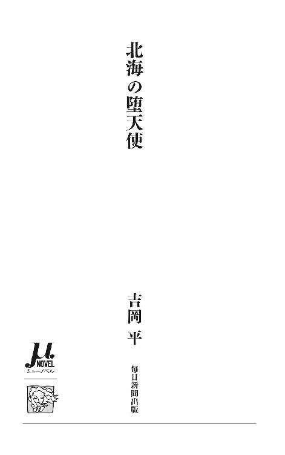
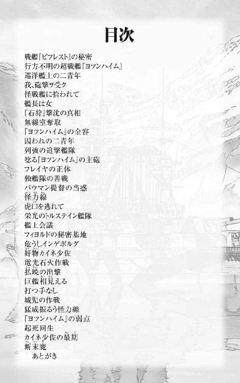
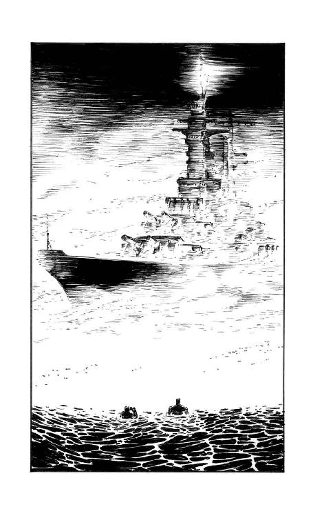
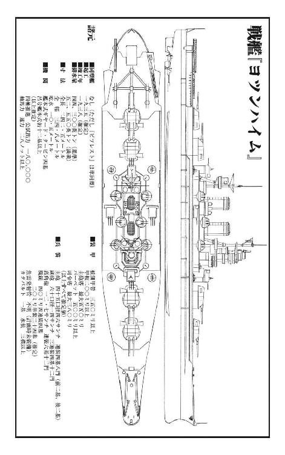
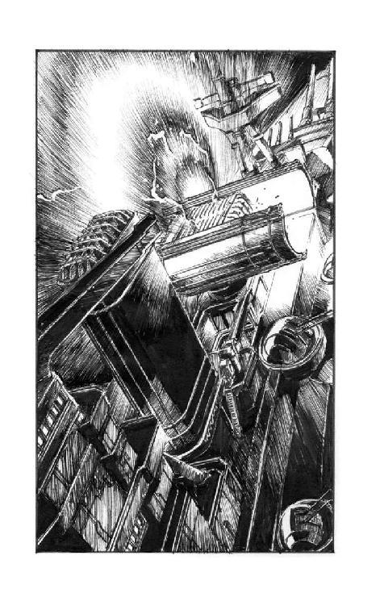
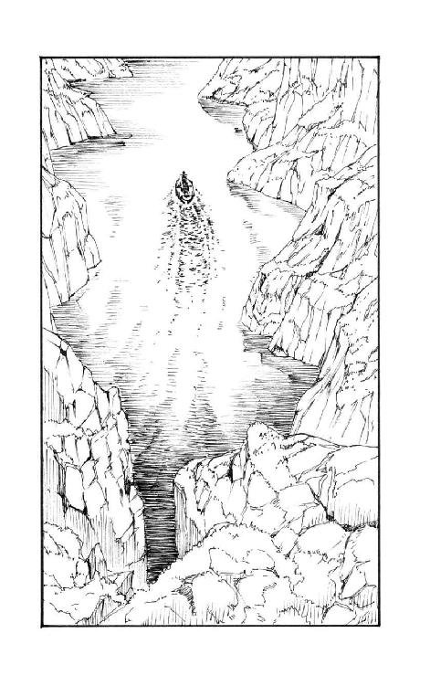
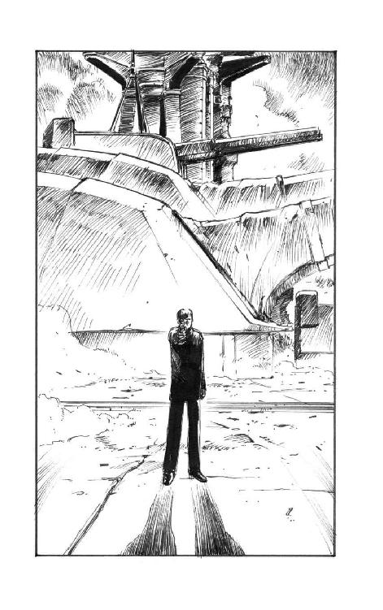

| 北海の堕天使 (ミューノベル) | |
| 吉岡 平 | |
| 毎日新聞出版 (2016) | |

本書は、１９９１年６月に朝日ソノラマより刊行されました。

イラスト／武半慎吾
これは小説だ。しかし、ただの小説ではない。
ここに書かれることがらは、いまでこそ老人である読者諸君のおじいさんたちが少年だったころ、事実だったかもしれないのです。
そのつもりで読んでください。
諸君は、トルステイン公国をご存じだろうか。そう、スカンジナビア半島のはずれに位置する小国である。
しかし、この国を小国と呼ぶとすれば、それは単に国土の地理的な広さに関してのみであろう。面積こそ四国に満たないこの小国は千六百万の人口を擁し、ほとんど無尽蔵とも思える石油と地下資源を有している。近隣諸国の間でも睨みを利かす国力と百五十万人の常備軍。そして諸君もご存じのように、このトルステイン公国は、我が日本、ナチス＝ドイツ、イタリアに次ぐ枢軸第四番目の同盟国なのだ。
そう、我が同胞である。
トルステイン公国の陸軍は、特に目を見張るほどのものではない。彼らは大小二百の島々からなるこの国の陸上警備隊ほどの意味合いしか持たぬ。だが特筆すべきはその海軍である。これは侮れない。いや、実のところこの小説を書いている僕自身、トルステイン公国が我が同盟国でよかったとほっと胸を撫で下ろしている一人だ。その海軍力は、我が帝国海軍にこそ遠く及ばぬが、数においてドイツ海軍に勝り、イタリアに迫る勢いだ。質では完璧にイタリアを凌駕していよう。
諸君、僕はトルステイン公国を我が同胞と書いた。いや、事実はまったくそのとおりだ。それどころかトルステイン海軍と帝国海軍とは、もっと密接な友好関係にある。運命共同体であることはもちろん、切っても切れぬ繫がりがあるのだ。
トルステインが小国ながら、強大な海軍力を持ちえたのにはそれなりの理由がある。トルステイン公国はワシントン海軍軍縮条約も、ロンドン条約も批准しなかった、数少ない海軍保有国のひとつなのである。
我が日本を筆頭とする列強海軍が、条約でがんじがらめにされながら喘いでいるうちに、トルステイン海軍は条約に縛られていない強みとその無尽蔵の地下資源に負う財力にものを言わせて、あれよあれよという間に強力な軍艦を次々と建造し、瞬く間に端倪すべからざる大海軍国へと成長してしまったのである。同盟国としては、まったく心強いことではないか！
ここで諸君──。
僕は我が同盟国の軍機を漏らすようでまことに心苦しいのだが、この小説をお読みの諸君にだけ、ある重大な秘密を打ち明けねばならぬ必要に迫られている。
秘密というのは他でもない、トルステイン海軍の誇る新造戦艦『ビフレスト』のことだ。
この戦艦は竣工したばかりの、文字通りの最新鋭艦だ。このタイプのものとしてはただ一隻で、同型艦はない。一九三九年版のジェーン海軍年鑑を信頼に値するものとみるならば、基準排水量は三万八千八百トン、武装は四十サンチ主砲十二門、十四サンチ副砲十二門、十二・七サンチ高角砲十二門ときわめて強力である。機関は十五万三千馬力で、速力は二十九ノットを軽く出す。
この数字を鵜呑みにすれば、『ビフレスト』は他国に比類なき、強力無比の戦艦だと言える。現に米国海軍あたりでは、この『ビフレスト』のデータを見て、海軍省がちょっとした恐怖に陥ったというまことしやかな噂が、我が国の艦政本部にも漏れ聞こえてきたのである。
けれども僕は、この数字を全面的には信用していない。頭から信じないというわけではないけれど、少なくとも排水量に関しては眉唾ものだと思っている。
読者諸君の中でも、ちょっと軍艦のことに詳しい人なら、僕と同じ疑問を抱くことだろう。三万八千八百トンという排水量は、我が国の『長門』『陸奥』の二大戦艦（ご存じのようにその主砲は『ビフレスト』と同じ四十サンチである。ただしこちらは、八門しか搭載していない）とほぼ同じである。それだけの排水量の艦に、四十サンチ砲を三連装四基十二門も搭載できるはずがないことなど、ちょっと考えればわかる。しかも『ビフレスト』は、我が『長門』より四ノットも優速なのである。
もし、これらのデータがすべて本物であるとするならば、『ビフレスト』の装甲は、ペラペラで、紙のように薄いとみなければなるまい。これでは戦艦とはとても呼べず、巡洋戦艦でしかない。ところがトルステイン海軍艦政本部が発表するところによれば、『ビフレスト』の装甲は、あらゆる角度で撃ち込まれる、四十サンチ砲弾の命中にも耐えるとされているのだ。従って、こんな詐欺のような数字を、僕は頭から信じる気にはとてもなれない。
まあ、他の列強海軍の精鋭戦艦から推し量って、『ビフレスト』の排水量は、どう少なく見積もっても四万五千乃至五万トンといったところが妥当な線だろう。これ以下では前記の諸元を満たすことは到底、不可能なのだ。もしかしたら、六万トンに迫る巨大戦艦かも知れない。速力二十九ノットというのも、まあ話半分で、実際には二十六、七ノットではないか......。
とまあ、最初『ビフレスト』のデータを見たときからずっと、僕は思っていた。話ほどのことはない見掛け倒しと勘繰っていた。
ところが最近、友人である海軍省のＡという少佐から事の真相を聞かされて、僕はあっと驚いた。それどころか、真相も知らず勝手に憶測していた自分自身の不明を大いに恥じることと相成ったのである。
確かに『ビフレスト』は排水量で鯖を読んでいた。けれどもそれは、たった二千四百トンにしか過ぎなかった。戦艦『ビフレスト』の基準排水量はきっかり四万一千二百トン。それ以上は一グラムだって超過しちゃいない。
無論他の数字も、すべて真実である。それどころか機関出力は実際には十八万馬力で、速力も三十ノットを楽に超えるというではないか。
ああ、世界にこれほど強力な軍艦がふたつとあろうか。しかも悔しいではないか、その、誰が見たって世界最強の軍艦が、我が日本ではなく、いかに同盟国とはいえ北欧の、白色人種の国のものだとは──！
ところが僕がそう感嘆した途端、件の海軍少佐は、にやっと笑ってこう言ったものだった。
「そう悲観したものでもないさ、君」
Ａ海軍少佐はブライアのパイプをくゆらせながら、英国製マイミックスチュアを煙に変えた。彼はワルキューレに召されるのでなかったら、絶対肺癌が原因で死ぬことになるに違いなかった。
「どうしてだい」
と僕。
「こんな優れた軍艦が、我が大和民族の手になる設計でないとは、いかにも残念じゃないか」
「だからさ」
Ａ少佐は笑いながら言った。
「大和民族の手になる設計なんだ、『ビフレスト』は」
「なんだって」
諸君、そのときの僕の驚きを察していただけるだろうか。バーレンツ海を活躍の主舞台とする北欧海軍の戦艦が、日本人の手になる設計とは──！
僕は思わず身を乗り出していた。
「大きな声じゃ言えないが......」
地声の大きなＡ少佐は、肥った赤ら顔に、自慢の髭を揺らしながら言った。さも愉快そうだった。
「『ビフレスト』の基本設計は、あの工学博士で『古鷹』や『妙高』を設計した我が国の至宝・Ｈ造船中将さ。実際に図面を引いたのは艦政本部の若い連中だよ」
「Ｈ中将！」
僕は軍艦マニアなら誰でも知っている、その名を思わず叫んでいた。
「そいつは驚きだなあ......」
「それだけじゃないぞ」
自慢たらしく、Ａ少佐は続けた。
「『ビフレスト』は横須賀で進水している。大まかな艤装もそこで受けているんだ。自慢のタービン機関は艦本式。主砲も『長門』『陸奥』の連装四十サンチ砲塔を三連装に改めたもので、基本的には同じだ。十四サンチ副砲も、高角砲も我が軍の制式なんだよ。そうそう、飛行機射出機も呉式の新型だよ。違うのは小火器くらいかな。『ビフレスト』の対空機関砲はスウェーデンのボフォース社製四十ミリとスイス・エリコン社製の二十ミリ。それだけだ。あとはビスの一本まで、全部日本製さ」
「道理で！」
僕の疑問は、瞬時にして氷解した。おそらく読者諸君もそうだろう。
「『ビフレスト』が日本製の軍艦だったなんてな。優秀なわけだ」
外国に軍艦の建造を依頼するのは別に珍しいことではない。我が国でも日露戦争の頃まではほとんどの軍艦はそうだった。現在でも列強以外の弱小海軍はそうだ。そして、現に我が戦艦『金剛』は英国ヴィッカース製である。（もっとも、その後の大改装で、ほとんど日本製と呼んでもいいくらいの内容になっているが......）
「どうだ、痛快だろう」
「痛快だねえ」
僕は言った。大和民族の端くれとして素直に嬉しい。
けれどもひとつの疑問が氷解したと同時に、もうひとつの疑問がむくむくと頭をもたげてきた。
「けど、どうしてトルステイン公国は、戦艦の建造を我が国に依頼してきたんだろう？」
「簡単な話さ」
Ａ少佐は言った。
「トルステイン公国には金はあっても、軍艦を、特に大型の軍艦を建造するだけの技術はないのさ。同時に、巨大な戦艦を進水させるだけの船渠もね」
「なるほど」
考えてみればもっともな話だった。
「だからこそ、ワシントン条約でも、ロンドン条約のときにも、お目こぼしにあずかれたというわけさ」
「それで世界一の造船国日本に軍艦の設計と建造を依頼したというわけか」
僕は愉快だった。
「連中も、けっこう見る目があるじゃないか。もっと近いドイツやイタリアに依頼せず、たとえ地球を半周して回航することになっても、わざわざ日本に依頼するとはね」
「そうだ」
Ａ少佐はそのとおりとうなずいた。
「もちろん、そうすることによって我が日本にも計り知れないメリットがあった。単に金と、トルステインの無尽蔵の石油が手に入るだけじゃない。実際に巨大な軍艦が建造できるということは、技術的にも大きな経験と進歩に繫がるのさ。こっちは軍縮条約で新しい軍艦を造れない欲求不満がだいぶたまっていたところだったから、トルステインからの話があったときはまさしく渡りに船だった。若い連中は嬉々として設計図と格闘していたよ。おかげで『ビフレスト』を建造した新技術を、その後の我が国の軍艦にも応用することができた。これだけは図面を引いたり、頭の中で考えたりするだけじゃ、わからんからね」
「そうだろうなあ」
「現に『ビフレスト』の船体構造には、新開発の電気溶接構造が大胆に導入してある。我が『最上』のときには問題のあった電気溶接も『ビフレスト』ではほぼ実用化の域に到達したのさ。こう言うとトルステインの連中には悪いが、よその国の軍艦なので失敗を恐れず、思い切った新技術を存分に投入できたよ」
「そうだね」
僕はくすくすと笑った。
「でも、結果として素晴らしい戦艦を手に入れることができたんだから、トルステイン公国の人たちにとってもよかったんじゃないかと、僕は思うね」
「もちろんさ」
Ａ少佐は強くうなずいた。
「取引とは、双方にとって有利なものでなければならない。むしろ、気が気でなかったのは、アメリカやイギリスの連中だろう。名目はどうであれ、世界最強の軍艦を、我々に建造されてしまったんだからね。心穏やかではいられなかっただろうよ」
「違いない」
僕は笑って、日本とトルステイン両国の友好のために乾杯した。
「しかし、こんな強力な戦艦は、ここしばらくは現れないだろうねえ」
Ａ少佐が特別の計らいで見せてくれた『ビフレスト』の非公式な図面を見ながら、僕はワインのゴブレットを傾けた。
「まったく見れば見るほど精悍な軍艦だ。日本人の手による設計だとわかった今ではよけいにそう思えるから不思議だね。これほどの軍艦は、世界にふたつとないだろうな」
「それがあるんだよ」
少佐はボソリと低い声で言った。同時にそれまで明るかった彼の表情が、不意に曇ったように僕には見えた。
「いや、より正確にはあったんだ。もう一隻......」
「なんだって？」
僕は思わず、十年来の親友である少佐の顔を見た。
「『ビフレスト』には、姉妹艦があった。こちらのほうはそれこそ極秘も極秘。第一級の軍事機密だがね」
「それはどうにも、聞き捨てならないね」
僕は極上のワインの味も忘れて、Ａ少佐の顔をまじまじと見た。
「『ビフレスト』に姉妹艦があっただなんて......。同型艦かい」
「準同型艦というやつさ」
寂しげな微笑を浮かべつつ、少佐は言った。
「その戦艦のほうが『ビフレスト』よりも若干、装甲が厚く造られていたのだ。基準排水量にして『ビフレスト』よりも三千トンばかり重く、二ノットほど遅い。その他はほとんど同型と言ってもいいくらい似ている。サイズも、砲塔配置も同じだ。ただひとつの点を除いてはね」
「それは？」
「主砲さ」
少佐は言った。
「『ヨツンハイム』──それがその戦艦の名なんだが──の主砲は、世界最大なのだ。『ビフレスト』の主砲は四十サンチ三連装四基十二門。それが『ヨツンハイム』は四十六サンチの連装四基八門になっている。両者の違いは端的に言ってそれだけだ。あとはまったくの同型と言っていい」
「──！」
ああ諸君。この世にこれほど強力な戦艦があろうか。『ビフレスト』の四十サンチ砲さえ十分に恐ろしい破壊力だというのに、それすらも上回る四十六サンチの巨砲だという。いったいそれが火を吐いたとき、どのようなことが起こるのか。僕にはまったく想像もつかなかった。少なくともそのときは......。
今日でこそ、我々は『大和』『武蔵』を知っている。それに搭載された四十六サンチ主砲の威力のほども知悉している。だが、そう、その当時、昭和十四年の時点では、四十六サンチ砲の威力など我々の理解の範疇外にあったのだ。そして、世界初の四十六サンチ砲搭載艦である超弩級戦艦『ヨツンハイム』の竣工は『大和』より実に三年以上も早かったのである。
「よくそんな巨大な砲があったものだねえ」
感心しつつ僕は呟く。
「軍艦の大砲も、戦艦級となればそれを作ることさえ相当な時間がかかるというじゃないか。まして前代未聞の四十六サンチ、インチにすればええと......」
僕は指を折って数える。昔から暗算は苦手だ。
「十八インチ」
Ａ少佐が見かねて助け船を出した。
「そう、十八インチ。そんな巨砲を新しく設計するだけでも大変だったろう」
「実はそうでもなかった」
「というと？」
「『ヨツンハイム』に搭載した主砲は、ワシントン条約で幻に終わった八八艦隊の巡洋戦艦の最後の四隻、仮称『第十三番艦』に搭載予定だったものの流用なのさ。基本的な設計は完了していたから、楽だったよ」
「なるほど」
八八艦隊については僕も知っている。戦艦八隻、巡洋戦艦八隻による空前絶後の艦隊配備計画だ。結局完成したのは最初の戦艦二隻、もっとも小型の『長門』と『陸奥』だけだった。
それより大型の巡洋戦艦『赤城』と戦艦『加賀』が計画を変更し空母として完成した以外は、すべて廃棄処分にされたわけだが、計画だけで起工すらしなかった最後のそして最大の四隻が、巡洋戦艦の最後のグループ、仮称『第十三番艦』から『第十六番艦』であった。これは『赤城』や『加賀』よりさらに大きい。後の大和級にほぼ匹敵する巨艦である。計画された主砲も大和級と同じ口径の四十六サンチ。
幻の戦艦『ヨツンハイム』に搭載された主砲は、その『第十三番艦』に搭載される予定だった四十六サンチ砲だという。
「しかし、いいのかい？」
僕はふと心配になってしまった。
「いくら同盟国でも、そんな強力な主砲を搭載する戦艦を造ってしまって。我が国最強の『長門』『陸奥』でも、主砲は四十サンチだろう」
もしトルステイン公国が日本の敵に回るようなことがあった場合（ないと断言はできまい）、四十サンチ砲八門の『長門』『陸奥』では、四十サンチ砲十二門の『ビフレスト』及び、四十六サンチ砲八門の『ヨツンハイム』には到底太刀打ちできないことになってしまう。
「その懸念は確かにあったよ」
少佐は正直に言った。
「しかし、実際問題として、世界最強の軍艦を造りたいという技術者たちの抗し難い衝動には、勝てなかった」
「ありがちな話だな」
僕は苦笑を禁じ得なかった。その気持ちはよくわかる。そのジレンマは常に技術者の性といってもいい。
「それに、四十六サンチ砲搭載の軍艦は、なにも『ヨツンハイム』だけとは限らないさ。現に、『ビフレスト』と『ヨツンハイム』を建造した技術を活かして造られる、我が新造戦艦は......」
そこまで言いかけてＡ少佐は、
「おっと、これは本物の軍機に関することだった。くわばらくわばら......」
と慌てて口をつぐみ、僕に向けて意味ありげに苦笑してみせたのだった。
そう、諸君はすでに知っていようが、僕がその苦笑の正体を知るためにはそれから二年後、『大和』の竣工まで待たねばならないわけだ。
「だけど──」
僕は抱いていた新たな疑問を素直に少佐にぶつけてみた。
「その世界最強の戦艦は、『ヨツンハイム』は、どうなった？」
「いなくなった」
それに対するＡ少佐の返事は、いかにもそっけないものであった。
「消えてしまった。竣工して、日本から喜望峰経由でトルステイン公国に回航中、北ドイツの沖で消息を絶ったきりだ」
「もったいない！」
僕は思わず叫んだ。何千万円、いや、もしかすると何億円（当時）もの価格で建造した世界最強の軍艦が、煙のように消えてしまうなんて。
「以来、『ヨツンハイム』の消息は杳として知れない。八方手を尽くして捜したことは言うまでもない。無論、極秘裡にだが......。だが、まったく手掛かりなしだ」
「不思議な話だな。仮にも軍艦が消えてしまうなんて......」
僕は言った。ふと、僕の脳裏を遥か昔のとある事件のことが過った。
「『畝傍』事件のことを思い出すね。もっともあのときはコースが、『ヨツンハイム』のときとは逆だが......」
『畝傍』は我が海軍が日清戦争の前に、フランスのル・アーブル造船所に発注した装甲巡洋艦だ。フランスから日本への回航途中、シンガポール沖で消息を絶った。
「そうなんだ」
少佐はうなずく。
「公にこそできないものの、今回の『ヨツンハイム』事件は、海軍省内部では『畝傍』以来の怪事件として、囁かれている」
さもありなんという感じだった。
「同じ航路で回航した『ビフレスト』のほうは無事に到着して、『ヨツンハイム』のほうだけが行方不明だなんてな」
「まさか、ひっくり返ったんじゃないだろうね」
僕は冗談半分で言ってみた。
「トップヘビーで。ほら、水雷艇『友鶴』のときのようにさ」
しかしこの冗談はＡ少佐には、冗談として通じなかった。
「馬鹿を言いたまえ！」
Ａ少佐は一瞬、真剣に怒りを滾らせて言ったのだった。
「我が海軍艦政本部が総力を結集して建造した戦艦が、そう簡単に転覆などするはずがないじゃないかッ！」
有無を言わさぬ口調であった。
「しかし......」
「しかしも糞もない！」
さっきまでニコニコしていた赤ら顔が、今は烈火の如く怒りに燃えている。
「確かに『友鶴』事件、それに第四艦隊事件は、我が帝国海軍史上に残る汚点だ。しかし、その教訓を活かせない我々だとでも思っているのかね？」
「そういう意味で言ったんじゃないよ」
思いもかけぬ少佐の怒りに、いささか辟易しながら僕は言った。
「ただ、そんな可能性もあるんじゃないかと思ってみただけさ」
「その可能性なら、ないと断言しておこう」
あくまでも強い口調で、Ａ少佐は言った。
「『友鶴』事件で得た教訓は、『ヨツンハイム』にも活かされておるのだ。断じてトップヘビーで転覆するような軍艦ではない。それに、ほとんど同型の『ビフレスト』には、何らの欠陥も見受けられんのだ。『ヨツンハイム』だけが欠陥を抱えているということは考えにくい」
言われてみれば、確かにそのとおりではある。
「じゃあ」
僕は訊いた。
「それならなぜ、『ヨツンハイム』だけが忽然と、消えてしまったのだ」
「わからん」
Ａ少佐は憮然とした表情で首を振っただけだった。
「皆目わからん！」
あとはただ、重たい沈黙があった。
さて諸君。
北海に忽然として消えた謎の新造戦艦『ヨツンハイム』。その主砲は前代未聞の四十六サンチ砲だ。
事の真偽はともかくとして、これはまたいたく、我々の想像力をたくましくする素材ではないか──。
はたして『ヨツンハイム』は何処に。
さて──
世界最強の戦艦『ヨツンハイム』の行方は気がかりではあるが、我々はしばしその話題から離れて、別の場所に目を向けてみようではないか。なに、寄り道などとは言わせない。いずれこちらのほうも、我々にとって最大の懸念事に、いやでも絡んでくるのだから......。
北大西洋、ノルウェー沖を北海に向けて一路北上する一隻の軍艦があった。三本煙突、細い船体、波を切るスプーン・カッター・バウの艦首──。そう、これが我が国なら、どこの軍港へ行っても必ず一隻は見かける五千五百トン級の軽巡洋艦である。その独特のシルエットには諸君も見覚えがあろう。戦艦や、新鋭の重巡ほどではないが、我が帝国海軍の誇る、海の護りである。
その五千五百トン軽巡がなにゆえ、日本を遠く離れたこんな海域にいるのか。
一口に言えば、親善訪問である。日本と、最有力の海洋同盟国であるトルステイン公国を結ぶ、重要な特使の任を、その巡洋艦『石狩』は帯びていた。国家元首である公王アムレード・ハディング陛下に謁見を賜るべく、一人の青年特使が、『石狩』艦上には乗り込んでいた。
特使、その名を樫村城児という。二十七歳の海軍大尉だ。六尺豊かな長身、引き締まった筋肉質の体、険しい眉と優しい目。若輩ながら我が帝国海軍の誇りと呼ぶに足る日本男児であった。
諸君、ここだけの話だが、彼は単なる特使としての（無論、単なる、などと言ってしまうにはあまりにも重要な任務ではあるが）任務の他に、もう一つのある重大な密命をも帯びていた。我が国、そして亜細亜、ひいては世界の将来にも関わるきわめて重大な使命だ。ここではくどくどと述べない。だがそのことのみは、どうか諸君も心におとめおき願いたい。
樫村大尉はデッキに出て、北大西洋になかなか沈もうとはしない夕陽を見つめていた。白夜の季節が近いのだ。さっきからかれこれ二時間近くも、彼は同じ夕陽を眺めている計算になろうか。
「美しいねえ」
振り向くともう一人の青年が立っていた。この『石狩』の艦内でただ一人、軍服を着ていない人間だった。高垣進策というその青年は今回の親善訪問を取材するために『帝都日報』から派遣された新聞記者だ。二十四歳。三つ揃いの上から厚手のカポック入りダッフルコートを羽織り、首からはライカのキャメラをぶら下げている。洒落た黒縁眼鏡の奥の目は賢そうだ。新聞記者と言っても、いわゆるデスクに張り付いているタイプではない。いわば文武両道、彼も立派な日本男児だ。
「この夕陽を見ていると、心が洗われるよ」
「そうだね」
樫村大尉はこくんとうなずく。
「国の妹さんを思い出したかい」
「よせやい」
高垣記者は照れ隠しに頭を振った。
「僕はそんなにおセンチじゃないよ。今しも希望に胸膨らませていたところさ。君と同じようにね」
「なるほど」
樫村大尉は横を向いたまま、微かに笑ってみせた。
「君こそ、新婚の奥さんを日本に残してきたままじゃないか。恋しくはないのかい？」
「恋しくないわけじゃないが......」
樫村大尉は夕陽を見た。
「それよりも、特使としての使命の重さに、身が引き締まる想いさ。家内のことなど恋しがってるときじゃない」
「無理するなよ」
「無理なんかしていない」
大尉はいささかムキになって言った。
「それより見ろよ、あの夕陽。そんなことなど忘れさせるほどに美しいじゃないか」
「僕には倍、日本のことを思い出させる美しさなんだがねえ......」
「妹さんをかい」
「ああ、そして君の奥さんをだ」
二人は顔を見合わせて苦笑した。樫村大尉の細君と、高垣記者との妹君とは、二人の別々の美女にあらず、同一人物なのであった。つまり二人は、義理の兄弟ということになる。
しかしまあ、今は日本に残してきたことがらよりも、前途に希望を馳せるとしよう。北海の気長な夕陽を眺めながら、二人は期せずしてそういう結論に達したのであった。
「まるで、でっかい軍艦旗だねえ」
波間に没しそうでなかなか没しない夕陽を見やりながら、樫村大尉が言えば、
「僕にはでっかいおはぎに見える」
と高垣記者が茶化した。当分は食べられそうにもない。
「願わくばおはぎよ、そのまま沈むな。しばしその姿を、洋上にとどめたまえ、か」
「違いない」
樫村大尉が笑う。
高垣は首から下げていたライカⅡ型を構え、夕陽に向けて一枚シャッターを切った。レンズは沈胴式エルマーの50ミリＦである。家が一軒、楽に買える値段のキャメラだ。
「あの赤さが写真に出ないのは残念だよ。軍はまだ、カラーフィルムの開発に成功してないのかい。できれば一本回して欲しいんだが......。テストレポートを書いて提出するから」
「さあね......」
樫村はおぼつかなげに首を振る。
「もし成功していたとしても、機密扱いだろう。僕らのところには回ってきはしない」
「つれないな」
「でも、イーストマンの新製品なら、もうすぐ実用化という噂を聞いた」
「やはりそういう技術は、日本よりも欧米のほうが進んでいるからな」
高垣は残念そうに自分のライカを見た。
「いずれにせよ、我々のところにカラーフィルムが回ってくるのは当分先のことになりそうだ」
「ここにいたのかね。両君」
野太い声に振り向けば、それは『石狩』艦長の大林海軍大佐であった。気鋭の軍人だが、いわゆるガチガチというイメージには程遠く、気さくな一面も持ち合わせている。
「本艦は間もなくトルステインの領海に入る。明日の夜には首都テュルフィングで歓迎の晩餐会だよ」
「そいつはいやでも、心が沸き立つねえ」
食いっ気たっぷりの高垣記者が舌なめずりした。
「本艦の食事もけっして悪くはないが、やはり公爵家の料理人が腕をふるった海鮮料理には比ぶべくもないだろうからねえ......」
「君はそれだけがお目当てみたいだねえ」
なかば呆れつつ、彼の年長の義弟である海軍大尉が言った。
「それだけじゃないが、今回の旅における非常に大きな目的のひとつであることは確かだ」
臆面もなく、高垣進策は言った。
「卑しくも食の楽しみを否定する者は、人生の半分を端から放棄するも同じさ」
その意見に全面的には与しない大尉は、艦長と顔を見合わせて苦笑する。
さしも長く、地球の自転に抗していた太陽も、やがて力尽きたかのように波間に没しようとしていた。辺りは急速に、夜の帳に包まれる。
「船室に戻ったほうがいいと思うがね」
親切心から艦長が言った。
「北海の夜は想像以上に冷えるからね。つまらぬ風邪をひいて親善特使としての使命に支障でも来したらつまらんだろう」
二人は素直に、大林艦長の忠告に従うことにした。
樫村大尉はもちろん、記者である高垣にも士官待遇として予備士官室があてがわれていた。豪華客船の客室とまではいかないが、日本を遠く離れての巡洋艦の艦上で、それ以上は望むべくもない寝心地であった。少なくとも波に弄ばれる晩などは、揺れる水兵居住区のハンモックなどよりも遥かに過ごしやすいことは保証済みである。
「ではお先に」
艦長が踵を返し、樫村大尉がそれに続く。最後に残った高垣が、彼の後を追おうとして振り向いた刹那──
彼は視界の片隅にそれを認めた。
「おい」
彼は義弟に呼びかける。
「なにかね？」
呼ばれた当の本人はもとより、ただならぬ声に艦長までが振り向いた。
「あれを──」
だが指差す彼方に、すでにそれはない。彼が確かに見たはずのものは忽然と消えていた。
「いったい何が見えたっていうんだ」
職業柄、義兄よりも遥かに目のいい大尉が、手をかざしながらその方向に視線をやった。太陽の没し去った海面には、ただただ紺色の水平線が続くのみである。
「船だ」
高垣が言った。
「それも商船や輸送船ではない。軍艦だ。確かに見た」
「この領域には──」
苦笑気味の艦長が言った。
「我々の他にいかなる海軍の軍艦も航行してはいない」
職業上の確信に満ちた言葉であった。
「おおかた幻でも見たんだろう」
「北海で蜃気楼ですか？」
確かに海の上では彼は素人だ。だが、いかに相手が玄人とはいえ、あからさまな素人扱いが面白かろうはずがない。
「じゃあ、いわゆるセント・エルモの火でも見たんだろう」
今度は大尉が、茶化して言った。
「錯覚じゃない」
高垣記者はがんばった。
「確かに軍艦を見たんだ。それも僕の目には、大型艦のように見えた。駆逐艦や水雷艇じゃない。戦艦か巡洋艦という風情だった」
「じゃあ、きっとそうだろう」
大尉は頭から信用していない。
「君が見たのは正真正銘の軍艦だ。ただし、幽霊船というやつだがね」
「僕は真面目なんだよ、大尉殿」
「ならそのうち」
大尉は言った。
「その正しさを証明するときがきっとくるさ」
「.........」
高垣はふくれた。すでに艦長は寒そうにダッフルコートの襟を合わせると、艦橋に上がってしまっている。
「とにかく今は、船室に戻ろうじゃないか。ここはもう寒い」
高垣は後ろ髪を引かれる想いで、もう一度だけその海面を振り向いた。
彼の漠然たる不安の原因は、茫莫たる無限の闇の中であった。
高垣の不安は的中した。
その、翌朝未明のことであった。翌朝とは言っても北海の夏、夜はほんの二時間ほどで明ける。つまり二人が士官室に戻って一時間も経ったか経たぬかという頃、帝国海軍巡洋艦『石狩』は、正体不明の敵から、警告もなしに不意に砲撃を受けたのであった。
それも、大口径砲による遠距離射撃であった。唸る砲弾は、ほとんど垂直に落下してくる。射距離が遠い証拠だ。
「すわ」
二人は寝棚から飛び出すと、コートを羽織る間ももどかしく、デッキへと続くラッタルを駆け上っていた。
「どうしたのだ？」
戦場のような騒ぎの上甲板で、（否、すでにしてそこは戦場であった）、樫村大尉は通りがかった兵曹長を摑まえて訊いてみた。
「わからん」
当惑顔の兵曹長が忙しそうに答えるが、さすがに相手が上官であることに気づき、
「ああ、これは大尉殿」
と帽子を取った。
「挨拶はいい」
樫村は言った。
「いったい何が起こったのだ？」
「皆目わかりません」
それ以上の返事を当の兵曹長に求めるのは、酷というものだろう。
「気がついたら砲撃ですわ。闇の中からいきなり撃たれました。相手がどこの軍艦か、どこから撃ってきとるのか、こっちが訊きたいくらいです」
「さっきの船だ！」
したりと、高垣が叫んだ。
「みろ！ やっぱり僕の目に間違いはなかった。あれは戦艦だったんだ」
「自分の正しさが証明できて、満足かね」
樫村大尉は義兄を見た。
「残念ながら今はそれを自慢していられる状況じゃない。僕は海軍でも軍艦乗りじゃない。海戦の専門家というわけじゃないが、それでも状況が我々にとって圧倒的に不利であることぐらいはわかるつもりだ」
「だからと言って、僕にはどうすることもできないね。君以上に」
口の減らない小癪な義兄は切り返した。
「相手はおそらく戦艦で、こちらは軽巡だ。どう考えても勝ち目はない。おまけに敵にはこちらの位置が筒抜けだというのに、こちらには敵の正体も、位置さえもわからんときている。とりあえず僕にできることは、あの砲弾が命中するとき、少しでもそこから離れた場所か遮蔽物の陰にいることを神に祈るのみだね」
「それだけ饒舌になる余裕があるなら」
大尉は言った。
「この決定的瞬間に写真の一枚でも撮ったらどうだ。それこそ新聞記者たる君の本分だろう。それともそのキャメラは飾り物か？」
「撮るとも、撮らいでか」
言われて高垣は、ついムキになる。自らの命の危険すら忘れて、
「爆発の瞬間を収めれば特ダネ間違いなしだ。もし僕が弾に当たって死んでも、幸い君と違って嘆き悲しむ細君はいないからね」
「そう意固地になるなよ」
「意固地にもなるさ。もしものときは、真知子のことをよろしく頼む」
そう言って決死の覚悟で甲板に出ようとするのを、樫村は必死の想いで引き戻さねばならなかった。
着弾による巨大な水柱は、『石狩』を包むように近づいてくる。次第に狙いが正確になってきているのだ。
「おかしい」
兵員たちが慌ただしく行き交う甲板で、高垣は首を傾げた。
「どうしてこの暗闇で、敵にはこちらの位置が正確にわかるんだろう？」
「もしかしたら」
樫村が言った。
「電探かも知れん」
「なんだそのデンタンって？」
「電波探信儀。アメリカ人がレーダーと呼んでいるあれさ」
「しかし、だってあれは、君！」
驚き怪しみつつも、高垣は義弟の顔を見た。
「原理的にはともかく、まだどこの国も実用化していないはずじゃないか」
「すでにされていないとも言えん」
樫村はその端正な眉間に皺を寄せて呟いた。
「現に僕らが遭遇している敵はそれを持っている。この狙いの正確さをみろ。そう考えるのが自然じゃないかね」
「そうだが......」
「右舷前方二時方向！」
そのとき見張りの水兵が叫んだ。
「艦影が見えます！ 戦艦！」
ようやくにして遅れ馳せながら、『石狩』も敵の位置を摑んだ。探照灯がさっと、射るような光を投げかける。
漆黒の海と空を背景に浮かび上がったシルエットは、そう、紛れもない戦艦だ。それも超弩級の大戦艦である。一杯に仰角をかけた主砲が、天を睨む。
「あいつだ！」
高垣が叫んだ。
「僕が見たのは紛れもなくあいつだよ」
「......」
樫村のほうは無言で、じっとその艦影に見入る。
その主砲がぱっと閃くのが見えた。狙われているほうにしてみれば、身も凍る斉射である。
「畜生！」
高垣が叫び、その艦影をキャメラに収めようとした。
「しかし、いったいどこの国の戦艦だろう？ アメリカか。それともロシアか......」
「アメリカ戦艦がこの海域にいるとは考えにくい」
「じゃあ......」
「あのシルエットはアメリカ戦艦の籠マストじゃない。ロシア戦艦のそれとも違う。僕の知る限りでは、どんな戦艦の艦型とも一致しない。むしろ......」
そこで思わせぶりに言葉を区切った。
「むしろ、なんだ？」
「何かに似ているというのならむしろ、日本戦艦の仏塔マストに近いシルエットだ」
「まさか！」
それこそ高垣には信じ難かった。
「日本戦艦が同胞の艦を攻撃するなんて。それにだいいち、なんで日本戦艦がこんなところにいるのだ」
「だからあれは、日本戦艦じゃないよ。よく似てはいるが......」
すぐ近くに上がった巨大な水柱が、声を搔き消す。
「なんて砲だ」
濡れ鼠になりながら、樫村大尉は叫んでいた。
「この威力は少なくとも四十サンチか、それ以上......」
考えるだに、そら恐ろしかった。
このときになってようやく、『石狩』の主砲が怪戦艦に向けて応射を始めた。片舷六門の十四サンチ砲が必死に撃ち返す。だがその砲の、敵に比べてなんと心細く思えることか。こちらの砲弾は敵に届かず、すべて手前の海面に、空しく小さな水柱を上げる。
「勝負にならん」
高垣がそう言った瞬間、『石狩』を林立する水柱が包んだ。ついに敵主砲に夾叉されたのだ。
次の斉射は、最初の命中弾を艦の中央部に与えた。装甲の薄い、と言うよりないも同然の軽巡にとって、艦の致命部に命中した戦艦の主砲弾は、まさしく命取りであった。
哀れ『石狩』は中央部から文字通り真っぷたつに折れ、五百名の将兵を乗せたまま、たちまち北海の海底に吸い込まれていった。
嗚呼、艦上の二青年の運命やいかに──！
沈みゆく船ほど、溺れる者にとっての脅威はない。
沈下する船体が巨大な渦を呼び、脱出しようとする者を海底深く引きずり込むからだ。それはまるで、死にゆく船が、自分一人で逝くのはご免とばかりに、一人でも多くを道連れにしようとしているかのようでもあった。
その悪魔の渦の範囲内から懸命に逃げ出そうともがく幾多の将兵を呑み込んで、『石狩』の断末魔のスクリューは唸った。まだ生きている機関が、北海の奈落の海底へと、自らの船体と乗組員を引きずり込んだのだ。
怪戦艦による主砲の直撃を喰らったとき、大林艦長は艦橋で戦死していた。副長以下多くの士官も、艦長と運命をともにしていた。艦の中央部にいた者ではただ、我らが樫村・高垣の二青年が、遮蔽物の陰になって、弾片と爆風の禍を免れたのみである。
二人は最初の衝撃で甲板から海に放り出されたが、そのことが逆に幸いした。二人とも泳ぎは達者であったから、『石狩』が海面下に没するまでのわずかな時間に、渦に巻き込まれないだけの十分な距離を稼ぐことができたのである。
とはいえ──
いかに季節が夏ではあっても、厳寒の北海に救命胴衣もなしに投げ込まれるとは、屈強な二青年にとっても過酷な運命であったと言わざるを得ない。
「どうやら」
起永流古泳法の立ち泳ぎで器用に水を搔きながら、樫村は言った。
「助かったのは、僕たちだけらしいねえ」
まったく呆気ないほどの潔さで、瞬く間に『石狩』はその姿を消してしまった。付近の海面には救命ボートはおろか、板きれ一枚見えない。そして、当然それにしがみついているべき水兵の姿も......。
「轟沈だ」
文字通りの、であった。
二人は広い海原で、全き孤独の状態であった。
「冷たい」
高垣記者のほうが音を上げる。北海の水の冷たさがよほどこたえているのか、その声にも元気がなかった。やっとこさで浮かんでいる感じだ。ただ、そうなってもあのライカを後生大事そうに、海面から精一杯高く持ち上げていた。
「だから」
半ば呆れ半ば怒り、樫村は忠告した。
「そんなもの、とっとと捨ててしまえ」
「そうはいかないよ」
歯の根が合わないほどの震えを怺えながら、なおも高垣はキャメラを放そうとはしない。
「キャメラとフィルムは、新聞記者の命だぜ。歩兵なら、陛下から賜った大事な銃にも匹敵するものだ。濡らしてなるか。それに......」
「それに......なんだ」
「今となってはこれが唯一、僕に残された財産らしい財産だ」
「馬鹿め」
樫村大尉は仕方なく、まだ余力のある腕で義兄の体を後ろから支えてやった。
「しかし、恨むぞ。あの戦艦め」
いくらか余裕が戻ったのか、高垣は悪態をつく。
「本当なら今頃は、テュルフィングで国賓として、給仕つきの晩餐を......。くそっ！」
「ああ、それは悔しいな」
樫村もそれには同意する。その怒りが自分たちに気力を与え、救助されるまでの間、命を延ばしてくれることを期待しながら......。
だが、いったいいつまで待てばいいのだ？ 救助は間に合うのか？ いや、そもそもこの海域に、我々に救助の手を差し伸べてくれるべき船は......。
くだらない考えを、大尉は激しくかぶりを振ることで振り払う。待つしかない。今は。
「トルステインの料理は、どんなものだろうねえ。僕はこれでけっこう期待していたんだが......」
「きっとうまいぞ」
励ますように樫村は言った。
「助け上げられた後は、どんな料理も格別さ」
「そうだね」
力なく、紫色の唇で高垣は呟いた。
「だけど今は、どんな豪華絢爛たる料理よりも、一杯の熱いスープが御馳走だよ」
「は、同感だな」
大尉は万感の想いを込めてうなずく。
「たまには意見が一致することもあるんだ」
二人はそれから永遠にも思える長い間、波間にその身と、運命を委ねていた。だが、実際には、ごくごく短い時間だったのかも知れない。
やがて、唐突に──
音もなくだしぬけに、巨大な戦艦がそこに浮かんでいた。
接近に気がつかなかったのは、この辺り独特の、海面に漂う濃霧のせいばかりではあるまい。二人の、特に高垣の疲労は限界に達していた。
巨大なシルエットの戦艦の不気味な姿は、海面から吃立する古城かなにかを思わせた。旅人が道に迷ったとき、不意に目の前に出現するとかいうあれだ。棲んでいるのは吸血鬼かも知れない。しかし、たとえそうであろうと、今や疲労困憊の極に達した二人の日本人青年に贅沢は言えなかった。他の選択肢が溺死か、さもなくば凍死しかない以上、自らの艦を沈めた憎むべき吸血鬼の手に運命を委ねるしかなかった。もちろん日本男児としての誇りを守って死んでいくなら別だが──。
不気味な艦の、不気味なマストの上には、蒼白くセント・エルモの火が燃えていた。実のところ高垣のほうは噂には聞いていても、実物にお目にかかるのはこれが初めてであったのだが、こういう状況では特別な感慨を抱くどころではなかった。
その火は迷い込んだ獲物を招く、吸血鬼の館の玄関灯のようにも見えた。

「こいつが......」
悔しそうに高垣が戦艦を見上げた。
「僕らをこんな目に遭わせた奴か」
「ああ、そうだ」
樫村がうなずく。
「そして、どういう気紛れからかは知らないが、僕らを助け上げようとしている」
「わかるもんか」
高垣は精一杯の気力を振り絞って、怪戦艦を睨みつけた。たとえ艦は沈められても、心までは、日本人としての誇りまでは屈服するものか。そういう目だ。
「たとえ救助されても、僕は断じてこんな戦艦の世話にはならないぞ」
「立派だが、それは少し違うな」
顔が土気色になった義兄を気遣いながら、樫村は言った。
「生きていればこそ、逆襲の機会もあるというものさ」
「そのために虜囚の辱めにも敢えて耐えるか。君らしい......」
そうこうしている間にも、戦艦は微速前進でどんどん近づいてくる。舳先に立っている見張りの人影さえ確認できた。黒覆面で、その顔までは確認できないが......。
「いったいどこの国の戦艦だろう」
「それがわかれば、苦労はないさ」
樫村大尉が高垣の体を支えながら言った。
「いや、あるいはひょっとすると、どこの国の軍艦でもないのかも知れん」
「まさか」
二人に向かって、ロープの付いた浮輪が投じられたのは、その直後であった。
「どうする？」
大尉が義兄の顔色を窺う。
「どうするもこうするもない」
震えながら高垣記者は言った。
「助けてくれるというのだ。助けてもらおうじゃないか。それに僕は、たとえ同胞を殺めた敵の施しでも、熱いスープが恋しい」
「わかった」
かくして気鋭の二青年は正体不明の敵の、より正確には正体不明の敵が施してくれるであろう一杯の熱いスープの、軍門に下ったのであった。
戦艦の甲板上に引き上げられた二人は、黒覆面の兵士たちに取り囲まれた。小銃を突きつけられながらも、樫村大尉は気丈に叫んだ。
「捕虜としての正式な扱いを要求する！」
日本語が通じないと見るや、英語で、さらにはドイツ語で同様の内容をまくしたてるが、兵士たちの表情に変化はなかった。もっとも、黒覆面を通して彼らの表情を読み取るのは容易ではなかったが──。
語学に堪能な大尉は、フランス語、イタリア語、スペイン語、さらにはラテン語まで試みたが結果は同様であった。
だが、次から次へと思いつくままに喋り続け、最後に放った言葉がどうやら功を奏した。
連中が銃を下げ、敬礼する姿勢を取ったのだ。
「何を喋った？」
高垣の問いかけに、
「簡単な話さ」
と片目をつぶって笑ってみせる。
「僕らがこれから訪問するはずだった国の、公用語だ」
「じゃあ......」
高垣は驚いた。
「フィンランド語で......」
「ああ」
「じゃあこいつらはまさか、トルステイン公国の......」
「そうとは限るまい」
用心深く、大尉は言った。
「フィンランド語を公用語にしている国は、世界に二つしかない。もっとも、フィンランド語を解したからといって、こいつらがそれらの国の連中とは限るまい」
「そうだが......。しかし、その可能性は濃厚だ」
やがて二人は、丁重な捕虜としてのもてなしを受けた。乾いたベッドと毛布が与えられ、期待していた熱いスープが運ばれてきた。味のほうも期待以上だった。チーズと黒パンの余禄まである。
「しかし、この艦は......」
ようやく人心地がついたところで、またぞろ疑問が頭をもたげてきた。
「どこの国の軍艦なんだろう」
「連中に訊いたって、教えてくれやすまい」
すっかり開き直った態度で、樫村大尉が言った。
「あれこれ考えても仕方のないことだ。我々はいまや捕虜なんだからね。いずれわかることだと割り切って、今は少しでも眠って、体力をつけておくことだね」
「それしかなさそうだな」
樫村も高垣も、そういう意味では肚のすわった漢であった。あれこれ悩んでも利はないと悟ると、たちまち狭いベッドに潜り込み、頭から毛布を被った。
二人が軟禁された部屋そのものは狭かったが、居心地は悪くはなかった。揺れが少ないのだ。換気もきちんとされているようである。
「さすがに大きい艦だけのことはあるなあ」
感心したように高垣が呟く。
「快適だよ。軽巡洋艦から比べたら、天国だな」
「捕虜でなかったら、文字通り大船に乗ったような気分だったろうな」
樫村が相槌を打つ。
「しかし、いま気がついたんだが......」
「どうした？」
「気になるんだ」
「なにが？」
「わからんか」
天井を見上げながら、樫村は言った。
「この艦の、内装だよ」
「それがどうかしたのか」
「同じなんだ。『石狩』と」
「あ──！」
高垣が小さく叫んだ。
「言われてみれば......」
なるほど、確かに似ている。というか、ほとんど同じ規格と仕様による内装なのだ。単に似ているというのではない。似すぎていた。サイズこそ違え、二人がこれまでの航海の間、毎日飽きるほど眺めてきた『石狩』の士官用船室の内装に、この戦艦の内装は......。
「僕は職業柄」
樫村大尉が言った。
「今までいろいろな国の軍艦や商船に乗ってきたんだが、それらのキャビンの内装は千差万別だ。どれひとつとしてお互いに似てはいない。英国艦のやたら豪華な内装とも、ドイツ艦の質実剛健、それでいて実用的な内装とも全然違う。それほど船の内装というものは、それぞれのお国柄を象徴しているものなんだ」
「わかるよ」
「それなのにこの戦艦の内装は、我が帝国海軍の仕様に瓜ふたつだ。こんなことって、あるんだろうか？」
「ある、としか言えないね。今の僕には」
疲れきっているはずなのに、二人はこれで眠れなくなってしまった。
「それに、この戦艦のシルエットは......」
思い出したように、樫村大尉は呟いた。
「もしかしたら......」
とある考えが、彼の脳裏を過る。だが、その考えが具現化しないうちに、監視の兵士が二人の会話を遮った。
「出なさい」
なんと、流暢な日本語であった。
顔も見えない黒覆面の男から、しかも明確な敵から、母国の言葉を聞かされるとは意外を通り越して驚きであった。
「艦長がお会いになる」
「それは命令かな？」
樫村が訊いた。
「命令ではないが、会ったほうがおまえたちにとっても得だと思う」
見張りの兵士は言った。
「ここでじっとしているよりはな」
「は、違いない」
言われてみれば確かにそのとおりであった。だが、なんともしっくりしないものがある。
「さあ、早くしなさい」
兵士はせかした。その手には黒く光る、愉快ではないものが握られている。
「できれば、これを使いたくはありませんからね」
右手の拳銃──おそらくコルトの四十五口径──にちらっと目を落としながら、兵士は言った。その背後にはさらに小銃を構えた、屈強な二人の兵士が付き従う。
「もうひとつ、使って欲しくないものがあるんだがな」
心意気に燃えた表情で高垣が言った。
「頼むから日本語を使うなよ。『石狩』を沈め、五百名の同胞を殺したおまえらの汚れた舌で、俺たちの美しい日本語が凌辱されているのかと思うと、虫酸が走るからな」
「ソーリー」
その愛国心を察してかどうか、兵士は英語で詫びた。
毅然とした表情で、日本人としての威厳を失うことなく、二人は長い通路を進んだ。
「通路の中もだ」
樫村が高垣に、そっと囁いた。
「前に乗ったことのある、『長門』の通路にそっくりだ」
「なるほど」
身についた記者としての悲しい性で、高垣は思わずシャッターを切る。今日の一眼レフとは違ってミラーを内蔵していない彼のライカは、ただコトリと小さな音を立ててシャッターが落ちた。
「おっと、失礼」
兵士が、左手に構えた棒のようなものを、高垣に向かって突き出した。いや、より正確には彼のライカに向けてであった。一瞬、銃かと思ってヒヤリとさせられたのだが、そうではなかった。
「何をする」
「大丈夫、もう終わりました」
黒覆面の下で兵士は平然と嗤う。
「いちおう申し上げておくべきでしたね。艦内は撮影禁止です。もっとも、あとは何枚シャッターを切ってもらっても構いませんよ。あなたのキャメラのフィルムは、すべて、この装置で感光させてしまいましたからね。現像しても、真っ黒な画像が出るだけです」
そう言って、手にした装置を得意げに見る。
「何を使ったんだ？」
高垣の質問にも、黒覆面は笑って答えようとはしない。代わって答えたのは、樫村であった。
「おそらく、レントゲン線かなにかの応用だろう」
「どこまでも面白くない連中だ」
やがて一行は、大きなドアの前で止まった。黒覆面がスイッチを操作すると、音もなくドアが左右に開く。優に十人が乗れそうな、巨大なエレベーターであった。
「どうぞ」
「察するに、この上が艦橋というわけか」
「はい。艦長がお待ちです」
十秒ほど昇って、エレベーターの扉は静かに開いた。
そこは艦橋のさらに上部、艦長公室であった。八畳ほどの板張りの部屋に、豪華な西欧風の内装が施してある。今日で言うなら、アール・デコ調である。
正面に、大きなデスクがあった。その前に艦長は座っていた。
「ようこそ」
兵士以上に流暢な日本語だった。アクセントも発音も、しっかりしている。
だが、それ以上に二人を驚かせたのは、その声であった。鈴を転がすような声。紛れもなく、妙齢の女性の声であったのだ。
二人は思わず、デスクの奥に視線を走らせた。
そしてそこで「あっ」と絶句した。
艦長は、二十代前半の、金髪の美女だったのだ。
「ようこそ、戦艦『ヨツンハイム』へ」
彼女は言って、碧玉の瞳を樫村・高垣の両名に向けて、にっこりと微笑んだのであった。
諸君──。
驚くべきことばかりではないか。
『石狩』を撃沈し、樫村・高垣の二青年を拾い上げたのは、諸君も知っている、あの行方不明の戦艦『ヨツンハイム』だ。しかも、その艦長たるや、妙齢で金髪碧眼の美女。
かかる冒険小説も顔負けの展開に、さしも勇猛果敢にして沈着冷静な日東の剣俠児である樫村大尉も、さっと顔色を失った。
「『ヨツンハイム』......」
大尉も海軍軍人の端くれであるからには、もちろんその名と、行方不明になった経緯を知っている。だからこそ驚きを禁じ得ない。
「これがあの、日本からトルステイン公国に回航中に消息を絶った、戦艦『ヨツンハイム』だと言うのか......」
「そうです」
女艦長が答える。
「そして現在は、我々の指揮下にあります」
「失礼ですが、あなたの」
「はい」
艦長はうなずく。
「私がいちおう、この艦の艦長を務めさせてもらっている、フレイヤと申します」
「いい名だ」
一種うっとりとした声で思わず呟いた義兄に、
「馬鹿だなあ」
と、大尉は小声で囁いた。
「フレイヤというのは、北欧神話に出てくる女神の名だ。猫の引く戦車を駆って、戦場を駆けるという......」
「なんだ」
がっかりしたように、高垣はぼやいた。
「つまり偽名か」
「そういうことだ」
未練がましく、フレイヤ艦長のほうを見る。
「本名を教えてはいただけませんか」
フレイヤは静かに微笑みながら首を振る。
「この艦内ではフレイヤで通っています。乗組員は皆、私のことをフレイヤと呼んでいます」
謎の女艦長フレイヤというわけだ。
「ではフレイヤ艦長」
代わって樫村大尉が、おもむろに口を開いた。その口調には彼女に対する非難が、ありありと感じられる。
「帝国海軍士官として正式に抗議する。あなた並びにあなたの艦の取った行動には、人道的見地からみても、軍人として見ても、許し難いものがある！」
強く、激しい抗議であった。
「そうでしょうね」
フレイヤ艦長はわずかに微笑みつつ、素直に非を認めた。それが高垣には意外であり、樫村にはいささか拍子抜けがした。
「許せないのは、わかります」
「わかります、ですって！」
樫村は嚙みついた。
「それが罪もない五百人の我が同胞を殺しておいての台詞ですか！」
「お怒りは、ごもっともです」
心から同情するといった口調で、フレイヤは言った。しかしその口調とは裏腹に、彼女の表情にはさしたる変化は見えないのだ。整った顔には、変わらず微かな笑みがあるのみ。それが樫村には許せない。
「でも」
フレイヤは言った。
「仕方がなかったのです。ああするより他には」
「.........」
「あなた方を、親善特使として、トルステインの首府テュルフィングに行かせないためには、ああするより他なかったのです」
「我々を──！」
高垣の驚きは、もっともである。
「はい」
フレイヤはうなずく。
「親善特使、いえ、戦争特使としてのあなたがたを我が祖国に行かせるわけには......」
「戦争特使ですって！」
聞き捨てならない呼称に、むっとなったのはむしろ民間人である高垣のほうであった。
「我々のどこが戦争特使なのだ。それどころか胸を張って平和特使と言えるぞ！」
語気荒く、抗弁する。
「あなた方がどう思っていようと」
だがフレイヤは、臆することなく凜として言い放ったのであった。
「今回の来訪が、日本とトルステインの軍事同盟をより密接なものとするためのものであることは、紛れもない事実」
「そうなのか、城児さん」
高垣の目が義弟を射る。
「まさかとは思うが、彼女の言うとおりなのか？」
「確かに」
苦々しい思いで樫村はうなずく。
「来訪の真の目的は軍事同盟、特に武器貸与と技術提携に関することだ。だがそれは、両国の恒久的平和を願ってのことで......」
「それこそ、おためごかしというものです」
フレイヤが言った。この美女は怒れば怒るほど、魅惑的な表情になる。男物の軍服を着ているせいで、よけいにそう見えるのであろうか。
「世界情勢が逼迫しているこの時期、枢軸側に与するということがどういうことか......。祖国を焦土にしたくはない」
「祖国」
その言葉尻を、高垣は鋭く捉えた。
「ではあなたは、トルステインの人間なのか」
「かつてはそうだった」
フレイヤは複雑な表情で言った。
「だが今は、私も部下たちも、そしてこの『ヨツンハイム』も、トルステイン公国とは関係ない。独自の命令系統と救国の志の下に動いている」
「ではこの戦艦は」
「回航中、我々が奪取した」
「なるほど」
樫村はうなずく。
「それもこれも、すべては祖国を愛すればこそだ。もともと我が国の内部には、どこの陣営にも属さず、非武装中立で行こうという気風があった。だが、一部の急進的国民と臣下に担がれたアムレード・ハディング陛下は、日本との同盟に調印しようとしている。彼はまだ若い。何も知らずに利用されているだけなのだが、それだけはなんとしても阻止せねばならん」
フレイヤはそう、一気にまくしたてた。
「なるほど。そういうわけでしたか」
いちおうはうなずいてみせた樫村であったが、
「そちらにはそちらの都合もおありだろう。しかし、お言葉ながら、戦艦を奪取し、その武力によって罪もない同盟国の巡洋艦を沈めるなど、そちらの主張される非武装中立の精神に反するのではないか」
言葉つきこそ穏やかではあったが、その表情はかなり険しい。
「それに我々をトルステインに行かせないためには『石狩』を拿捕すればすむことだ。なにもいきなり、警告も停船命令もなしに発砲することはないと思うが」
「平和のためには、少々の尊い犠性はやむを得ん」
フレイヤ艦長は言った。その表情にはしかし、隠しきれない動揺がある。
「それに、この『ヨツンハイム』の存在は、絶対に秘密にせねばならん。見た者を、逃がすわけにはいかない」
「では我々も」
樫村が言った。
「生きてこの艦の外には出られぬということか」
「そりゃ困る」
すかさず叫んだのは高垣である。
「そういうことだ」
フレイヤはうなずき、高垣は困惑しきった表情で彼女と樫村大尉の顔とを、交互に見る。
「残念ながら艦長」
樫村大尉は言った。
「あなた方のしていることは救国の志どころか、亡国の徒の世迷い事と呼ばざるを得ない」
辛辣であった。
「亡国の徒だと」
フレイヤの眉が、微かにひきつる。
「そうです」
確信をもって、樫村大尉はうなずいた。
「あなた方が真に祖国の平和を願うなら、我々をテュルフィングにやることこそが、唯一の道であったのです。我が日本とトルステイン公国の同盟こそが、両国、いや、世界をも含めた恒久的平和への王道です。そのことを求めた公王陛下は、先見の明がおありだったのに......」
突然、フレイヤが笑い出した。
「それこそ笑止な」
フィンランド語であった。
「アムレードは、あれは何も知らんのだ。臣下に踊らされているだけの傀儡にすぎん」
だが不意に、フレイヤの表情は曇った。
「憐れな......男」
まるで、さっきまでとは別人のようであった。だがそれも一瞬だ。
それからフレイヤはやおらもとの毅然とした表情に戻り、日本の二青年のほうを、きっと睨みつけるなり、フィンランド語でこう命じたのであった。
「こやつらを」
瞬間、彼女がぐっと拳を握ったのが、樫村にもわかった。彼女の中でふたつの人格が葛藤しているようだ。
「命ずるまで船室に閉じ込めておけ」
「進策くん、起きろ」
夜半、不意に体を揺すられて、高垣は目を覚ました。
「なんだい。藪から棒に」
不機嫌そうに眠い目をこする。
「しっ！」
樫村は黙れのしぐさをして、
「脱出の好機到来だ」
と言った。
「本当かい」
「今まで僕が、噓を言ったことがあったかい」
「実はそういう奴が、いちばん噓つきだったりするんだがな......」
眠気のせいで、高垣の切り返しはいまひとつ冴えない。
狭い船室で、二人は顔を見合わせた。
「そろそろ連中が、食事を運んでくる時間だ。なんとかして、鍵を奪う」
「悪くない考えだとは思うが、そこから先はどうする」
「任せておきたまえ。これでも僕は帝国海軍の士官だ」
「それはようく知っているが......」
「この艦が『ヨツンハイム』だとわかった以上は、こちらにも公算がある」
「どうしてだい？」
「だからさ」
大尉はもどかしそうに、
「これは軍機に属する事柄だが、この戦艦は呉で竣工している。内部の規格も、日本の戦艦に準じている。ならば艦内の配置も『長門』や『金剛』とそんなに変わらないはずだ」
「なるほど」
「幸いにして僕は、そのどちらにも乗ったことがあるし、『金剛』には短期間ながら勤務していた。だからこの『ヨツンハイム』の艦内諸設備の配置も、だいたいわかると思う」
「そうか。で、どうする。短艇でも奪って、逃げるか？」
「そんなことをしても、発見されたらたちまち砲撃で沈められてしまう。連中に僕らを逃がしてくれる意志がないことは、明白だからね」
「あのフレイヤとかいう女は、とんだ食わせものだねえ」
高垣は言った。
「連中、みんなあの女にへいこらしているが、それが解せん。単に美貌だけで、むくつけき男どもをあそこまで調教できるとは到底思えないし......」
「連中と彼女との結びつきは、そういう関係じゃないと思うな。それ以上の精神的絆で、彼らは結ばれているよ。彼女を心から上官として立てている。つまり、そう、臣下の礼をもって接しているね」
「女王かい、彼女は？」
「それがいちばん、近いと思う」
「ますます謎だなあ......」
「そんなことより、今は脱出だ」
樫村は言った。
「そうだった。で、鍵を奪ったら、あとはどうする」
「無線室を、乗っ取る」
大尉は言った。
「この艦の備品はほとんどが日本製だと思う。だとしたら、そう、おそらく無線も扱えようからね」
「助けを呼ぶのか」
「それだけじゃない」
樫村は拳を握り、言った。
「この非道な艦の存在を、全世界に向けて訴える！」
「それで」
高垣は不安そうに義弟の顔を見た。
「僕らは、どうなる」
「わからん」
大尉は首を振った。
「だが今は僕ら自身のことよりも、日本男児として、世界のためにできることを考えようじゃないか。そこから先のことは、なるようになれさ」
「捨て石か」
高垣は、ごくんと唾を呑み込んだ。
「悪くないな。それが『石狩』とともに沈んだ、五百人の同胞の供養にもなる」
「決まりだな」
「ああ。連中に一泡吹かせてやる。だいたいこの艦は......」
「しっ！」
樫村が制した。
「見張りが来るぞ」
「食事だ」
鉄扉の隙間から、食事が差し込まれた。内容は捕虜のものとしては悪くない。だが今は、それどころではないのだ。
トレイを差し出す手を、樫村はむんずと摑んだ。そのまま力任せに引っ張る。食事係は肩を鉄扉にぶつけて悲鳴をあげ、フィンランド語で悪態をついた。
「鍵を──！」
「がってん！」
高垣は扉の隙間から手を差し出し、男の腰から鍵の束を奪った。同時に樫村のほうはドアの隙間越しに、見張りの顔を蹴って失神させる。
「急げ！」
ガチャガチャと音を立てて扉を開く。
配膳係は一人ではなかった。黒覆面の男が二人、銃を構えて通路に立っていた。とっさに銃を構えようとする一人の頭に、高垣はライカのストラップを摑んで振り回した。中世の武器モーゲンスターよろしく、家一軒が楽に買える高級キャメラは唸りを上げて男の頭部に命中し、昏倒させた。フィルムのないキャメラも、たまには役に立つ。
もう一人は慌てて銃を構え、発砲しようとした寸前、絶叫を上げて顔を押さえた。樫村がとっさに、食事に付いていたスープの椀を手に取り、中身を彼の顔めがけてぶちまけたのだ。捕虜のためを思っての熱いスープが、ここでは仇になった。
「覆面を取らないと、火傷するぜ」
親切心から、転げ回る兵士に向かって日本語で言ってやる。わざわざフィンランド語に翻訳してやるほどの、義理はない。
「こっちだ！」
義兄を促して、彼は走った。無線室は、そう遠くなかった。やはり『ヨツンハイム』は、日本製の戦艦だ。内部の配置は『長門』や『金剛』と、そんなに変わらない。
「ここだ」
無線室に鍵はかかっておらず、おあつらえむきに中には誰もいなかった。扉を蹴飛ばすようにして、中に入る。
「わかるのかい？」
「まあ任せとけ」
自信たっぷりに、無線機をいじる樫村大尉である。
「いける！」
彼は周波数をもっとも一般的な公用帯域に繫いで、やおら平文で呼びかけた。ＳＯＳを発信するときも、この周波数を使う。付近を航行する艦船、航空機に届くようにと祈りながら。
〈我ハ戦艦『よつんはいむ』ノ内部ニアリ。監禁サレテイル。『よつんはいむ』ハ日本ノ巡洋艦『石狩』ヲ警告ナシデイキナリ砲撃・撃沈シタ悪魔ノ艦ナリ。カカル非道ノ戦艦ハ、海ノ男ノ名ニ於テ許スマジ。発見次第、アラユル手段ヲ講ジテ撃沈サレンコトヲ切ニ望ム。当方ノ犠牲ヲ考慮スル要ナシ。コチラノ推定位置ハ、北緯──〉
「そこまでです」
振り向くと金髪の美女が、拳銃を片手に立っていた。その背後には、小銃を構えた無数の男たち。
絶体絶命だ。
「やれやれ」
樫村大尉は大袈裟に肩をすくめてみせた。
「山中峯太郎の冒険小説なら、絶対うまくいくところなんだがな」
本郷義昭になり損なった男は、照れ隠しに笑ってみせる。
「だがこれで、この戦艦の存在は、全世界に暴露されましたね。艦長」
「早まったことをしてくれましたね、大尉」
フレイヤの碧の瞳が、怒りに燃えている。その手に握られた拳銃は、寸分の狂いもなく彼の心臓を狙っていた。
日東の誉れ、武俠の二青年の運命は風前の灯か──？
諸君、日本がトルステイン公国のために建造した『ヨツンハイム』は、本当に恐ろしい戦艦だ。少なくとも昭和十四（一九三九）年の時点では、世界最強の軍艦であることは間違いない。
その諸元を現在わかっているだけでもいま一度、ここに列挙してみよう。この信じ難い数字を見るだけでも『ヨツンハイム』がいかに恐ろしい兵器か、窺い知ることができようというものだ。極秘裏に入手した平面図（むろん、多くは推定の域を出ないが）も併せてここに掲げる。その偉容をとくとご覧になるがいい。
戦艦『ヨツンハイム』
同型艦 なし（ただし『ビフレスト』は準同型）
起工年 一九三五（推定）
竣工年 一九三八（推定）
排水量 四四、三〇〇英トン（基準）
五二、五五〇英トン（満載）
寸 法 全長 二四二・五メートル
全幅 三四・八メートル
吃水 一〇・五メートル
機 関 艦本式ギヤード・タービン四基
呂号艦本式缶十二基以上
（以上推定）
四軸推進 公試出力 一八〇、〇〇〇軸馬力 速力 二八ノット以上
装 甲 舷側甲帯 三五〇ミリ以上
甲板二〇〇ミリ以上
主砲塔 最大五五〇ミリ
バーベット 五〇〇ミリ以上
司令塔 最大三八〇ミリ
（以上すべて推定値）
兵 装 主砲 四十五口径四六サンチ 連装四基八門（前二基、後二基）
副砲 六十口径一四サンチ 三連装四基十二門
高角砲 一二・七サンチ 連装六基十二門
機銃 四〇ミリ四連装四基 二〇ミリ単装二十四基（推定）
魚雷発射管 不明（計画時未装備）
カタパルト 一基 水偵 三機以上

これが『ヨツンハイム』だ。実に恐るべき戦艦ではないか。特にその大口径主砲の威力たるや、独仏伊の新造戦艦が軒並み顔色を失うほどの強力さである。これら『ヨツンハイム』と同時期に建造された戦艦が、いかに高速かつ新機軸を誇ろうとも、彼らの主砲は、みな申し合わせたかのように三十八サンチ（十五インチ）砲なのだ。米国が密かに計画中という新型戦艦でさえ主砲は四十サンチ（十六インチ）である。英国に至ってはいまだに三十六サンチ（十四インチ）砲に拘泥するという有り様である。
もし、これら列強の戦艦が『ヨツンハイム』と遭遇しても、彼らの主砲弾の届く遥か以前から『ヨツンハイム』はその強力な主砲に物言わせ、激烈なる斉射を送り込んでくるであろう。一発の応射もできないうちに、沈められてしまうのだ。
よしんばその主砲の射程にまで肉薄し、刺し違えようとしたところで、『ヨツンハイム』はほとんどの敵よりも優速である。彼らを寄せつけまい。逃げようとしたところで同じである。その長大なる射程からは逃れようもない。まして『ヨツンハイム』は、世界で最初に電探を装備した戦艦なのだ。音もなく敵の背後に近づき、斉射を浴びせかけてくる。勝負は端から見えているのだ。
『ヨツンハイム』の主砲の射程は四万メートル、ほとんどの戦艦の主砲より一万メートル近くも長い。この主砲で射程外からアウトレンジ攻撃されては、たまったものではないだろう。
副砲の十四サンチ砲も欧米戦艦の多くが採用している十五サンチ砲に比べ口径ではわずかに小さいものの、その砲身は六十口径（砲身の長さが口径の六十倍）と長く、従って初速は速く、射程と貫徹力では勝りこそすれ劣るものではない。命中精度では卓越していよう。発射速度も毎分十五発と極めて高く、短時間に効果的な集中射撃を浴びせることができる。さらにこの副砲は最大仰角が実に七十五度もあり、水上目標のみならず対空射撃にも有効な両用砲である。もちろんそれとは別に、対空専用の兵器も充実している。空を睨む十二門の高角砲が、実は我が帝国海軍制式の八九式十二・七サンチ連装だということはすでに述べたし、近接防衛兵器であるボフォース四十ミリ、エリコン二十ミリの高射機関砲が、いずれも世界最高の精度を誇る兵器であることは言を俟たない。
その他にも、『ヨツンハイム』には数知れぬ新兵器が搭載されている可能性がある。ドイツが研究中という音響追尾魚雷や、ロケット式遠距離弾道弾、さらには姑息なアメリカあたりが密かに開発中とも伝え聞く核分裂兵器の類が搭載されていないとも限らぬではないか。そのようなものが存在するはずがないという理屈はここでは通用しない。すでにして『ヨツンハイム』自体、存在するはずのない戦艦なのだから。
その存在を神秘のべールで覆い隠すために、『ヨツンハイム』の塗装もまた、その任務と性格に相応しいものであった。艶消し白を基調に、淡いペイル・ブルーと鷗灰色の迷彩塗装は、いともたやすく北海の霧やブリザードに溶け込んでしまう。氷山の陰から出し抜けに現れては、敵艦見張り員の肝を冷やす。北氷洋型氷山の氷壁を模して描かれた迷彩は、敵戦艦の測距儀による照準を微妙に狂わせる、迷彩研究家と塗装屋との完璧な共同芸術である。この艦が、常冬の海だけを活躍の舞台とし、そのためにだけ設計された軍艦だということもうなずけよう。
かくも恐るべき『ヨツンハイム』。人類の叡智と野蛮の極致。無慈悲な破壊神でありながら、その均整の取れた美しい艦影は見る者の魂を奪わずにはおかない。北海の女神、否、堕天使とでも呼ぶべきか──。
いま『ヨツンハイム』は彼女の庭である北海にいる。そして、時速十八ノットの巡航速度で北北西に向かっている。
その姿はまさに──、
そう、戦死者の魂を求めて、戦場を徘徊するワルキューレであった。
その主砲は獲物を求めて牙を研ぎ、その四本のスクリューは波頭に混じる氷片を嚙み砕いて猛る。行く先々の天候や、霧さえ彼女に味方する。彼女の征くところ、常に死と破壊だけがあった。
その妖しくも美しい姿には、厳寒の海原に行き惑う死者の魂こそが、最高のアクセサリーであった。
待遇は、一挙に最低ランクに落とされた。
樫村城児、高垣進策の二青年が監禁された船室は、士官待遇のベッド付きから、鉄の壁と床も剝きだしの、冷たく狭苦しい船室に格下げである。いや、そもそも船室でさえないのかも知れない。何かの倉庫だったところのようだ。ぷんと、ペンキの匂いが鼻をつく。いずれにせよ、ホテルのスイートから、屋根裏に移されたようなものだ。
覚悟の上でやったことではある。
監視付きとはいえ、ふかふかのベッドと暖房、それにまあまあの食事を傍点付きの親切であてがってもらっていたというのに、罪もない監視兵に理不尽な暴力を働き、あまつさえ無線室を奪取して、『ヨツンハイム』を撃沈せよという無電を、公用周波数域で無差別に放つという暴挙に出たのだ。命を救われた恩に加え、厚遇を仇で返したわけであり、その場で射殺されなかっただけでも文句は言えないところであった。
だが二青年にとっては、それは文字通り真綿で首を絞められるにも等しい結果を生んだ。
今度の部屋には、明かりはおろか窓さえないのだ。寝るのも、床にゴロ寝である。無駄とは思ったが頼んだ毛布は支給してもらえず、食事も黴の生えたビスケットに野菜屑の浮いた冷たいスープを、それもほんのお情け程度──。
それでも二人は、数時間を立ったまま耐えた。正確な時間は知りようもないが......。
「もういやだ！」
二人の捕虜のうち先に爆発したのは、やはり高垣記者のほうであった。とはいえそこは彼もやはり日本男児、恐怖と不安に取り乱したのではない。怒りが限界に達したのだ。しかも、義憤である。
「こんなところに閉じ込められて、外の様子さえわかりゃしない。そのうちあの通信を聞いたどこかの国の艦隊が、この『ヨツンハイム』を包囲して、砲弾を雨あられと浴びせかけてくれるぞ。そうなったら僕らはこの狭い牢獄から出ることもできずに、海の底で『石狩』の戦友たちと再会だ。いや、運がよければ直撃弾で、苦しまずにあの世に送ってもらえるかな......。いずれにせよ、お先は真っ暗だ！」
「まあ、そうカリカリしなさんな」
彼の相棒であり、義弟（もっとも、弟のほうが年上だが）でもある大尉のほうは、思いのほか落ち着いていた。というよりも、妙にのんびりと構えすぎていて、いつもの彼らしくないのだ。それがまた、高垣をカリカリとさせる。自慢のライカを取り上げられたことも、その気持ちに拍車をかけているに違いない。
「じたばたしたって、どうにもならんよ。生きている限り、脱出のチャンスも、反撃の好機もあるさ」
鉄張りの床にごろんと横になり、片肘をついてそう言うのだ。軍人にあるまじき恰好である。
「よくそんな悠長なことが、言っていられるねえ」
高垣のほうは憤慨を通り越して、呆れてしまった。
「今頃、あの通信を傍受した列強艦隊は......」
「どこにも届かなかったということもあるさ。いや、むしろ、その可能性のほうが高いかな」
のんびり構えているように見えても、樫村大尉の分析は冷静であった。
「それより、君も床に横になってみないか。意外なことがわかるぞ」
「そんな呑気な......」
「いいから」
もともと泥のように疲れていた彼である。強引な義弟に言われるままに、床に片手をついてみて、その表情が変わった。
「なるほど、これは──」
「気づいたかい」
大尉は軽く笑った。
「どうだ、あったかいだろう」
「うん、これなら毛布は要らないねえ」
倉庫の床は、ほんのりと温かかったのだ。考えてみれば北海を進む戦艦の、それも鉄張りの船室で、凍えもしなかったのだから、もっと早く気がつくべきだった。やはり怒りと興奮で判断力が鈍っていたのであろう。
「床暖房だろうか？」
「まさか」
樫村は笑った。
「ここは缶室の真上だよ。ボイラーの蒸気パイプが、すぐ下を通っているのだ」
「それでか」
高垣は眼鏡の下で、ほっと安堵の表情を見せた。と同時に、疲れがどっと出た。それまでの激昂が噓のように、力なく床に腹這いになる。
「このまま眠ってしまいたいよ。覚めたら夢であってほしいものだ」
「眠るのは少し早いぞ。僕はいま、大変なことに気がついたところだ」
「なにが？」
「違うんだ。機関の音が......」
大尉は床に耳をつけていた。微かに伝わってくる機関の音が、聴覚というよりも体感として感じられる。
「どこが違うんだ？」
真似をして床に耳をつけてはみたものの、高垣にはさっぱりだった。冷えきった耳朶に、床の温かさが嬉しい。
「ぼくには、普通のエンジンの音と区別がつかん」
「君は軍艦に勤務した経験がないからな」
樫村は言って、
「だが、僕にはわかる。この音は、普通の蒸気タービン機関の音じゃない。かといって、ディーゼルや、レシプロエンジンのそれとも違う。もっとなにか、とてつもない音だ」
「まさか、永久機関とか言わないでくれよ」
床に耳をつけたまま、高垣は笑ったが、その笑いはひきつっていた。
「ひょっとすると、近いかも知れないよ」
樫村は立ち上がり、ズボンの裾をはたいた。もっともそうしなくても、彼の第一種軍装のズボンは海水と埃とで、見るも無残な状態を呈しており、いまさら、はたいたぐらいのことでどうなるものでもなかったが、そこはやはり軍人の身だしなみというものであろう。
「いずれにせよ『ヨツンハイム』には、まだまだ隠された秘密がいろいろありそうだ。連中はミスを犯した。僕たちをここに閉じ込めたことだ。知られなくてもいい秘密を、僕らに知られてしまったことになる」
「それは確かにそうだが......」
高垣は不安そうに顔をしかめた。
「しかし、それが僕らにとって有利に作用するとは限らんさ。いまさら『ヨツンハイム』の秘密を知ったところで、よしんばそれが重要な機密であったにせよ、それを他人に伝える術はないし、伝えたところでどうにかなるものでもない。それに、連中にしてみれば、機密を知った我々を、ますます生かしては帰せないという口実になるだけだ。つまるところ我々にとって悪い材料にはなりこそすれ、いいことは何もない」
「つくづく悲観的なのだな、君は」
樫村は年下の義兄の顔を、珍しいものでも見るように見つめた。失望したという顔だ。
「うちの一族は、みんなそうさ」
我意に介さずという顔で、高垣は言った。
「真知子もそうだ。苦労するぞ」
「生きて帰れたらの話だろう」
真知子の夫は嗤って言った。
「とりあえずは、この先もその苦労が続くように、努力をしてみよう。マイナスの材料を、プラスに変えるなら、厭わんさ」
「前向きだねえ、君は」
「うちの一族は、みんなそうさ」
「それはよかった」
樫村は、なにやら細工を始めた。高垣のほうはと見れば、気持ちよく温かい床に伏せったまま、しばらくは彼のすることを見つめていたが、やがてそのままの姿勢で、安らかな寝息を立て始めた。
日本にいる夢でも見ているに違いない。
樫村大尉の放った檄文は、そのまま空しく虚空に吸い込まれたのではなかった。偶然にもその通信を傍受した者は、多くはなかったが一人ならずいたのである。雑多な国籍の漁船が十数隻、さらに少ない数の軍艦と、沿岸のアンテナが、その内容を確かに受信していた。
しかし、その通信の内容を真に受けた者は、さらに少なかった。
それもそうであろう。北海に謎の軍艦、それも戦艦である。当事国である日本とトルステインも含めて、どこの国にもその存在を公にされていない戦艦なのだ。四月一日であったとすれば、あっさりと冗談ですまされるべき通信内容であった。
だが、それでもふたつの国が、動いた。たまたま付近の海に、行動中の艦隊を持っていたドイツとフランスである。信憑性に乏しい怪情報だが、その真偽を確かめるだけならさほど手間はかからぬというわけである。また「北海に謎の戦艦」という怪情報はそれなりに、男のロマンを刺激するものがある。この小説をお読みの、読者諸賢ならご理解いただけるであろう。フランス艦隊の指揮官ギョーム・デスタン提督と、ドイツ北洋艦隊の司令官バウマン提督とはそれぞれにタイプこそ違え、ともに生え抜きの海の男であり、あの通信によってそうした男のロマンをくすぐられたとしても、なんら不思議はなかった。
「全艦、ただちに艦首を北に向けよ！」
射撃演習中の海域でデスタン中将が高らかに叫んだのと同じ時刻、スピッツベルゲンの投錨地ではバウマン大将が、
「抜錨」
と、低い声で副官に命じていた。
艦隊そのものの戦力としては、フランス艦隊のほうが編成は大きい。
高速戦艦『オジュロー』 三五、〇〇〇トン 三〇ノット
（三八サンチ砲八門、一五サンチ砲九門、一〇サンチ高角砲十二門、水上機三機）
巡洋戦艦『ランヌ』
巡洋戦艦『ネー』 二六、五〇〇トン 二九・五ノット
（三三サンチ砲八門、一三サンチ砲十六門、水上機二機）
他に巡洋艦二隻、大型駆逐艦六隻
堂々たる艨艟である。フランス艦隊は速力が大きいことが特長であり、演習海域そのものも『ヨツンハイム』のいた海域に程近いから、会敵するのもこちらのほうが早いだろう。
それに対して我らが同胞、ドイツ海軍のほうは、戦艦の数ではフランス艦隊に及ばないものの、まさに少数精鋭と呼ぶに相応しい陣容である。ライバルのフランス艦隊に遅れじと、海原を疾駆するその姿は、頼もしいの一語である。
戦艦『ファーフナー』 四二、〇〇〇トン 二九ノット
（三八サンチ砲八門、一五サンチ砲十二門、一〇・五サンチ高角砲十六門、水上機二機）
豆戦艦『バイロイト』 一二、〇〇〇トン 二八ノット
（二八サンチ砲六門、一五サンチ砲八門、一〇・五サンチ高角砲六門、水上機二機）
重巡洋艦『ロートリンゲン』 一三、五〇〇トン 三二・五ノット
（二〇サンチ砲八門、一〇・五サンチ高角砲十二門、魚雷発射管十二門、水上機三機）
他に駆逐艦四隻
面白いのは、フランス艦隊、ドイツ艦隊の双方とも、その存在すら疑わしい謎の戦艦などよりも、お互いに相手の動向を気にかけていたことであろう。当然である。フランス艦隊にしてみれば、
「なにが謎の戦艦なものか。あの怪情報は我々を惑わすためにドイツ艦隊がでっちあげた偽電文に違いない。ならばその手に乗ったふりをして、この機に乗じ、一気に叩いてくれん」
ということになり、一方のドイツにしてみれば、
「小癪なフランス艦隊め。おとなしく軍港のカフェでクロワッサンでも食っていればいいものを、ありもしない謎の戦艦にかこつけて我らが領海を侵そうという肚だな。今に目にもの見せてやるから待っていろよ」
ということになろうか。いずれにしても、怪戦艦『ヨツンハイム』のことなぞ、念頭になかったと言っても過言ではない。
だが両国艦隊とも、その考えが大いなる間違いであったことに、すぐ気づかされるのである。大きな代償とともに──。
ともあれ、
当然、『ヨツンハイム』のほうでも、こうなることは予測していたし、それに対して、万全の備えを敷いてもいた。レーダーは遥か百五十キロの遠方から接近してくるフランス艦隊を捉え、その四十六サンチ主砲には、必殺の徹甲弾が込められた。あとは銃爪を引くだけである。一発の重さが一トン半もある弾丸を喰らって、無事でいられる軍艦などこの世に存在するはずがなかった。
「敵艦隊接近！」
観測員が叫んだ。敵味方の識別は、『ヨツンハイム』に限っては簡単なことである。自分以外の艦はすべて敵なのだ。それが、たとえ自国トルステイン公国の艦艇であろうと。
「うむ」
部下からの報告に、美貌の女艦長フレイヤは、ブリッジでうなずいた。ただでさえスラリとした妙齢の女性が、男装に身を固めているのだ。凜々しくないわけがない。そこには一種の神秘的なカリスマ性さえあって、荒くれ男どもを従える風格は充分と言えた。
「戦艦三隻。あとは雑魚です」
「あの船足の速さは、フランス艦隊だな」
フレイヤは呟く。そして顔色ひとつ変えずに命令した。
「レーダー射撃用意！」
「了解！」
巨大な主砲塔が旋回する。
「距離五万メートル」
有効射程まで十五分といったところか。敵艦隊は濃霧のせいで、まだこちらの存在にさえ気づいてはいない。レーダーを持つ者と持たざる者、彼我の戦力の差は大きかった。
「敵艦隊、有効射程に入りました！」
黒覆面を着けた副官が報告する。
フレイヤはこくり、とうなずき、
「先頭の戦艦を狙え。おそらくそれが旗艦だ」
と、的確な命令を下す。単なる飾り物の艦長ではないのだ。
「目標、敵の一番艦！」
「左舷前方、三万八千メートル！」
たちまち『ヨツンハイム』のブリッジは、一種異様な活気に包まれた。
「発射準備、完了しました！」
「うむ」
フレイヤは軽くうなずき、微笑みを漏らした。
「またひとつ、トルステインを脅かすものがこの地球上から消える......」
それはなんとも、形容し難い微笑であった。悪魔の微笑みとも、天使の嘲笑とも違う。強いて言うなら、
そう、強いて挙げるならば──、
それは『ヨツンハイム』と同じく、堕天使の氷のような笑みであった。
「撃て！」
フレイヤは命じた。その氷のような微笑を楓色の唇に浮かべたまま──。
かくして、北海を震撼させたあの一連の海戦、今日では記録さえ抹消されたあの忌まわしい海戦の火蓋は、切って落とされたのであった。
海の上の砲撃戦は、とにかく戦闘区域が広い。
東京から横浜くらいの距離を、砲弾が飛び交うのであるから、ちょっと考えれば命中するほうが奇跡に近いと言えるだろう。まして、軍艦同士は時速四十キロから五十キロくらいのスピードで、走り回っているのである。そんな状況下で瞬時に数々のデータを演算し、砲に方位と俯仰を与える。そこまでが人間の仕事であり、砲口を飛び出した砲弾が命中するか否かは、神の判断に委ねられる。しかし、そこに自ずと、優劣は生ずる。
ひとつには乗員の練度と士気、
ひとつには砲の精度と射程、
そしていまひとつの要因は、艦自体の能力であろうか。
これらのうち、フランス艦隊が『ヨツンハイム』より優れているものは、なにひとつないと言ってよかった。まして『ヨツンハイム』にはレーダーという眼があり、いかに数において勝ろうとも、暗闇で不意打ちを喰らったに等しいフランス艦隊に、最初から勝ち目はなかった。勝負は端から見えていたのである。
四十六サンチ主砲八門による最初の斉射が、わずかに近距離弾となって旗艦『オジュロー』の右舷手前に水柱を上げたとき、フランス艦隊は『ヨツンハイム』の存在に気づいてもいなかった。砲弾は霧の中から突然に飛来したのである。
「敵艦はどこだ！」
老将デスタン提督が『オジュロー』のブリッジで立ち上がって叫んだときには、すでに艦の運命は決していた。
砲弾が砲口を離れ、三万八千メートルもの距離を飛んで目標に到達するまでには実に一分半もの時間を要するのであるが、その間に『ヨツンハイム』は敵の先頭艦である『オジュロー』に向けて三斉射ぶんの砲弾を放っていた。最初に砲弾が包むように『オジュロー』を夾叉したのは第三斉射である。そして中の二発が命中弾となり、そのうち一発が甲板の水平装甲を貫いて弾火薬庫に飛び込んだ。
結局、『ヨツンハイム』が『オジュロー』に与えた命中弾はこれが最初で最後であったが、それだけで用は足りた。轟然と大爆発を起こした戦艦はたちまちにしてふたつに折れ、数百トンの弾薬が一斉に爆発する凄まじい力で海面に持ち上げられたのだから......。
つまり、『オジュロー』の乗組員が敵の存在に気づいたときにはもはや、運命の一弾は放たれていたのである。哀れ『オジュロー』は、敵の正体すらわからぬうちに、一発の応射もできずに、海の藻屑と消えたのである。
閃光と黒煙の中で『オジュロー』の艦体前半分は、立ち泳ぎをするカジキのように一瞬立ち上がり、やがてそのままずぶずぶと、尻のほうから沈んでいった。後続の二番艦『ランヌ』からは、それは海面に屹立する、巨大な塔のように見えた。
「取り舵一杯！」
『ランヌ』座乗の次席指揮官ガロワ少将は、沈む『オジュロー』を避けるように命じ、艦は大きく左に回頭した。三隻は旗艦の『オジュロー』を先頭に艦隊機動の最中であったため、続く三番艦『ネー』もそれに倣ったが、これはまことにまずい回避運動であった。というのはフランス戦艦の主砲は四連装砲塔二基に収められて前甲板に集中装備されているため、結果として『ヨツンハイム』は艦尾を見せた二隻の、主砲の死角に入ってしまったのである。
もっとも、そうでなかったとしても『ランヌ』と『ネー』には敵の位置は皆目わかってはいなかったのだし、よしんばわかっていたとして、『ヨツンハイム』は二隻の三十三サンチ主砲の、遥か射程の外にいた。
「右だ！ 面舵！」
ようやく発砲の閃光を確認し、ガロワ少将が回頭を命じたとき、目標を二番艦に変更した『ヨツンハイム』の斉射は虚空を裂いて飛来し、林立する水柱は無数の至近弾となって『ランヌ』を包んだ。
この一撃で『ランヌ』の艦底は海面から持ち上がり、巨大なハンマーで叩かれたような一撃にスクリューの軸路はねじ曲げられた。主砲塔を支えていたターレットリングにも歪みが生じ、水圧砲塔は二基ともあさっての方向を向いたまま、旋回しなくなった。四十六サンチという大口径砲ならではの、凄まじいまでの威力である。
一瞬にして無力な存在と成り果て、みるみる速力の落ちた『ランヌ』に、なおも容赦なく、砲弾は降り注いだ。これはもう海戦とは言えず、一方的な殺戮であった。『ランヌ』は立ち往生し、無数の直撃弾を被り、ガロワ提督以下、ブリッジにいた士官はことごとく、枕を並べて討ち死にした。沈みゆく『ランヌ』に接舷を試みた駆逐艦が一隻、砲撃のとばっちりを喰らって、たちまち轟沈の憂き目に遭う。
『ランヌ』が傾き始めた頃になってようやく『ネー』の主砲が『ヨツンハイム』に向けて火を吐いた。だが、命中どころか届きもしない。完璧にアウトレンジされた。命中したとしても、その効果は疑問だった。『ヨツンハイム』の装甲は新素材の特殊合金であり、四十サンチ砲が命中してもビクともするものではないのだ。まして、巡洋戦艦の三十三サンチという小口径砲では──。
やがて『ヨツンハイム』は、目標を唯一残った『ネー』に変更した。随伴していた巡洋艦や駆逐艦は、この頃にはもう命からがら、逃げ散ってしまっていた。賢明な選択であったというべきであろう。
ようやく、そう、ようやく『ネー』の艦長であるラスキーヌ大佐も勝ち目がないことに気づき、逃げようとした。大慌てで回頭を命じる。だが、あまりに遅きに失したというべきであった。
戦艦としては高速を誇る『ネー』に比べても、なお『ヨツンハイム』は優速であったのだ。どう見ても、三十ノットは出ていた。公称値を上回る速力である。下手な巡洋艦も顔負けであった。艦首は波を被り、波頭はブリッジにまで達するかと見えた。当然、艦は大揺れに揺れる。だが、射撃の精度はいささかも狂いはしなかった。少なくとも恐怖に捉えられた『ネー』の乗組員たちの目には、そう見えた。
逃走に移った『ネー』から見て、『ヨツンハイム』は当然、主砲の死角になり発砲できない。それをよいことに『ヨツンハイム』は、ぐんぐんと射距離を詰めにかかった。砲の仰角が、次第に水平に近くなる。それと同時に、命中弾、至近弾の数も増えてゆく。じきに『ネー』は動けなくなり、やがて僚艦の後を追った。
性能に開きがある戦艦の場合、数は関係ない。つまるところ、こちらの主砲が敵に届かなければ、それで終わりなのである。とはいえ、これほどのワンサイドゲームも、近代海戦では珍しいであろう。決して旧式とは言えない、いや、それどころか最新鋭の戦艦三隻を海底の墓場に送り込んでなお、『ヨツンハイム』はかすり傷ひとつ負っていない。
恐るべき『ヨツンハイム』。その行く手を妨げられるものは、この世にはないのであろうか？
これより先──
『ヨツンハイム』が最初で最後の命中弾を敵の旗艦『オジュロー』に与えた頃と時を同じくして、我らが日本の二青年もまた、『ヨツンハイム』艦内で行動を起こしていた。
閉じ込められてはいても、艦の速力が上がったことくらいはわかる。エンジンの音がにわかに高くなったからだ。
「やはり」
そのエンジン音を確かめるように、樫村大尉は呟いた。
「こうして大きくなった音を聴いていると、ますます違いがはっきりする。この音は絶対に、通常のタービン機関ではない。もはや疑う余地はない。『ヨツンハイム』は未知の動力源を持った戦艦だ」
「未知の......動力」
高垣のほうは狐に抓まれたような顔をしている。寝起きのせいもあるだろう。
「まさか......」
「はっきり言ってほしいか」
大尉は義兄の顔を見た。
「核分裂機関だ。核分裂のエネルギーによって高圧の蒸気を得、その蒸気でタービンを回しているのだ。トルステインは地下資源の宝庫だが、石油の埋蔵量は特別多くないと聞いている。その代わり、あそこは天然ウランには事欠かないからな。もっと早くそのことに気がつくべきだった」
「でも──」
高垣は不満そうに口を挟む。
「そんな途方もない機関が、実用化されていたなんて」
「現に実用化されているのだから仕方がない。現実とは、常に予測に先行するものだよ」
「でも『ヨツンハイム』には、確かに煙突があったろう。それも二本だ。核分裂エンジンを載んだ戦艦に、どうして煙突がある？ それこそ無用の長物じゃないか」
「近くで見たわけじゃないだろう」
大尉は冷静に言った。
「遠くから、それもちらっと見ただけだ。おそらくあの煙突は、敵の目を欺くための、偽の煙突だ。英語ではダミーというやつだな。もしかしたら、原子炉を冷却するための放熱装置かも知れない」
「.........」
「それから連中が持っていたあの装置。君のキャメラのフィルムを感光させたあれだ」
「思い出すのも腹が立つよ」
「あの装置、なんであんなものをわざわざ持っているのか不思議だったんだ。そうそうキャメラを持った来客があるわけでもあるまいにね。だが、これでわかった。あれは、原子炉の技術によるちょっとした副産物だよ。かなり強力なレントゲン線を出すから、それをキャメラのフィルムを感光させるための装置として流用したにすぎん」
「よくそんな突拍子もないことを思いつくねえ」
感心したように高垣はぼやいた。
「君は空想科学小説家になれるよ」
「暇があったら『少年倶楽部』に寄稿してみるか」
あながち冗談でもなさそうに、大尉は笑った。
そこへ、ズンと突き上げるような衝撃が襲ってきたのだった。
「今のは？」
「主砲の発射音だ」
大尉は真顔に戻った。
「始まったな」
「どこかの国の戦艦が、『ヨツンハイム』に攻撃をかけてきたのだろうか？」
「おそらくね」
とにかく狭い倉庫に閉じ込められていては、外界の様子は何もわからない。
衝撃は定期的に、三十秒に一回の割合で続いた。
「だいぶ派手にやりあっているな」
「感心している場合じゃないぞ」
不安を隠そうともせずに、高垣は言った。
「いつ砲弾が飛んで来るか......」
「わかってる。だがこの戦闘は、我々にとっては好都合だよ。それだけ警戒も手薄になるからね」
好機到来というわけだ。
「しかし、扉の鍵が開かないことには......」
「鍵ならいつでも開く」
自信ありげに、樫村は笑ってみせた。
「問題は見張りだ。なにしろ無線室の一件以来、見張りの数を倍に増やされてしまったからな。通路の警戒も厳重にされた。脱出するのは骨だろう」
まるで他人事のように言う。
「余裕があるんだね」
皮肉を込めて、高垣は言う。
「その自信にあやかりたいよ」
「考えてもみたまえ」
大尉は言った。
「戦艦には、大勢の人間が乗っているように見えて、その実、余分な人間は一人だって乗っちゃいない。皆何らかの任務を与えられ、遊んでいる乗組員はいないのだ。なのに、これだけ見張りを置いて、僕らを監視している理由はなんだ？」
「逃がさないようにだろう」
「じゃなくて」
大尉は思わず苦笑せざるを得なかった。
「無線室を奪取した時点で、僕らは殺されても文句は言えなかった。なのにこうして生かされている。貴重な人員を割いて、監視まで付けられてね。それは僕らに、まだ生かしておくだけの利用価値があるからさ。少なくとも、殺して海に捨てたほうがよっぽど楽なんだからね」
「なるほど。海の上なら証拠も残らんからな」
「おそらく」
樫村は言った。
「連中、我々が特使だということを知って、利用する肚なのさ」
「うん」
高垣もうなずく。
「僕もいま、そう思ったところだ。そう考えるのが自然だろうな」
「特にあのフレイヤ閣下は、僕らにえらくご執心な様子だった。得体の知れん女だが、少なくとも馬鹿ではないらしい。なに、焦らずとも、いずれ彼女のほうから扉の鍵を開けてくれるさ」
「そう調子よく、事が運ぶだろうか......」
不意に、始まったときとまったく同じ唐突さで、砲声が鳴りやんだ。
「終わったな」
大尉が呟く。
「どうやら勝ったか。少なくとも負けはしなかったわけだ。僕らはまだ生きている」
「また何隻か、海の底に沈められたか。だとしたら、悔しいことだ」
憤懣やるかたなしという顔で、高垣は鉄の壁を殴りつけた。
「くそっ！ 人殺しの戦艦め！」
「軍人が、戦争で死ぬのは当然ではないですか」
不意に扉の向こうから聞こえた凜とした声に、彼は思わず振り向く。
「フレイヤ......」
「それも軍人の仕事のうちです。むしろ軍人以外の人間が戦争に巻き込まれて死ぬことをこそ、我々は恥じるべきなのです」
軋る音を立てて扉が開かれた。黒覆面の士官たちに傅かれ、金髪碧眼の美女が立っている。誇張でなく、後光が差していた。それほど鮮やかな金髪だった。
「屁理屈を......」
「確かに私の存在そのものが、矛盾かも知れませんね」
フレイヤは微かに笑ったかのように、樫村の目には映った。寂しい笑いであった。
「誰よりも戦争を憎んで、この世から戦争をなくそうとしているくせに、やっていることは戦争そのものなのですから......」
「そうですね」
大尉がうなずいた。
「人間とは不思議な生き物です。不思議で、そして哀しい。自分の理想を追おうとすればするほど、理想から遠ざかってゆく。あなたほど賢明な方でもその例外ではなかったのですね、インゲボルグ殿下」
フレイヤの碧玉の瞳が、くわっと見開かれたのはその瞬間だった。
「いま、なんと......」
「ですからあなたの本当のご芳名を申し上げたのですよ。フレイヤ艦長、いや、トルステイン公国公女、インゲボルグ・ハディング殿下......」
「どうして......」
「三年前です」
樫村は言った。
「私はまだ一介の中尉でしたが、アムレード殿下の戴冠式の折に、軍の使節として一度だけテュルフィングを訪れております。末席を汚す身では、殿下も私のことなどご記憶にはありますまい。ですがあのとき、まだ十四歳で即位されたばかりの公王陛下の玉座の横に、燃えるような髪をして立っておられた見目麗しき十八歳の少女のことを、私はよく覚えております」
「──！」
「まことに不謹慎なれど、その姿には魂を奪われました。しばらくは寝ても覚めても、殿下のお姿が目に焼きついて離れなかったのですよ、二十四歳の、若い中尉はね......。もっとも、その彼も身の程は知っていましたから、適当なところで妥協して、そこそこの大和撫子と、この春結婚してしまったそうですがね......」
「そこそこで、悪かったね」
大和撫子の気持ちは、その場にいる兄が代弁した。
「よくわかりましたね......」
「最初は、どうしても一致しませんでしたよ。今のあなたと、あのときの美しい公女殿下のお姿とはね。ですが、あなたが公王陛下のことを、アムレードなどと呼び捨てにしたので、ようやく思い当たりました。陛下の肉親は、この世に姉であるあなただけですからね」
「そうだ」
フレイヤ、いや、インゲボルグは一瞬、女の貌でうなずく。
「いかにも私は、あなたの言うインゲボルグ」
しかしその表情は、すぐに冷徹な女艦長のそれに戻っていた。
「しかし、今の私はどこの船籍にも属さぬ戦艦『ヨツンハイム』の艦長、フレイヤだ。カシムラ大尉が見たという公女インゲボルグは二年前、テュルフィングで死んだのだ。いや、殺されたと言ったほうが正しいな」
「.........」
「アムレードを傀儡に、軍国化への道を推し進めようとする急進派の手にかかって、暗殺されたのだ。今の私は、言ってみれば、そう、亡霊かな......」
北海の幽霊戦艦の艦長が公女の亡霊とは、話が出来すぎである。しかしこれほど美しい亡霊を、樫村も高垣も見たことがなかった。
「三年の歳月は、まこと人間を変える」
感慨深げに、樫村大尉はうなずいた。
「あの美しく、聡明であられた殿下が......」
「それだけ利口になったと、言ってほしいですね」
インゲボルグは言った。
「三年前の私は、言わばお人形。何も知らない、ただの世間知らずでした」
「利口になってすることが人殺しなら」
意図した皮肉に効果があってほしいと祈りながら、樫村は言いたくもない雑言を叩きつけた。
「あなたには、ずっとお人形さんのままでいてほしかった」
「口を慎め！ 下郎！」
効果はあった。期待以上であった。
「私の気持ちが、おまえら軍人にわかってたまるか！ 父の死が、暗殺であると知ったときの、私の気持ちなど──」
思わず取り乱し、フィンランド語で叫んだその腕を、樫村は不意に捕らえて、ぐいとねじり上げた。
「動くな！」
とっさに艦長を護って反応しようとする部下たちに、鋭い一喝を浴びせておいて、
「これが何かは、知っているだろうな」
いつの間に奪ったのかその手には、あのキャメラのフィルムを感光させた、レントゲン線を出す装置が握られている。その先端を、樫村大尉は公女の首筋に、ぐいとばかりに突き付けた。絵に描いたようなフェミニストではないにせよ、女性に対してこういう狼藉に及ぶことは、決して彼の本意ではないのだが、この際勘弁してもらおう。背に腹は代えられない。
「ご自慢の超小型のＸ線装置だ。極少レベルに設定すればせいぜいキャメラのフィルムを感光させるだけだが、最大レベルにしてこの距離でスイッチを入れれば、公女殿下は多量の放射線を浴びて、即死はしないまでも悪性の白血病か癌になるぞ」
いささかセンスと品格を欠く脅しではあったが、効果は絶大であった。黒覆面の男たちがさっと退く。
「無駄なことを」
怯えながらも、インゲボルグは気丈に笑った。さすがであった。
「銃を捨てろ！」
何挺かの小銃や拳銃が、ばらばらと床に投げ出される。高垣が不慣れな手つきで、それを拾い集めた。
「逃げられると思っているのか？」
「思っている」
あっさりと、大尉は言った。はったりではなさそうだった。
「後悔するぞ」
「殿下こそ、私を殺さなかったことを後悔なさるのですな」
極力、彼女に無用の苦痛を与えないように気遣いながら、だが彼女が逃げだせないほどにはその両腕に力を込めながら、大尉は言った。
「日本男児を見くびった報いは高くつきますぞ。不本意ながら、ご一緒していただきます」
「私こそ不本意だ」
「飛行機の格納庫に、案内していただこうか」
取り巻く黒覆面どもを鋭い眼で威嚇しながら、樫村大尉は言った。今度こそ、本郷義昭になれそうだ。
「というと......」
高垣が、期待をもった目で彼を見た。手には連中から奪った拳銃が握られている。ワルサーのＰＰＫだ。震える手つきは、まあよしとしよう。
「水上機を、奪って逃げる！」
「なるほど！」
それはうまい手だと思った。
「しかし知らなかったなあ。君が、飛行機を操縦できただなんて」
「実は、できない」
インゲボルグ殿下を楯に取ったまま、大尉はそっと小声で囁いた。
「ただ、操縦の手順は知っている。友人にパイロットがいて、そいつの操縦するのをいつも近くで見ていたからね」
「大丈夫か......」
高垣の顔がみるみる蒼ざめた。
「なせばなる！」
そのとき、不意に伝令の兵士が現れた。やはり黒覆面を被った彼は、人質に取られた艦長を見るなり身をこわばらせたが、すぐに敬礼の姿勢を取って報告した。
「艦長！ レーダーに反応があります」
「なにごとだ」
楯に取られたまま、インゲボルグはフレイヤに戻り、毅然とした態度で言った。
「大型艦三隻、接近しつつあります！ 無線室がドイツ語の通信を傍受しました。ドイツ北洋艦隊と思われます」
報告を聞いたフレイヤ艦長の顔に、みるみる闘志が浮かぶのがわかった。囚われの身も顧みず、彼女は命令していた。
「ただちに攻撃態勢を取れ！」
「本気か！」
思わず叫んだのは、高垣である。
「ドイツだぞ。我々の同盟国だぞ！」
「甘いな」
フレイヤは鼻で笑った。
「いまの我々は、すべての旗に背いている。軍艦はすべて敵だ。当たるを幸い、沈めるのみ！」
「そんな無茶な」
「いや、彼女は本気だろう」
フレイヤの顔にＸ線装置を突きつけたまま、樫村大尉は言った。
「そうでなくとも『石狩』を沈めた時点で、彼女と『ヨツンハイム』は、日本とも、ドイツとも、そしておそらくはトルステインとも、敵なのだ」
「だがみすみす、これを見過ごすわけにはいかない」
ワルサーＰＰＫを構えながら、義俠心に燃えた目で、高垣は言った。
「そのとおりだ」
樫村もうなずく。
「断固、阻止する！」
「その様子では」
フレイヤは肩越しに冷たい視線を、樫村大尉に投げかけた。
「私をすんなりとブリッジに行かせてはくれないのだろうなあ」
「当然です。殿下、お畏れながら......」
「やい！」
震える手つきで拳銃の銃口を彼女の金髪の中に埋めながら、高垣は拙い英語で叫んでいた。
「ドイツ艦隊への攻撃命令を撤回するんだ！」
「聞けないな」
平然としてフレイヤは言った。
「さもないと撃つぞ！」
「撃つがよい」
涼しい顔で言う。
「撃て！ その直後に貴公らも蜂の巣だ。それに私を殺したところで『ヨツンハイム』の力は、いささかも衰えんぞ」
「確かにそうでしょうな」
樫村が言った。
「だが、あなたに忠誠を誓った部下たちは、あなたに死んでほしくはないようだ」
「.........」
「道を開けてもらおう」
樫村はフレイヤの部下たちに命じ、部下たちはその命令に素直に従った。彼女はよほど、部下の信頼が厚いとみえる。
「なるほど」
うなずいて高垣は、命令の矛先を変えた。
フレイヤから、彼女の部下たちに──。
「ドイツ艦隊への攻撃を中止しろ！ 一発でも撃ってみろ！ 艦長の頭は吹っ飛ぶぞ！」
自分で銃を突きつけておいて、そんなところは見たくないなあと思いながら、彼は命じた。
「ならん！」
フレイヤは叫んだ。
「私に構うな！ 攻撃を敢行せよ！」
だが彼女の部下たちは、彼女の命令よりも彼女の命を選んだ。
「不忠者どもが！」
「いや」
樫村が首を振る。
「彼らは忠義者ですよ。殿下は部下に恵まれていらっしゃる......」
「ふん」
フレイヤが視線を背けた直後、鈍い衝撃が『ヨツンハイム』の艦体を揺らした。
「どうした！」
「砲撃です」
伝令兵が報告した。
「先に、ドイツ艦隊から砲撃を受けました！」
「応戦しろ！」
「しかし......」
「さあ、殿下」
樫村がフレイヤを促した。
「参りましょう」
「私はどうなってもいい！」
なおも叫ぶ。
「応戦せよ！」
だが黒覆面の部下たちは、うなだれたままであった。
その間にも、ドイツ艦隊からの砲撃は続いている。その狙いは次第に正確になってきているようだ。
そして、ついに──、
最初の命中弾が、『ヨツンハイム』の装甲に撃ち込まれた。それは彼女が生まれてから、最初に受けた痛手であった。
グワーンという鈍い衝撃。まるで巨大な石油缶の中に入れられて、巨人のハンマーで叩かれたようなショックに、さすがの樫村も思わずつんのめりかけたほどだ。
「きゃっ！」
思わず彼の腕の中で叫んだのはフレイヤ、いや、インゲボルグ殿下だ。意外にもその悲鳴は、か弱い女性のものであった。
「直撃だな」
樫村が呟く。
「ドイツ戦艦の主砲か......」
おそらく三十八サンチ砲であろう。ドイツ海軍はそれよりも口径の大きい砲を持っていない。
「さすがは我が同盟国、なかなかにいい腕じゃないか」
「そんな他人事みたいに......」
「こ、このくらいで『ヨツンハイム』は、ビクともせんぞ」
インゲボルグはフレイヤ艦長の顔に戻りそう言ったが、その声は震えていた。それまで被っていた仮面がひび割れ、本来の女性の素顔が覗いたかのようで、樫村などにはむしろ好ましい。
「被害を知らせよ！」
「左舷々側甲帯に命中弾！」
伝令が叫んだのは、やや経ってからであった。
「損傷は軽微！ 装甲鈑がいくらか凹んだ程度です！」
「ふ、頼もしいぞ『ヨツンハイム』」
蒼ざめながらも、フレイヤは嗤った。
「何発命中しようとも、ドイツ戦艦の三十八サンチ砲程度では本艦を沈めることはできぬ」
「しかし、この衝撃だけは勘弁して欲しいなあ......」
拳銃を持っていないほうの手で、片耳を押さえながら、高垣は言った。彼は決して臆病な男ではないが、軍人でもなければこういう体験も初めてである。いくら理屈では大丈夫とわかっていても、気が気ではない。
「まるで耳元で釣り鐘を鳴らされているようだ。気持ちのいいもんじゃないぞ」
恐るおそる、義弟の顔色を窺う。
「応戦させてやったら？」
「駄目だ」
樫村は頑として突っぱねた。
「打つべき手はひとつ。殿下、白旗を掲げて降伏なさい。それがあなたと『ヨツンハイム』にとって唯一の正しい選択です」
「誰が降伏などするか！」
フレイヤも相当に強情だ。
「早くしないと『ヨツンハイム』は蓮のように穴だらけにされてしまいますよ。装甲で囲われた砲塔や弾火薬庫や、機関室は平気でも、ブリッジや兵員の居住区はそうはいきませんからね。確かに三十八サンチ砲では沈められないにしても、このままでは、浮かんだままいい標的にされてしまいます。それとも燃えながら、いつまでも浮いているおつもりですか？」
「反撃できないなら」
高垣は言った。
「せめて優速を活かして、弾の届かないところまで逃げるとか......」
「状況はまだ、我々に圧倒的に有利だ」
フレイヤは言った。
「反撃せよ！ 誇り高きトルステインの軍艦には逃走も降伏もない！」
「頑固な女性だ」
樫村はついに業を煮やした。
「さあ殿下、降伏なさい」
「うぬ──」
インゲボルグは吐き棄てるように言った。
「くどい！」
「そうですか、では......」
手刀が一閃した。
「殿下、ご無礼！」
当て身を受けて気を失ったインゲボルグの体を、樫村は軽々と肩に担ぎ上げた。拳銃を構えた高垣が、油断なくそれに続く。
「さあ、白旗を掲げてもらおうか」
大尉がそう言った、次の瞬間であった。
ドイツ戦艦から放たれた斉射が数発まとまって、『ヨツンハイム』に命中したのは。
衝撃が、全艦を揺らした。
危うし、戦艦『ヨツンハイム』──！
「戦艦め、全然応戦してこんではないか」
『ヨツンハイム』を捕捉したドイツ戦艦の旗艦『ファーフナー』のブリッジでは、艦隊司令官のカール・ベルナルト・バウマン大将が、ツァイスの双眼鏡を覗きながら首を傾げていた。
「戦う気がないのでしょう」
傍らで艦長が言うのを、
「それにしても、一発も撃ち返してこんとは奇妙じゃないかね」
「砲の故障かも知れません」
「なら逃げればよさそうなものだ」
射距離はぐんぐん詰まっている。いまや『ファーフナー』の三十八サンチ主砲は敵に対し的確に命中弾を与え、ポケット戦艦『バイロイト』の二十八サンチ砲、重巡『ロートリンゲン』の二十サンチ砲までが、ぼつぼつと命中し始めている。だが謎の戦艦からは、一発の応射もないのだ。
「あれは我が同盟、トルステイン公国の『ビフレスト』ではないですか？」
艦型識別一覧表を見ながら、参謀が言った。
「違う！」
バウマン提督は言下に言い切った。
「ですが、あのシルエットは......」
「『ビフレスト』なら私も観艦式で見た。あの艦の主砲は三連装だが、奴のは連装だ。確かによく似てはいるが違う」
「なるほど......」
「攻撃の手を緩めるな。奴はまだ死んではおらんぞ！」
「提督！」
信号兵が叫んだ。
「怪戦艦のマストに、白旗が揚がりました！」
「なに！」
バウマン提督は双眼鏡を取り上げた。確かに『ビフレスト』によく似た戦艦のメインマストには万国共通の、子供でも知っている標識が翻っていた。
「砲撃を中止しますか？」
艦長が訊いた。
「いや」
提督の答えは並み居る幕僚たちを驚かせるものであった。
「儂には見えんな」
「は？」
艦長の隣にいる副官の若い中尉など、その言葉の意味するところがわからず、きょとんとしている。
「儂にはあの旗は見えんと、言っておるのだ」
もどかしそうに白髭の提督は言った。
「ですが......」
白旗は万国共通の降伏の合図です。まして海に生きる男なら、と言おうとして、艦長は思わず口を噤んだ。バウマン提督が凄い形相で、彼のほうを睨みつけていたからだ。
「あの戦艦はどんな艦型識別表にも載っていない。ジェーン海軍年鑑にもな。つまり、存在するはずのない戦艦なのだ。この世に存在しない戦艦を沈めたとしても、記録には残らんよ」
「しかし──」
「それにあの艦は、すでにあちこちで狼藉を働いておるのだ。我がドイツの輸送船がこのところ何隻か、相次いで行方を絶っておるが、おそらくあいつの仕業であろうよ。フランス艦隊を沈めたのも奴だろう」
「はあ」
「奴を沈める。証拠の残らんようにな。奴は白旗など揚げなかった。いや、そもそも存在すらしなかった。それでよかろう」
「フランス艦隊の件は、どうなります？」
「それは我々が沈めた。それでよかろう。世界に冠たるドイツ北洋艦隊が、フランスの腰抜けどもの艦隊を完膚なきまでに打ち破ったのだ。どこに不自然がある？」
「わかりました」
釈然としない表情のまま、艦長はうなずいた。
「砲撃を続行せよ！」
バウマン提督は命じた。
「全艦、撃って撃って、撃ちまくれ。奴の姿が完全に波間に没し去るまで、攻撃の手を緩めるな！」
ドイツ艦隊の砲は、ことごとく白旗を無視した。本来なら許されるべき行為ではないのだが、事情が事情なだけに狂気は正当化された感があった。いや、そもそも戦争そのものが正当化された狂気なのだ。
たまったものでないのは『ヨツンハイム』だ。その装甲には、砲弾が次々と炸裂する。多くは虚しく弾き返されたが、装甲で守られていない小火器や、居住区は悲惨だった。飛び散る砲弾の破片と爆風に兵士たちは折り重なって倒れ、高角砲や機関砲は台座ごと、宙に舞い上がった。とくに上甲板は、鮮血と怒号と、硝煙の博覧会場であった。砲弾の命中したところはささくれ立ち、血と鉄の破片で彩られて、悪魔の粗大ゴミ集積場といった様相を呈している。戦争の悲惨さが、そこには集約されていた。どんな反戦演説よりも、その場を一目見れば、戦争の愚かしさは一目瞭然であった。
だが、これだけの命中弾を被りながら、『ヨツンハイム』の心臓部はまだ生きていた。かすり傷とさえ言ってよかった。その機関も主砲塔も、分厚い装甲に守られてまったく損傷を受けていなかったし、速力はいささかも衰えていない。同じように装甲で郭われたブリッジも生きていた。
人間の騎士に喩えれば、その身には無数の傷を負いながら、頭は兜に守られ、槍を持つ手も、馬も無傷といったところか。なにより不気味なのは、いまだ一発の砲弾も発射していない主砲塔が、それまで休むことなく旋回を続け、その砲口は常に敵旗艦である『ファーフナー』のほうを指向していたことだ。照準だけは、ぴたりとつけている。
「なんて奴だ」
さしもの豪勇バウマンも、その様子を目にしては戦慄を禁じ得なかった。双眼鏡を覗いたまま、驚嘆のあまり身動きもできない。
「あれだけの砲弾を浴びながら、平気でいるとは......」
これがボクシングなら、こちらのパンチを総身に受け、鼻血を流しながら平然と笑っている敵を目の前にしているような恐怖が、じわじわとドイツ艦隊を侵蝕しつつあった。この場合、相手が一発の砲弾も放っていないことが、むしろ不気味である。
「奴め、余裕なのか......」
『ヨツンハイム』艦内の事情を知りようもないバウマンは、かえって平静を失った。
「砲撃が駄目なら、雷撃で沈めてくれん！」
彼は命じた。
「『バイロイト』と『ロートリンゲン』に、雷撃を命じろ！」
ポケット戦艦『バイロイト』は八門、重巡『ロートリンゲン』は十二門、それぞれ五十三サンチの魚雷発射管を装備していた。一度に片舷に指向できる数はその半分だが、肉薄して至近距離から放てば、十発の魚雷は戦艦を沈めるには十分な威力であろう。
二隻は『ファーフナー』の反対方向から、必殺の一撃を見舞わんと迫った。その間にももちろん、砲撃は続行している。もはや射距離は一万メートルもなく、発射された砲弾はほとんど水平に近い弾道を描きながら、吸い込まれるように『ヨツンハイム』に命中する。
はたして無敵の『ヨツンハイム』も、このままなす術もないままに撃沈されてしまうのであろうか。
「非道な！」
白旗を掲げても攻撃をやめぬ敵に対して、日東の剣俠児樫村大尉は、さすがに憤激した。
「海の男としてこれは許せん！」
「怒っている場合じゃないぞ」
彼ほど熱血漢ではない、あるいは彼よりも少しだけ常識をわきまえた現実主義者である義兄のほうは、うろたえながらも言った。
「彼らに反撃を許可したまえ。このままでは『ヨツンハイム』と一緒に火葬にされてしまう」
二十四歳の若さで、しかも独身のままで荼毘に付されるのはまっぴらとばかりに、高垣は叫んだ。
「早く！」
「やむを得まい」
この期に及んでももったいぶって、大尉はうなずいた。たとえ緊急を要する場合でも、自分の命がかかっていようと、自分の中の正義感に照らし合わせて正当化させないことには、何事にも決断できない漢なのだ。愛すべき正義漢ではあるのだが、相手にするのはいささか疲れる。
「非道のドイツ艦隊に対して、反撃を許可する！」
気を失ったインゲボルグ公女殿下を抱えたまま、樫村大尉は言った。
『ヨツンハイム』の乗組員たちは、その言葉を待っていたのだ。すでに準備万端整えて──。
満を持していた主砲が吠えた。
百の雷が、いちどきに轟いたかのような咆哮。
もともと狙いはつけてある。その主砲は『ファーフナー』を追尾し続けていたのだ。しかも距離は近い。
初弾がいきなり、『ファーフナー』のブリッジに送り込まれた。徹甲弾が司令塔を、紙細工のように引き裂く。
バウマン提督以下、主だった幕僚たちは、この最初の一撃でことごとく肉塊と成り果てた。四十六サンチ砲弾の直撃を喰らったブリッジで、奇跡のように無傷で生き残ったのは、たまたま床に落ちたステッドラーの鉛筆を拾おうと身を屈めていた、十七歳の少年信号兵ただ一名であった。
鉛筆を拾って顔を上げた彼は、そこに見た。こぞって鬼籍に入ってしまった上官たちを。いまや『ファーフナー』のブリッジで、彼は最上級者だった。
「ブリッジ、ブリッジ！」
各砲塔や指令所から、伝声管を通じての問い合わせがひきもきらない。巨大な戦艦の中で、各部署に散在した責任者たちは、ブリッジの惨状を知らないのだ。
少年信号兵はうろたえたりはしなかった。むしろ不思議に、気は落ち着いていた。
「そのまま攻撃を続行しろ！」
彼はなに食わぬ顔で、伝声管に向かって命令した。かくしてドイツ北洋艦隊はしばらくの間、十七歳の司令官の指揮下に入ったのである。
だがそれも、ほんの数分間のことであった。
続く第二斉射は、『ファーフナー』の舷側を捉え、いともたやすく装甲を打ち破った。
火力よりもその防禦力に定評のあったビスマルク級戦艦『ファーフナー』も、四十六サンチ砲の零距離射撃の前には脆かった。この一撃で竜骨は歪み、浸水は隔壁を押し破り、たちまちにして艦体は傾く。そのまま波間に没し去るまでに、十分とかからなかった。生存者はわずか十六名。その中にかの少年信号兵が含まれていたかどうかは、記録にない──。
だが強敵を屠ったのも束の間、『ヨツンハイム』は息つく暇もなく、次なる敵にその矛先を向けねばならなかった。残る『バイロイト』と『ロートリンゲン』の二隻が、必殺の魚雷をお見舞いせんものと、いまや全弾必中の距離にまで肉薄していたのである。
さらにその後方には駆逐艦までが、やはり魚雷を放たんとしてか、虎の威を借る狐よろしく続いている。
「砲の旋回が、間に合わない！」
硝煙と血煙にけぶる上甲板に出た高垣が、迫り来る二隻を見ながら叫んだ。
すでにそれほど、『バイロイト』と『ロートリンゲン』は『ヨツンハイム』に接近していたのである。あとは魚雷を放つだけ。そうなれば、躱しようがない。この距離では、外すほうが至難の業だ。
小回りの利く副砲が旋回し、先頭きって迫る『バイロイト』に立て続けの砲撃を浴びせかけた。何発かの命中弾を与えたが、所詮十四センチの副砲に、ポケット戦艦を一撃で葬るほどの威力はない。
「駄目だ！」
樫村と高垣とが、覚悟を決めた刹那であった。
不意に、『バイロイト』の巨大な艦体が空中に持ち上げられたかのように、二人には見えた。
凄まじい爆発が、ポケット戦艦を捉えたのだ。中天高く噴き上がる水柱が収まったとき、そこに『バイロイト』の姿はなかった。
「なんだ？」
訳がわからず、高垣は樫村の顔を見た。
「何が起こったんだ？」
わからん。
訊かれた大尉のほうが、もっと当惑顔だった。
「主砲は撃っていない。といって副砲ではあんな風に轟沈するはずがない。強いて言うなら、敵のほうで勝手に爆発してくれた......。そんな感じだった」
そうとしか言いようがない。
「まだいるぞ！」
しかしいま一隻、『ロートリンゲン』が迫りつつあった。一万トン級の重巡である。まともに撃ち合って『ヨツンハイム』に敵う艦ではないが、すでにその不利を不利としないだけの距離にまで、敵は肉薄していた。
だが、今度もまた『バイロイト』のときと同じことが起こった。ただし今度の場合は樫村も高垣も、何が起こったのかその手順を、はっきりと確認することができた。
煙突が、『ヨツンハイム』の第二煙突が、出し抜けに割れたのだ。やはりその煙突は、敵を欺くためのダミーであった。しかも、ただのダミーではない。内部に強力な、未知の秘密兵器を秘めていた。
ふたつに開いた煙突の中から現れたそれは、有り体に言って巨大な探照灯であった。だが、その発する光は単なる光ではなかった。
強力な、殺人光線、否、怪力線であったのだ。

怪力線の照射を浴びた『ロートリンゲン』は、一瞬悶えたかのように見えた。そして、次の瞬間には轟然、爆発して果てていた。まさに発射寸前であった魚雷が爆発し、その炎が弾火薬庫に誘爆したのだ。
後続の駆逐艦が、慌ててその爆発を避けるように転舵する。その雑魚を、副砲が狙い撃つ。たちまちにして二隻が沈み、二隻は命からがら、逃げ出した。
「あれは......」
「原子力光線です」
樫村の腕の中で、意識を取り戻したインゲボルグが言った。
「『ヨツンハイム』の秘密兵器です。本艦の強力な八基の原子炉をそのエネルギー源とし発射される、悪魔の光です。兵士たちはあの殺人光線のことをグングニール──オーディンの投げ槍と呼んでいます。光線の正体は、ガンマ線の一種で、それ、そのあなたが手にしている超小型Ｘ線放射器と、基本的には同じものですよ。この光線を発見した科学者は、私に敬意を表し、フレイヤ線と名付けたそうですが......。実戦に使ったのは、これが初めてでした」
「ではやはり、『ヨツンハイム』は原子力で動く戦艦だったのですね」
樫村大尉が訊いた。
「はい」
インゲボルグはうなずく。
「いずれにせよ、恐るべき威力だ」
高垣が言った。氷点下だというのに、冷や汗をかいていた。
「この力が、無差別に振るわれたときのことを考えると、夜も眠れない」
心底、戦慄していた。
空前絶後の原子力戦艦『ヨツンハイム』。その武器は、恐るべき怪力線を発するグングニールだ。まさに無敵、北海の堕天使！
「いつまでも、こんなところにはいられないぞ」
気を取り直して、樫村は言った。
「同感だな」
高垣もそれに応じる。
「当初の計画通り、水偵を奪って逃げるとしよう」
「賛成」
フレイヤに銃を突きつけたまま、高垣はうなずいた。
「ご一緒していただきますよ、殿下」
「そうするしかなさそうだな」
インゲボルグ殿下は意外にも落ち着き払って言った。
なおもにじり寄ろうとする黒覆面の部下たちを牽制しつつ、二人は艦尾にある水上機の格納庫へ......。
『ヨツンハイム』の搭載機は、意外にもドイツ製のアラド機であった。ついさっきまで戦っていた相手にも同じ機種が搭載されていたとは奇妙だが、もともとドイツは日本、イタリアと並んでトルステインの同盟国であり、トルステイン公国自体は、戦艦を買う金はあっても独力で飛行機を設計するような技術力を持ち合わせていない。飛行機は従って、すべて近隣諸国からの輸入である。
「どうせなら飛行機も日本製にしてほしかったな」
高垣は言ったが、それこそないものねだりというものであった。
「あんなすごい兵器を作る技術力があるのに......」
「飛行機は大量に生産するのでなければ、設計との兼ね合いでコストが合わないのさ」
樫村が言った。
「百機や二百機なら、設計するより出来合いのものを買ったほうがずっと安い」
「金があるからといって輸入にばかり頼っていると、いざ戦争になったら苦労するぞ」
高垣は新聞記者らしからぬことを言った。
万が一のことを考えて射出機を使わず、デリック（クレーン）で海面まで下ろしてもらい、そこから水上を滑走して離水する。実を言うと飛行機の操縦は初めてではないにせよ素人に毛が生えた程度の樫村大尉には、カタパルト発進する自信がないのだった。そうでなくても、火薬の力で飛行機を射ち出すカタパルトは、射出時の衝撃が馬鹿にならず、心臓によくない。海面が凪いでいたのはもっけの幸いと言うべきであろう。
アラドは重たそうに水上を滑走したあと、ひどくゆっくりと空中に浮かび上がった。きっとフロートが、海面との別れを惜しんでいたのだろう。
「狭いなあ......」
もともと二人乗りのアラド機の座席に三人が乗ったので、窮屈なこと夥しい。
「文句言うな。美女と同席だぞ」
「僕は君と違って、金髪は好きじゃないんだ」
「落とすぞ」
半ば以上本気で、樫村大尉は言った。
「まあいいか、ライカは返してもらったんだし......」
命から二番目に大切なキャメラを片手に持って、高垣は満足そうにうなずいた。
「もうそろそろ」
インゲボルグが言った。
「その拳銃を下げてはくれまいか。勇気ある日本青年よ」
「いいのか？」
高垣が訊く。
「構わんよ」
樫村大尉は言った。
「もう『ヨツンハイム』の高角砲の射程外だ。それに彼女がいる限り、連中は撃ってはこないだろう」
「よかった」
むしろほっとして、高垣はワルサーをポケットにしまった。
「実のところ、これを使う羽目になったらどうしようかと思っていたんだ」
「もうひとつ、忠告してあげましょう」
インゲボルグは落ち着き払った口調で言った。トルステイン公女の威厳と、余裕があった。
「銃というものは、安全装置を起こさないと、撃てないのですよ。眼鏡の新聞記者さん」
「キャメラなら、扱い慣れているんだが......」
参ったという顔で、高垣は頭を搔いた。
「まあいい。君には拳銃より、キャメラのほうが似合う」
樫村の言葉は、決して悪意で言ったものではなかった。
その樫村の表情が、不意にこわばったのは、その直後だった。
「燃料がない！」
迂闊だった。慌てていたので残量を確かめている暇もなかったのだ。
「あと飛べて、十分かせいぜい十五分というところだ」
「見ろ！」
だが間一髪、高垣が叫んだ。
「前方に船だ！」
「助かった」
だがまたしても一転、二人の表情がひきつる。
前方の船は軍艦であった。それも戦艦だ。しかもその特徴あるシルエットには見覚えがある。そう、いやというほど──。
「なんてこった！」
樫村は操縦桿を握りながら、神を呪った。
「どうやら同じところを、ぐるぐると回っていたようだぞ」
「お釈迦様の掌の上を飛び回る、孫悟空みたいにか......」
目の前の戦艦は、さっき逃げ出してきたばかりの『ヨツンハイム』であった。
「どうする？」
「どうするって、もう燃料もないよ」
樫村は振り向いて苦笑した。
「どうやら僕らは、あの戦艦とは前世からの深い縁があるらしい」
「所詮は逃られない運命か......」
「待って！」
インゲボルグが叫んだ。
「あれは『ヨツンハイム』ではありません」
「まさか......」
「砲塔を、よく見てみなさい」
はっとなって、樫村は戦艦の主砲塔を凝視した。
「本当だ」
戦艦『ヨツンハイム』に酷似してはいたが、ただその主砲は連装ではなく、三連装であったのだ。砲身も、いくらか短い。
「あれは──」
「『ビフレスト』ですね。『ヨツンハイム』の姉妹艦です」
インゲボルグは言った。
「こちらは原子力戦艦でもなければ、怪力線も搭載していません。きちんとトルステイン海軍の軍籍に属しています。もっとも、私にしてみれば、降りたくもない艦ですが」
「しかし」
なだめるように樫村は言った。
「他に選択の余地はないでしょう」
インゲボルグは無言でうなずいた。
北海のなかなか沈まない夕陽を翼に浴びながら、アラド機は着水のため、ゆっくりとその高度を下げていった。
十三隻の艦隊は巨大な戦艦を中心に輪形陣を組み、ジグザグ航法でゆっくりと北上を続ける。
現在の速力は十二ノットだが、艦隊のどの艦も、もっとも鈍速の戦艦でさえも、その気になりさえすればその倍の速力を楽に出すことができるのだった。足手まといになる艦はない。たとえば不意に潜水艦による奇襲を受けたとしても、余裕で対応することができるであろう。そう思わせるに足る、陣容であった。
艦隊機動もまた、なかなかに見事なものであった。もうかなりの時間、ジグザグ航法を続けているのに、艦隊の陣形は見事な真円の輪形陣を崩そうとはしない。これは実は、なかなかに大変なことなのであった。例えば同じように舵を切っても、戦艦と駆逐艦とでは舵の利きも、最小旋回半径も違うのである。なにも考えずにただ漠然と舵を切れば、自ずと陣形は乱れよう。その一事から推し量ってみても、かなりの訓練を積んだ艦隊と言ってよかった。
やはり、何度見ても、中央を走る戦艦がいちばん堂々として、立派だ。しかも最新鋭を窺わせるに十分なシルエットを備えている。ひときわ巨大な艦体に、四基の砲塔に分けて搭載された十二門の主砲が、あたりを睥睨する。
これぞ、トルステイン公国海軍、第一機動艦隊の旗艦『ビフレスト』であった。四十サンチの巨砲を持ちながら、二十九ノットという高速を発揮できる戦艦は今現在、一九三九年の時点では、『ビフレスト』を除けば世界のどこにもない。実は日本製のこの戦艦は、我が帝国海軍と同盟国トルステイン海軍との、友情の証なのであった。
『ビフレスト』の後方二千メートルを走っているのは、戦艦『フリッドスキャルフ』である。艦隊の中ではもっとも艦齢を重ね、もっとも鈍速ではあったが、旧式と呼ぶのはいささか酷なベテランだった。三万四千トン、三十八サンチ主砲八門、速力二十六ノットは今日でも十分第一線で通用する性能であろう。信頼性と耐久性ということにおいては、無類である。この艦は英国の『クィーンエリザベス』級の発展型で、トルステインがまだ枢軸陣営に加わる前に、ヴィッカースに発注されたものであった。
二隻の一万トン重巡『シグルド』と『シグムント』とは、ともにイタリアで建造された『ザラ』級の改型二軸推進で、『ボルツァーノ』のプロトタイプにあたる。二十サンチ砲八門を持ちながら、三十六ノットの高速は見事の一語に尽きた。もっともそのぶん、装甲を犠牲にしていると、もっぱらの噂であったが、少なくともその艦容に関しては文句を言う者はいなかった。ブリッジと一体になった誘導型煙突といい、ほどよい高さの後部三脚檣といい、いかにもイタリア人の手になる、瀟洒なデザインであった。この二隻は常に、旗艦である『ビフレスト』を挟むようにして、左右に付き従っている。
それよりいくぶん小さくて、そのくせいくらか遅い軽巡『スルト』は、『ビフレスト』の前方に位置している。これは数少ない国産の大型艦（もっとも基準排水量は六千五百トンにしか過ぎないが）で、設計はドイツの『ケーニヒスベルク』級をある程度、参考にしていた。主砲は十五サンチで、これを三連装砲塔三基に収め（前一、後二）、堅実な設計ゆえに信頼性は高かった。この艦は『ビフレスト』の水先案内を務めると同時に、敵艦隊が現れたときには駆逐艦を率いて、果敢に魚雷攻撃もやってのける。
駆逐艦──『ノール』『エスト』『ジュド』『ウェスト』の四隻──は、それぞれが輪形陣の左右前方に位置し、警戒にあたる。なんとこれらは、我が帝国海軍の特型駆逐艦、俗に『吹雪』型と呼ばれるあの強力な艦隊型駆逐艦のフルコピーなのであった。千六百トンの排水量で、十二・七サンチ砲六門、六十一サンチ魚雷発射管九門という強力な武装は、他に例がない。ただ惜しむらくは、武装過多による不安定な復元性であったが、若干の速力低下を忍んでバルジを装着することにより、その欠陥はある程度、解消されていた。それでも三十四ノットは出る。
いくらか小型の女神級護衛駆逐艦『スクルド』は純国産だがやや旧式で、四インチ単装砲四門しか備えていない。三隻の同型艦のうち二隻はすでに事故で没し、彼女だけが健在であった。噂では、このクラスには設計に致命的な欠陥があるとかで、姉妹艦のようにいつ解体するかは、艦隊の他のクルーたちの間で賭けの対象になっているとのことであった。当の『スクルド』の乗組員たちがそのオッズに、一枚嚙んでいるかどうかは定かではない。彼女はいつも艦隊の最後尾を、つつましく遠慮がちに付いてくる。
二隻の海防艦『ウッフェ』と『アムレード』は、対潜哨戒がもっぱらの任務で、艦隊のやや後方左右に位置する。千トンそこそこの小さな艦で、北海の荒波にはそぐわないというよりも、見ていて痛々しい。けれどその基本設計のよさから、凌波性は極めて優れていた。もっとも山のように搭載した爆雷を除けば、武装はわずかに七・六サンチ砲三門。だが、この貧弱な武装でも敵潜水艦にとっては、まことに手強い相手であることは言を俟たなかった。
艦隊の最後の一隻は、実に四十ノットを出す高速の大型駆逐艦である。その名を『スレイプニール』という。『スレイプニール』とは、北欧神話の最高神オーディンの駆る八本脚の馬の名であるが、その名に恥じず、まことに健脚であった。この時代の駆逐艦としては三千トンと大型であり、十二・七サンチ砲八門、六十一サンチ魚雷発射管八門と、武装も強力である。実はこの艦もまた、日本との技術提携によって生まれた艦であるのだが、基本的な設計は日本で行われ、トルステインの海軍工廠で建造された、言わば混血種の軍艦なのであった。実験艦に近い性格を持ち、同型艦はない。最新鋭の『スレイプニール』は常に堂々と、艦隊の先頭に位置していた。
文字通りの精鋭で固められた、これら十三隻の軍艦は、一糸乱れぬ陣形のまま、波頭を裂いて北上していった。ただ一隻の戦艦を追い求めて......。
その戦艦とは？
そう、その戦艦とは──、
言うまでもあるまい。謎の原子力戦艦『ヨツンハイム』である。先に仏・独の艦隊と遭遇、砲火を交え、フランス戦艦『オジュロー』、ドイツ戦艦『ファーフナー』をはじめ、実に戦艦、巡洋戦艦など六隻、トン数にして十五万トン以上を一瞬にして海の藻屑と変えた、恐怖の戦艦。トルステイン艦隊は、その『ヨツンハイム』を追っていたのだ。
沈めるために、である。
もとを正せば『ヨツンハイム』は『ビフレスト』と同様、我が帝国海軍が友邦トルステイン公国のために建造した戦艦である。『ビフレスト』とは姉妹艦にあたり、ほとんど同型で、ただその主砲の口径と門数が違うだけであった。『ビフレスト』の主砲は四十サンチ三連装四基十二門、それに対し『ヨツンハイム』は、四十六サンチ連装四基八門。いずれも四基の主砲塔を前後に二基ずつ振り分け、背負い式に搭載している。戦艦の砲塔配置としては、きわめてオーソドックスなものであった。
だが──、
姉妹艦である二隻が撃ち合えば......勝敗はいずれに帰するのであろうか？
四十サンチ砲十二門対、四十六サンチ砲八門。
これは、なかなかに興味深い応用問題だ。
ちょっと考えれば、門数の多い『ビフレスト』のほうが有利にも思える。だが、現実はそう簡単にはいかない。口径にしてわずか六サンチの差だが、四十サンチ砲弾一発の重さはおよそ八百キログラム、それに対して四十六サンチ砲は一トン半。その質量は倍近いのだ。命中した場合の威力も、当然それに比例する。それに『ビフレスト』の装甲は、四十サンチ砲弾の命中には十分耐え得るものではあるが、それ以上の口径の砲弾に対する防禦は考慮されてはいない。『ヨツンハイム』もほぼ同等の装甲を有するものとみて、『ビフレスト』の砲弾は『ヨツンハイム』の装甲に撥ね返されるが、『ヨツンハイム』の砲弾はそのもっとも厚い部分でさえ、『ビフレスト』の装甲鈑を貫通する可能性がある。
この戦いは最初から『ビフレスト』に不利だった。さらには四十サンチ砲と四十六サンチ砲とでは射程も違う。『ビフレスト』の主砲が届くはるか以前から、『ヨツンハイム』はその姉妹艦に対し、有効な斉射を浴びせかけることが可能なのだ。アウトレンジで先に命中弾を与えることができれば、戦いは『ヨツンハイム』にとって、ますます有利なものとなろう。つまり『ビフレスト』にもしも勝機があるとすれば、『ヨツンハイム』の内懐に飛び込むしかない。それでもこちらの命中弾が、敵の致命傷となる可能性は薄いのだ。
どう考えても『ビフレスト』の方が劣勢だった。
これに『フリッドスキャルフ』の三十八サンチ砲八門を加えても、彼我の優劣はまず覆らない。三十八サンチ程度の口径弾ではいくら命中しても『ヨツンハイム』を沈められないことは、すでにドイツ戦艦『ファーフナー』との交戦で証明済みなのだ。『ファーフナー』が至近距離からその主砲である三十八サンチ砲（門数も配置も『フリッドスキャルフ』と同じだ）をいくら命中させても、『ヨツンハイム』の致命部の分厚い装甲はビクともしなかったではないか！ せいぜいが上部構造物や兵員居住区に、幾許かの損害を与えた程度である。逆に、『ヨツンハイム』の主砲の一撃で、あっけなく沈められてしまった。よほどの幸運でもない限り、まともに撃ち合えば『フリッドスキャルフ』もまた『ファーフナー』と同じ運命を辿るであろうことは、必定であった。
しかも、である。
『ヨツンハイム』にはなお、その強力無比な主砲の他に、隠された恐るべき牙がある。グングニール──オーディンの投げ槍。煙突に偽装した発射装置から放たれる、恐るべき怪力線が。
光線であるがゆえ、かわすことの不可能な殺人兵器である。その直撃を受けたドイツ艦隊のポケット戦艦『バイロイト』と重巡洋艦『ロートリンゲン』とは、一瞬にして誘爆を起こし、海底深く没し去ってしまったではないか。
恐るべし、『ヨツンハイム』。恐るべし、北海の堕天使。その悪魔の如き戦艦の前に、果たして栄光のトルステイン艦隊は、どう戦うというのであろうか？
「しかし、驚きましたなあ......」
トルステイン艦隊の旗艦『ビフレスト』、そのブリッジにある作戦会議室では、今しも緊急艦上会議の真っ最中であった。居並ぶ提督や参謀たちの顔色は、いまひとつどころではなく大いに冴えない。
それも当然であろう。彼らの敵は、本来なら彼らの味方であるべき、自慢の新造戦艦なのだ。普通ならトルステイン艦隊に属し、姉妹艦である『ビフレスト』とともに、トルステイン海軍が誇る至宝、双璧と並び称されていたはずの戦艦であった。
「北海を騒がしていた謎の戦艦の正体が、他ならぬ『ヨツンハイム』とは......」
苦りきった表情でそう呟いたのは、艦隊首席参謀のキート少将である。トルステインの第一種軍装である明るいカーキグリーンの詰め襟軍服に参謀肩章が燦然と輝く。四十代半ばにして将官というエリート参謀だが、その彼の表情は苦渋に満ちていた。このことからも今回の敵が容易ならざるものであることが窺えた。
「あの戦艦を日本に発注するとき、我々はこう注文した。『絶対に沈まない戦艦を！』とね。それがこういう形で我々の敵に回ったとなると、こんな手強い相手はない。日本の建艦技術は優秀だった。我々が要求するより遥かに強力な戦艦を、東洋の同胞は建造してくれたのだ。それは、この『ビフレスト』を見ればわかる」
「弱音は聞きたくないぞ。参謀」
艦隊司令官のピケ中将が、白い眉毛の下で鷹のような目を光らせた。六十四歳になる白髪の老提督は、しかしその年齢に恥じないだけの経験を積み、さらにその経験に恥じないだけの能力と威厳とを備えていた。
「浮いているものは必ず沈むのだ。不沈戦艦など所詮は机上の空論にしか過ぎん」
「そうです」
キート少将は言った。
「我々の乗る、この『ビフレスト』とても例外ではあり得ません。そして、『ヨツンハイム』と『ビフレスト』と、どちらがより不沈戦艦ではあり得ないかと言えば、それは残念ながら『ビフレスト』である可能性のほうが高いのです」
「そうだろう」
厳然たる事実として受け止めた上で、ピケ提督は言った。
「だが、そんなことは訓練課程を終えたばかりの二等水兵にでもわかる理屈だ。どうすれば『ビフレスト』よりも先に『ヨツンハイム』を沈めるか、それを考えるのが参謀たる君の仕事と言うべきだろう。そうじゃないかね、キートくん」
「おっしゃるとおりです」
キート少将は会議室の机上に置かれた図面を見下ろしながらうなずいた。それはトルステイン海軍が極秘裏に呉の海軍工廠に発注した『ヨツンハイム』の図面であった。
「ご覧のとおり」
図面の各所を示しながら、キート少将は言った。
「『ヨツンハイム』にはどこにも、防禦上の弱点というものが見当たりません。その装甲は、姉妹艦であるこの『ビフレスト』と比べても一段と強化されており、特に舷側甲帯及び水平防禦は完璧であります。いくら本艦の四十サンチ砲が命中しても、一撃で致命傷を与えることは難しいでしょう」
「弱点はないのか......」
ピケ提督が唸った。
「強いて言えば」
キート少将が付け加えた。
「ひとつだけ......」
「どこだ、それは？」
「水線下です」
「水線下？」
「はい。さすがに『ヨツンハイム』も、二十八ノット以上という高速を発揮するため、四万四千三百トンという基準排水量では、あらゆる部分に完璧な装甲を施すという訳にはいかなかったのです。日本による基本設計は優秀の一語であり、非常に考え抜かれた重量配分ではありますが、不要部分の装甲を削れるだけ削り、なおかつ装甲に傾斜をつけるなどの工夫を凝らしても、無防備な部分はあるのです」
「それが水線下だと、言いたいのだね」
「仰せのとおりです」
キート少将はうなずいた。
「戦艦の主砲弾、及び高空からの水平爆撃や急降下爆撃に対しては完全無欠、鉄壁の防禦を誇る『ヨツンハイム』も、唯一水線下は脆い。水中の脅威に向けては無防備な下腹を晒しているのです」
「魚雷か......」
ピケ中将は低く唸った。
「はい。潜水艦、あるいは航空機、あるいは駆逐艦や水雷艇からの雷撃に対しては、比較的脆いと考えられます。無論、『ヨツンハイム』が改装を受けている以上は、その部分にも何らかの対策が施されているとみるべきでしょうが......」
「自分もそれは感じました」
そう言ったのは、会議室の末席に座した、ただ一人の東洋人である。
帝国海軍大尉・樫村城児。
トルステイン公国へ使節として向かう途上、その乗り込む巡洋艦『石狩』を『ヨツンハイム』によって沈められ、漂流していたところを当の敵によって拾い上げられ、さらにそこから脱出してきたという、まことに数奇ながら強運の持ち主であった。
樫村とともに決死の脱出に成功した義兄の帝都日報記者・高垣進策は、軍人ではないということを理由に、会議に出席を許されてはいない。しかし樫村大尉は単なるオブザーバーではなかった。その目で『ヨツンハイム』を見て、その戦いぶりや細部までをつぶさに観察した、専門家なのである。
「『ヨツンハイム』が、その悪魔のような怪力線を振るったとき、二隻のドイツ艦は魚雷攻撃を行おうと、果敢に肉薄中でした。あわやというところで殺人光線の餌食となり、その目的は果たせませんでしたが、あのとき『ヨツンハイム』には、それまでの超然的な余裕が感じられませんでした。なにか非常に焦って、最後の武器に頼った。そういう感じが否めませんでした。よほど魚雷が怖かったのでしょう」
「なるほど」
ピケ提督がうなずく。
「それは傾聴に値する意見だ。やはり『ヨツンハイム』を沈められるとすれば、それは魚雷以外にはない」
「となると」
それまで黙っていた士官が声を上げた。水雷戦隊指揮官・サロネン大佐である。普段は軽巡『スルト』に座乗し、駆逐艦隊を率いる。『スルト』の艦長・マシウス大佐も階級は同じ大佐であるが、サロネン大佐には艦隊の指揮権が与えられており、提督に準ずる権限がある。
トルステイン海軍は帝国海軍と同じく英国海軍をその範としており、アメリカ海軍のように准将という階級は存在しない。大佐の上はすぐ少将である。サロネンは大佐でありながら艦隊指揮権を有するわけで、実質的には代将ということになろうか。
「我が自慢の水雷戦隊の、出番というわけですな」
代将サロネンは、四十代前半の、背の低い男である。低いがしかし、小柄とは呼べない。横幅だけはたっぷりとあるからだ。それも単に太っているというのではなく、闘士型の体形なのである。
首が太く、短く刈り込んだプラチナブロンドの髪、いつも離さぬコーンパイプ、見る者に威圧感を与えずにはおかないペイル・ブルーの瞳と、猛将の貫禄は十分以上であった。ある種の犬、例えばブルドッグとかマスチフとかを如実に連想させる。プラチナブロンドのブルドッグだ。ときにはそれが愛嬌を感じさせることもあるが、軍規には厳しく、兵の受けはあまりよろしくない。もっとも部下にだけ厳しいのではなく、ときには上官にまで猛然と嚙みついていくから、そういうところはやはりブルドッグであった。故に彼を煙たがる一方で敬愛してやまぬ部下も少なからずおり、そうした部下たちから、彼は親愛の情を込めて〝白髪の小鬼〟と呼ばれていた。
その戦術も典型的な猪突猛進型であり、敵に肉薄しての魚雷攻撃を信条とする。いささか柔軟性を欠くとはいうもののけっして無能ではなく、それ以上に臆病者からはほど遠かった。
「では自分の指揮する駆逐艦隊が、『ヨツンハイム』の横腹に、魚雷を二、三十本、ぶち込んでご覧に入れますよ」
火のついていないコーンパイプをくゆらせるようなしぐさを交え、勇猛果敢なサロネンは言った。
「そう簡単にいけばいいのだがね、大佐」
上目遣いに、キート少将は尊大な大佐を見る。勇猛果敢な将の例に漏れず、サロネンは参謀連中に受けがよくなかった。せっかく立てた作戦を無視して独走するからである。しかし演習では、それなりの戦果を上げてしまうのである。
「これは演習ではない。実戦だ。しかも我が海軍にとっては、それこそ初めての実戦なのだ。加えて相手はとびきりの難敵ときている」
「心得ております」
上官を上官とも思っていない尊大な態度で、サロネンは胸を張った。
「むしろ実戦なればこそ、水雷戦隊の腕の見せどころかと......」
「しかしね」
艦隊次席参謀、カールソン大佐がおもむろに口を開いた。参謀肩章こそつけているが、背が高く堂々としており、どう見てもバリバリの指揮官タイプにしか見えないという男である。言われたら黙ってはおれない性格と、その声の大きさから、参謀仲間からは〝雷のカールソン〟と呼ばれる。
「これは魚雷発射の命中判定をダイスで行う演習とは違うのだ。君と、君の部下たちの勇敢なことはわかるが、実際に弾丸が飛んで来るのだぞ」
「それこそ、望むところであります」
あくまでも不遜な表情で、〝白髪の小鬼〟は言った。相手が強敵と聞けば聞くほど、腕が鳴るタイプの指揮官であった。
「トルステイン海軍の武名を世界に轟かす、それこそ絶好の機会ではありませんか」
「しかし、飛んで来るのは砲弾ばかりではないのだよ」
ピケ提督が重々しく言った。
「例の怪力線に対して、駆逐艦の薄い装甲はあまりにも無防備だ。近接防禦兵器として、グングニールはまさに、魚雷に弱い『ヨツンハイム』の弱点を補って余りある武器だ。おそらく魚雷の必中距離に肉薄する前に、駆逐艦隊は全滅だろう」
「まったく」
キート少将がうなずいた。
「離れれば四十六サンチの巨砲、近づけば殺人光線か......。この化け物に太刀打ちする術はないのか......」
「あるとすれば」
カールソン大佐が言った。
「潜水艦か、飛行機でしょう」
「潜水艦では、足が遅すぎる」
いまいましげに、ピケ提督が唸る。
「高速の『ヨツンハイム』を網にかけるには、数も足りない。それによしんば接近したとして、『ヨツンハイム』が高性能のアズディック（ソナーのこと）や対潜兵器を持っていないという保証はどこにもないのだ」
「原子力エンジンや怪力線の発射装置自体、もともと『ヨツンハイム』は持っていなかったのですからな」
キート少将が言う。
「強力無比とはいえ、日本を出たときは『ビフレスト』と同じ、タービン機関で動くごくまっとうな戦艦だったのだ。それが......。いったい、どこでそんな改装を施されたのだ？」
「泣き言を言わないでいただきたい」
冷めた口調でサロネン大佐が吠えた。
「相手がどんな化け物かは知らないが、いまある武器でやるしかないでしょうが。ええ、違いますか？」
「わかっておる」
不機嫌そうに、極めて不機嫌そうにキート少将は言った。
「しかし、もとを正せば『ヨツンハイム』はトルステインの戦艦。それを我々が沈めても、益はない。まして、こちらにも尋常でない被害が出るとなれば......」
「いっそ」
カールソン大佐が唸った。
「このまま暴れるに任せるか......」
「馬鹿なことを言わないでいただきたい！」
出し抜けにそう叫ぶなり、テーブルを叩いたのは他ならぬ日東の剣俠児、樫村大尉であった。
「あの戦艦を、放置するというのか。抛っておけば奴はまた、各国の軍艦や罪もない民間船を沈めますぞ！ かかる無法を野放しにするとは、我が同胞ながら断じて許し難い。世界の海は広いが、そこに生きる海の男たちの正義は、ひとつでなければならないはずだ！」
「日本の坊やの言うとおりだぜ」
顎をさすりながら、サロネン大佐は言った。
「なるほど、確かに『ヨツンハイム』はもともとトルステインの艦だ。俺たちが沈めても沈められても、益はない。だが、だからこそ尻拭いをしなくちゃなるまい。そう言いたかったんだろう、な、坊や」
「まあね......」
樫村大尉はいささか憮然として、うなずいた。坊や扱いが面白くなかったのであろう。確かにサロネンのほうが、二十歳も年上なのだが......。
「とにかくだ。『ヨツンハイム』はトルステイン海軍の面子に賭けても、俺たちの手でカタをつける」
「しかしだな......」
キート少将が言いかけたときである。
「伝令！」
一人の少尉が、片手にモールス信号で書かれた電文を持って現れた。
「英国海軍の艦隊が、『ヨツンハイム』と遭遇したとの電文を、傍受いたしました」
敬礼して、金髪の若い少尉は言った。
「なに」
その場に居合わせた全員の目が、彼に注がれる。
「英国艦隊が──」
「はい」
少尉は、電文を読み上げる。妙に抑揚がない声はしかし、かえって恐るべき事実のみを浮き彫りにした。
「スカパ・フローを出港した戦艦『ベンボー』以下七隻のイギリス艦隊は、損傷を負って北上する『ヨツンハイム』を捕捉、本日未明に砲火を交えました」
「で──」
ピケ提督の声が思わず震える。
「で、どうなった？ どちらが勝ったのだ？」
「はい」
伝令の少尉はうなずいた。
「勝敗は一瞬だったそうです。主砲の直撃を受けて『ベンボー』は轟沈、二つに折れて、瞬く間に波間に没したそうであります」
「......！」
そのとき幕僚たちの受けた衝撃は、彼らに二分間の重たい沈黙を守らせるに十分であった。
「戦艦『ベンボー』と言えば......」
ようやくに口を開いたのは、カールソン大佐であったが、その彼さえも、いつもの精彩がまったくない。
「英国の誇る最新鋭の戦艦じゃないか......」
「ああ」
キート少将が相槌を打った。
「四万トン、二十七ノットで、四十サンチ砲九門を持っていた。装甲の厚さも、この『ビフレスト』に匹敵するものだと聞いていた......」
「しかも、『ヨツンハイム』は傷ついていたのだ。それでもなおかつ、『ベンボー』を一撃で沈めたとなると......」
「これで......」
ピケ提督の声は、重かった。
「四十サンチ砲搭載艦では、『ヨツンハイム』を沈められないことがはっきりしたな」
「フレイヤ」
ブリッジから戻った樫村大尉が、兵員居住区に顔を出す。さすがにその表情は、憔悴を隠しきれない。
「ジョージ」
金髪の美女は、白いトルステイン水兵の制服を着せられている。これより小さなサイズがないので、袖が余っているが、妙に似合っていることも事実であった。
囚われの『ヨツンハイム』艦長フレイヤこと、トルステイン公国公女、インゲボルグ・ハディング殿下は大尉を見るなり、思わずその瞳を輝かせた。
「どうでした？」
「思わしくない」
「でしょうね......」
「フレイヤ」
大尉は鉄格子越しにフレイヤを見た。『ヨツンハイム』にいたときとは、立場が逆になったわけだ。
「本当のことを教えて欲しい」
真摯なまなざしで、大尉は訴える。フレイヤの正体は『ビフレスト』の乗組員たちには知らされていない。公女云々はもとより、艦長であったことまでも樫村は内緒にしていた。ただ一介の女捕虜として、申告したのみである。もしもその正体が知られれば、いろいろと面倒なことになるに違いなかった。年下の義兄、高垣進策からはなにかと堅物呼ばわりされる城児だが、そのくらいの融通は利く。
「なんでしょう」
「『ヨツンハイム』の、基地だ」
「.........」
フレイヤの表情が途端に曇った。うら若き公女から、かたくなな女艦長の表情に戻る。
「それは、言えません」
楓色の唇を嚙みしめ、フレイヤは言った。
「私には、仲間を売ることはできません。皆、志を同じくする者たちなのです」
「気持ちはわかるが......」
城児は言った。
「君が話さなくとも、我々がいずれ見つける」
「簡単には、見つからないでしょう」
嘲るような冷笑を浮かべ、フレイヤは言った。
「『ヨツンハイム』の基地は、それこそ......」
「女は口が軽いと言うが」
今度は彼が、笑う番であった。
「本当だな。これで語るに落ちた。『ヨツンハイム』に基地があること、それが見つけにくい場所にある秘密基地であることが、これでわかった」
「──！」
「狡いと言ってくれるな。僕も軍人だ。進策なら、あるいは僕を責めるだろうが、これも任務のうちだ」
「.........」
「『ヨツンハイム』に戦艦『ベンボー』を沈められたあと、イギリス艦隊はその主砲の射程外から触接を保ちつつ、後を追ったのだ。そしてノルウェーの、とある氷蝕湾にさしかかったとき、あの巨大戦艦は忽然として行方をくらましてしまったそうだ。まるで搔き消すようにいなくなってしまったという」
「.........」
「『ヨツンハイム』の秘密基地は、フィヨルドの中だね」
覚悟を決めたのか、フレイヤはこくんとうなずく。
「日本で建造された『ヨツンハイム』はトルステイン公国へ回航中、君たちに奪取され、その秘密基地で改装を受け、新造時にはなかった原子力エンジンや、怪力線の発射装置を取り付けられたというわけだ」
再び無言でうなずくフレイヤ。うつむいた横顔にほつれ髪がひとすじかかり、聖母像のように美しい。
「『ヨツンハイム』もまた、先の海戦で傷ついている。その損傷を修理するため、秘密基地のあるフィヨルドへ向かったのだね」
今度は沈黙が、消極的な肯定であった。
「しかしわからない」
樫村は自分の疑問を素直にぶつけてみた。
「『ヨツンハイム』にそれだけの改装を施す技術力と資金は、いったいどこから出ているのだ？」
「それは言えません」
静かに、しかしきっぱりと、フレイヤは言った。
「そして、秘密基地の場所も......。ただ」
「ただ？」
「亡き父上の、遺産とだけ、今は申しておきましょう。それ以上はあなたには......いえ、他の誰にも、喋るわけにはまいりません。たとえ口が裂けても」
「では、自分もこれ以上、詮索するのはやめておきましょう。それにしてもあなたの御父上は、素晴らしいコネクションをお持ちだ。技術力といい、統制の取れた組織といい。それをあなたは、そっくり受け継がれたわけだ」
「はい」
「だが、これだけは言っておく。このままでは済まない」
毅然とした態度で、城児は言った。
「戦艦を沈められたドイツとイギリスは、必死になって偵察機を飛ばしている。いずれ秘密基地が発見されるのは時間の問題だろうな」
「上からでは、発見できない場所にあるのです」
「なら、フィヨルドというフィヨルドに、砲艦や水雷艇をやってでも発見するだろう。いかなる犠牲を払おうとも、彼らは『ヨツンハイム』を沈める肚でいる」
「でしょうね......」
「僕は軍人だが、いや、軍人であればこそ、できれば無駄な血は流したくない。わかってくれるね」
「それはわかります。でも......」
「妻帯者が、女性を口説くなよ」
振り向けば、キャメラを肩にかけた進策が立っていた。
「それにフレイヤさんは、いや、インゲボルグ殿下は、軍人と戦争が特にお嫌いなのさ。そういう平和的な解決への道は、民間人に任せて欲しいなあ......」
「その割には、『ヨツンハイム』に囚えられていたときには好戦的な台詞を吐いていたじゃないか」
笑いながら城児が言えば、
「それより、面白いことがわかったよ」
と、話をはぐらかす。
「僕の写した『ヨツンハイム』の写真が現像できたんだ」
「写真？」
城児は首を捻った。
「だって、君のライカで撮った写真は全部、連中のあの放射線を出す原子炉の応用装置で、感光させられてしまったじゃないか」
「最初の一本はね」
進策はウインクした。
「新聞記者が、予備のフィルムくらい持っていないとでも思うのかい？」
「しかし、厳重なボディチェックをしたはずだ」
そう言ったのは他ならぬフレイヤである。
「ここに......」
そう言って彼は、自分のコートの襟の部分を指差した。
「いつも、予備のフィルムを縫いつけてある。濡れてもいいように、パトローネをアルミのケースに入れて、蠟で封印してね」
「君にそんな悪知恵があったとはね。しかし、巧妙に縫いつけたものだな」
「まあね」
「君にそんな芸当は無理だな。誰に縫いつけてもらったのだ？」
「真知子さ」
「あいつか......！」
樫村大尉は頭を抱えた。他ならぬ愛妻である。
「キャメラを返してもらってから、そのフィルムを入れてノーファインダーで五、六枚撮った。慌てていたのでピントは目見当で合わせたし、露出も適当だが、それでも『ヨツンハイム』の細部は、かなり鮮明に写っていたよ。さすがはライカだな。なけなしの全財産をはたいた甲斐があった」
「写真はどこにある？」
「ここに」
そう言って進策は角封筒から、キャビネ判に引き伸ばした写真を取り出してみせた。
「さすが最新鋭の戦艦はいい。艦の中に現像室から引き伸ばし機まである。その気になれば新聞も作れるんじゃないかな」
「能書きは、いい」
城児はひったくるように、進策の手から写真を受け取った。
「見せろ！」
そこに写った『ヨツンハイム』の写真は、大半はボケていたが、中に一枚、上部構造物の細部までを克明に描写したのがあった。城児は目を見張る。
「これは──！」
「な、よく撮れているだろう」
「偶然だろうがしかし、これは使える」
そこにはあの、煙突に偽装された怪力線の発射装置が写されていた。ディティールまでばっちりだ。
「うまいぞ」
城児は指先で写真を弾いた。
「この写真は、装置の台座部分まで鮮明だ。これを分析すれば、あの恐るべき怪力線の俯仰や、左右の旋回能力、さらには死角までわかる」
「そういうことさ」
進策は得意げに鼻をこすった。自慢するときの、彼の癖である。
「なにかと思えば、くだらない」
フレイヤは思わず嗤った。
「その程度のことがわかったからといって、『ヨツンハイム』に勝てるものか」
「えらく自信があるようだが」
城児は言った。
「この世に無敵の兵器など存在し得ない。むろん、『ヨツンハイム』といえども例外ではない。その弱点を突いていけば、必ず倒せると信じている」
「やってみるがよかろう」
超然たる態度で、フレイヤは言った。どうしてこの女には、これほど氷のような微笑が似合うのであろうか。
「そちらの犠牲が増えるだけだ」
「だから」
なおも辛抱強く、城児は言った。
「秘密基地のある場所を、教えて欲しい」
「場所は言えないが、そこは天然の要塞であることだけは確かだ」
「ほう......」
「戦艦の一隻がすっぽり収まるほどのフィヨルドだ。幅といい、深さといい奥行きといい、まるで『ヨツンハイム』のためにあつらえたようだった。我々はここを天然のドックとして利用している。内部にはこれまたおあつらえむきに、氷蝕された洞窟が網の目のように張り巡らされていてな、秘密基地の設備を整えるには申し分なかった。しかも、このドックは天蓋つきなのだ。厚さ数十メートルにも及ぶ岩と氷の庇は、巨大な戦艦をも上空の敵の目から覆い隠し、どんな爆撃にもビクともしない」
「よくそんな恰好のフィヨルドがあったものだな」
進策が目を丸くした。
「私も、そう思う」
フレイヤはうなずいた。
「我々はその天然の秘密基地のことを、ギンヌンガ・ガップと呼んでいた。世界の最初にあったという、巨大な裂け目だ。我々はこの基地に、奪取してきた『ヨツンハイム』を隠し、各種の改装を施したというわけだ」
「なるほど、いい話を聞かせてもらった」
城児は自信に溢れた顔で、
「君の協力に感謝する」
「別に、協力したわけではない」
あくまでも高飛車な態度を崩さず、フレイヤは言った。彼女のプライドたるや、下手な軍人では太刀打ち出来まい。
「おまえらが寿命を縮めるのを、見てみたいと思ってな」
「素直ではないな」
歩き去りながら、進策は相棒に言った。
「まったく、素直でない女だよ。なまじ美人なだけによけい目立つ」
「いや、彼女は素直だよ」
「妙に肩を持つじゃないか」
「彼女はよほど、苦労をしたんだろう」
しみじみと城児が言う。
「ああいう言い方しかできないのだ。彼女はあれでも、精一杯、我々に情報を提供してくれたのだ。心を開いてくれている証拠だよ」
「そういうものかな......」
解せないという顔で、首を傾げる年下の義兄に、
「君も、結婚すればわかるようになるよ」
と、城児は余裕で言った。
「真知子との付き合いは、僕のほうが長いんだがな」
「だからそういう問題ではなくて......」
城児が言いかけたときである。
「これは、日本のお二方」
言葉つきだけは妙に恭しく話しかけてきた者がいる。カーキグリーンのトルステイン海軍軍服に、少佐の階級章をつけた、若い男であった。妙に背が高いのはいいとして、二人を見下ろす目つきが気に入らない。
「誰だ、こいつ？」
進策が日本語で、城児に尋ねた。
「トルステイン海軍情報部の、カイネ少佐だよ」
城児は小声で言った。
「嫌味な奴だ」
「僕にもそう見えるな」
「君らは......」
遮るように、カイネ少佐は二人の会話に容喙してきた。
「あの御婦人と妙に仲がいいじゃないかね。いや、よすぎるな」
「何が言いたい」
城児はキッとなって、カイネ少佐の蒼白い貌を睨んだ。
「いや、実は君たちに質したいことがあってね」
そう言って、彼は薄い唇の端を嫌らしく歪めた。
果たして、カイネ少佐の真意やいかに。
カイネ少佐のようなタイプは、ある種の軍人の典型である。とりわけ憲兵だとか、情報部だとかにこの種の人間が多い。人を疑うことを仕事にしているうちに、それが身に染みついてしまった。いや、そもそも人を疑うことが性に合っているからこそ、嬉々として職務に励めるのかも知れなかった。
とにかく人に好かれようなどとは、夢にも思わないのがこのタイプに共通する特徴である。
「君らは知っているのだろう」
少佐はいきなり切り出した。あまりにも単刀直入なので、城児など一瞬呆気に取られたほどであった。もう少し回りくどい言い方をされると思っていたのだ。
「なにを？」
「あの女の、正体をさ」
「知らん！」
思わず言ってしまったのが、進策の青さであった。
「なんのことだ？」
さすがに城児は職業軍人だけあって、もっとしぶとい。とっさに空っとぼける。
「だから、君らがフレイヤと呼んでいる、あの女の正体だ」
「フレイヤ？」
城児はあくまでとぼける肚だ。だが、その背中には汗をかいていた。
「それはいったい、誰のことだ」
「とぼけても駄目だ」
冷ややかな目で、カイネ少佐は二人を見下ろした。
「君らの会話は、すべて聞かせてもらったよ」
そう言って、カイネは蝙蝠を思わせるその指で、城児の軍服の襟から、一本のピンをひょいと抜き取ったのだった。
「これは、新開発の超小型高性能マイクでね」
「卑怯だぞ！」
思わず叫んだのは、進策である。
「悪いな、これも任務なのでな」
カイネは嗤う。
「いちおう君たちのことは監視しろとの、上からの命令だ」
「喜んでやっているくせに」
「自分の仕事に、誇りを持って悪いという法はない」
「なるほど」
「納得するなよ」
城児が進策を小突いた。
「あのフレイヤとは、何者だ？」
詰め寄るように、カイネは言った。
「教えろ」
「ご免だね」
進策は大袈裟に肩をすくめてみせた。
「フレイヤは可愛くない女だが、それでもあんたよりは、よっぽど可愛げがあるからな」
「まあいい」
いささか傷つけられたプライドを薄笑いの下に押し込みながら、カイネは言った。
「君たちが口を割らないのなら、あの女に直接訊くまでだ」
「なに？」
とっさに動こうとした城児だが、半歩身を退いたカイネ少佐の陰から現れた数人の水兵が、二人に銃口を突きつけている。用意周到とはこのことだった。
「こいつらをしばらくの間、監禁しておけ」
カイネ少佐は命令した。
「やれやれ」
城児が進策を横目で見ながら、ぼやく。
「やっとの思いで『ヨツンハイム』から逃げ出してきたが、この『ビフレスト』でも待遇は変わらないときたね」
「僕らはいい」
進策は言った。
「それより、彼女のことが心配だ」
「心配なら無用だ」
意地悪く、カイネ少佐が笑う。
「私に任せておけば、万事丸く収まる」
「ものか！」
叫んだ進策の顔を、彼はいきなり、手にした拳銃の銃把で殴りつけた。
「口のきき方に気をつけろ！」
倒れた進策を、城児が助け起こす。
「君らがあの女を庇いたい気持ちは、これでようくわかった」
捨て台詞を残し、一人踵を返す。
「この無礼への返礼は、あとでゆっくり考えるとして、さしあたっては彼女に楽しませてもらうとしよう。そのほうが、君らにはよほどこたえるようだからね」
「下衆が──！」
その背中に向けて、城児は吐き棄てるかのように日本語で叩きつけたが、カイネ少佐の足取りには、いささかもこたえた様子はなかった。
こちらも銃を向けられていては、動くこともできない。
「あいつ.........」
鼻血をハンカチで拭いながら、進策が言った。自慢の眼鏡が片方、割れてしまっている。
「彼女になにをする気かな？」
「どうせろくでもないことさ」
「助けなきゃ......」
進策は言った。
「僕らの責任だ」
「そうだね」
城児も強くうなずく。
「立て！」
銃を構えた水兵が、短く命令した。有無を言わさぬ口調だ。
「進策くん」
立ち上がりながら、城児は進策の耳元に、短く囁きかけた。
「彼女は、君が守れ」
無言でうなずく、進策であった。
日本男児の血は、強者に対しては果敢であり、なおかつ弱者には優しい。
無敵の戦艦『ヨツンハイム』の艦上にあるときならばいざ知らず、囚われの女艦長フレイヤことインゲボルグ公女殿下は、いまや紛れもない弱者なのであった。
その彼女に、危機が靴音を立てて迫りつつある。危うし、インゲボルグ！
「誰だ」
鉄扉越しに人の気配を感じた彼女は、思わず誰何する。
返事はなく、代わりに軋んだ音を立てて、ゆっくりと扉は開いた。痩せぎすの少佐が、扉の隙間から、身を滑らせるように入って来た。後ろ手に、扉を閉める。
「無礼者！」
思わず叫ぶ、フレイヤ。
「ふふん」
その怒りを軽く受け流し、鼻で嘲笑うカイネ少佐である。
「何がおかしい」
「人間、とっさの場合にはさすがに育ちが出るようですな」
ゆっくりと嚙んで含めるように、少佐は言った。
「無礼者......ですか」
フレイヤ、いや、公女インゲボルグは思わずはっとなる。自分の言った言葉の持つ意味に、さすがに気づいたのだ。
「その言い方も、堂に入ったものでしたよ。あなたはよほど、高貴なお生まれのようだ」
「貴様のような無頼漢には......」
キッとなって、フレイヤは射るような視線で少佐を睨んだ。
「誰でもああいう言葉が出る」
「プライドも相当にお高い」
彼女の言葉を無視して、少佐は続けた。
「あなたのようにプライドが高く、激しい女性を、自分は一人だけ知っていました。もっとも、今はこの世の人ではありませんがね。二年前、テュルフィングでテロに遭われ、亡くなりましたがね」
「貴様、何が言いたい！」
「なるほど」
嘗めるような視線が、フレイヤを見た。蛇を思わせる瞳孔だ。この男は眠るときにも、目を閉じないに違いない。
「言われて見れば......」
少佐の瞳に、一種形容し難い色が浮かんだ。
「男の恰好をしておられるので、すぐには気がつかなかった。あなたはその女性に、瓜ふたつですよ」
「知らぬな」
精一杯の虚勢で、フレイヤは撥ねつけた。
「人違いだろう。貴様の知っているその女性は、確かに死んだのだ」
「そうかも知れません」
妙に殊勝に、少佐は言った。
「なにしろ、彼女を葬った張本人が言うのですから」
「なにっ！」
一瞬、フレイヤは凄まじい表情で少佐を睨みつけていた。その瞬間、彼女は彼の術中に嵌まったのだ。
「貴様はッ！」
「これはこれは......」
カイネ少佐は笑った。会心の笑みだとしたら、あまりにもいびつな笑いであった。
「やはりあなたでいらっしゃったか、インゲボルグ殿下」
「私を知るおまえは、何奴じゃ......」
「お忘れか。これは心外。だが無理もない」
カイネは寂しく微笑んでおいて、
「私はエサ・カイネ。亡くなられたあなたの御父上の、公王警護隊の士官を務めていた者です。もっとも当時はまだ、大尉でしたが」
「私を殺した功績で、昇進したというわけだな」
「はい」
悪びれもせず、少佐は言った。
「ですが、あなたは生きていた。つまり私は任務に失敗、これがわかれば、降格ものでしょう。だから私は、あなたの正体を誰にも言いはしませんよ」
「公女インゲボルグではなく、一介の女捕虜として、闇に葬るとでも言いたいのか」
「ご冗談を」
少佐は嗤った。
「いくら私でも、同じ人間を二度も殺すことは出来ません」
「恥知らずが！」
フレイヤの吐いた唾が、カイネの頰に命中した。カイネは表情ひとつ変えるでなしに、制服のポケットからハンカチを取り出し、妙にゆっくりとした気障ったらしいしぐさで、それを拭き取った。
「それより私と、取引しませんか。殿下」
「貴様のような卑劣漢と、どういう取引をしろと言うのだ」
「絶対に断れない取引ですよ」
余裕たっぷりで、カイネ少佐は言った。
「あなたを、逃がしてあげる」
「戯れを......」
インゲボルグは笑った。
「私がそんな戯れごとを、真に受けるとでも思ったか。見損なうな！」
「信じていただけないのも無理はないが......」
「当然だ」
「あなたには断る術もない」
「その自信の出所を、知りたいものだな」
「簡単な理屈です。あなたが私に、ギンヌンガ・ガップの場所を正確に教えていただければよい」
「──！」
「あなたの目は、舌よりは正直ですな」
笑いつつ、カイネは言う。
「ジョージが、あの日本人の大尉が喋ったのか？」
「ご心配なく。彼はとても口の固い男です。あなたが敵ながら、全幅の信頼を寄せているだけのことはありますな」
「.........」
「少々、卑怯な手を使わせていただいたのです」
彼はそう言って、あのピンに見せかけた超小型マイクを、掌の中で弄んでみせた。
「彼は一言も喋ってはおりません。それどころか、あなたを庇おうとさえしていた。純情なものですなあ」
「卑劣な......」
怒りもあらわに、インゲボルグはカイネを睨んだ。
「ミッドガルドの蛇よりも、狡猾な輩め！」
「なんとでもおっしゃい」
カイネは軽く受け流し、
「さあ、『ヨツンハイム』の秘密基地のあるという、ギンヌンガ・ガップの場所を、我々に教えるのです」
「私が喋ると思うか？」
「思います」
少佐は確信をもって言った。
「何が根拠だ」
「まあ、いろいろとありますが......」
少佐はあの薄笑いを浮かべ、
「さしあたっては、あなたの弟君の命を、我々が握っているということですかな」
「アムレードを！」
インゲボルグは思わず肉親の情にかられ、取り乱していた。
「卑怯な！」
「いまさらその言葉で、私の心は痛みません」
「獣にも劣るな、貴様は！ ジョージやシンサクと、正反対だ」
「ごたくはそれくらいにしましょう」
少佐は真顔にかえって、打ち切った。
「アムレード公王陛下の身柄は、我々の手中にあるのです。五つ数える間、待って差し上げましょう。ギンヌンガ・ガップの秘密基地はどこです？ 言えば、あなたは自由にして差し上げる。味方のところへ戻って、そこであなたを慕う連中とともに、討ち死にするも自由です」
「言わぬぞ」
「１.........」
「断じて言わぬ。仲間を売ったりはせぬ」
「２......３......」
「くっ」
ついに誇り高きフレイヤは、敗北を認めた。
「美髪王ハラルドの岬から、北西に数えて七つ目の窪みの、その奥だ」
血を吐く想いで、そう言ったに違いなかった。目が赤く腫れている。
「殺せ......」
「よく言ってくださった」
恭しくお辞儀をすると、カイネは退がった。
「いずれあなたは、反逆者どもの最期を、その目で見ることになるでしょうな。それまで、この船室でゆるりと寛がれるとよい。公女殿下には、いささか狭いでしょうがな」
「どちらが反逆者だ！」
鉄扉を閉めるカイネ少佐の背中に、フレイヤは投げつけた。
「簒奪者どもが......」
カイネは応えず、重い音を立てて、鉄扉は閉ざされた。
「敵の位置が、判明した」
地図盤を指し示しながら、艦隊首席参謀キート少将は説明する。
「『ヨツンハイム』の潜む秘密基地は、このフィヨルド、通称〝ギンヌンガ・ガップ〟の奥にある。やるなら、今だ」
「奴がそこから動かないという、保証は？」
半信半疑で、サロネン大佐が訊いた。
「ある！」
自信たっぷりに、キート少将は言う。
「奴とても度重なる交戦で、少なからぬ損傷を負っている。入渠して、しばらくは修理のために動けんはずだ。そこを包囲して、一挙に叩く！」
「しかし、この情報の出所に、どれほどの信憑性がありましょうや」
サロネン大佐は、あくまでも懐疑的だった。
「情報の出所など、この際問題ではない！」
キート参謀は叫んだ。
「要はそこに敵がいれば、攻撃は可能なのだ。信憑性云々よりも、可能性があるならそれを探るべきだと思う。すでに本艦のアラド偵察機を問題のギンヌンガ・ガップに向かわせている。そこに、敵を発見できれば、艦隊はただちに攻撃に向かう」
「司令」
サロネンがピケ提督を見た。
「本当ですか？」
「うむ」
老提督はうなずいた。
「本当だ」
「しかし、仮にも一国の正規艦隊が、こんな不確かな情報で動くなどと......」
「だがね」
ピケ中将は白髭を撫でながら、
「その情報には信憑性はともかく、妙なリアリティーがある。確かにあの巨大な戦艦を隠せるとしたら、それはフィヨルドという天然の要塞だけだろう。そうは思わんかね、大佐」
「しかし......」
「またしかしか」
呆れたように、カールソン大佐が言った。
「君の『しかし』は、聞き飽きたよ」
「しかし！」
テーブルを叩きつけ、なおもサロネンは叫ぶ。
「仮に『ヨツンハイム』の基地を発見できたとして、艦隊がその場所に急行する頃には、敵はすでに脱出し、もぬけの殼というのではないでしょうな」
「その可能性も、もちろん考慮していないわけではない」
キート少将が言った。
「基地が発見されれば、当然『ヨツンハイム』は討って出るだろう。そのことも計算済みだ」
「どうするのです？」
「『ヨツンハイム』の足を止める」
「どうやって？」
「君の好きな、雷撃だよ」
「潜水艦ですか？」
「いや」
キート少将は首を振る。
「飛行機だ」
「飛行機？」
サロネン大佐は首を捻った。
「さて、あの近くに雷撃機を飛ばせるような、飛行場がありましたかな？」
「いや、ない」
「すると......」
「『ブリシンガメーン』に、お出ましを願った」
「『ブリシンガメーン』ですと......」
サロネンの驚きは、尋常ではなかった。
「あの艦は、竣工したばかりでは......」
「ようやく軍に、引き渡しが完了したところだ」
「慣熟訓練も終わってはおりますまい。実戦に投入して、大丈夫でしょうか？」
「あの艦自体が、戦うわけではない。要はパイロットたちの技量にかかっておるのだからな」
「しかし......。発艦はできても、着艦はやったこともない連中ばかりでは？」
「その点なら、問題はない。搭乗員には、攻撃完了後は本国にある飛行場まで飛ぶようにとの指示を与えてある」
「ですが......」
「これはすでに、決定事項なのだ。サロネン大佐」
「.........」
「『ブリシンガメーン』の雷撃機なら、『ヨツンハイム』の足を止めることも可能だろう。二、三本の魚雷を命中させれば、速力は大幅に低下するだろうからな。いや、もしかすると彼ら勇敢なパイロットは、『ヨツンハイム』にとどめを刺すという、君の仕事さえ奪ってしまうかも知れんて」
「キートくん」
今度はピケ中将が質問した。
「もし、『ヨツンハイム』が雷撃を恐れて、フィヨルドから出て来ないときにはどうするのかね？」
「そのときは」
キート少将は余裕で微笑んで、
「魚雷を爆弾に換装して、水平爆撃に切り換えるだけの話です」
「しかし、ギンヌンガ・ガップの基地にいる限り、厚い氷の天井が『ヨツンハイム』を守っているのではないのかね？」
「別に『ヨツンハイム』に命中させる必要はありません。フィヨルドの、入り口を爆撃します。湾の入り口を爆撃で閉ざしてしまえば、奴は出るに出られなくなりますから、沈めたも同然です。それがわかれば、連中も馬鹿ではありませんから、必ずや出て来るでしょう」
「燻り出し作戦というわけか......」
「はい」
キート少将はうなずいた。
「ただ、すべては、迅速に行うことが肝心です。奴が修理を完了する前に......。電光石火の早業が、必要でしょうな」
「わかった」
ピケ提督はうなずいた。
「ただちに艦隊を現地へ急行させ、全力をもって『ヨツンハイム』を沈める。なお、『ブリシンガメーン』はこの作戦の間、暫定的に本艦隊の指揮下に入るものとする」
その場に居合わせた全士官が、脱帽、敬礼した。
「『ブリシンガメーン』のクルー並びにパイロットたちにとっては、就役早々の大任になるな」
ある種の感慨を込めて、ピケ提督は言った。
「トルステイン海軍の虎の子だ。できれば、一機の損失も出したくはないが......」
『ブリシンガメーン』
それは、トルステイン海軍が保有する唯一の、航空母艦であった。
もちろん、トルステイン製ではない。枢軸陣営でただ一国、空母建造のノウハウを持つ、我が日本製で、神戸川崎造船所で竣工し、この春トルステインに回航されてきたばかりであった。
基準排水量は一万七千トン、公試状態では二万トンを超える中型空母だが、出力十五万馬力のタービン機関で三十四ノットを出す。
艦のタイプとしては、我が『蒼龍』と『飛龍』との、ちょうど中間に位置し、両者の準同型艦に相当する。これに、北海での任務に適するよういくつかの改良を加え（例えば、飛行甲板の下には雪を溶かすためのヒーターを備えるなど）、細かい艤装品などもトルステイン海軍式の装備に改めたものだ。武装は対空火器のみで、十二・七サンチ連装高角砲六基十二門、エリコン二十ミリ単装機関砲三十六門を装備している。
肝心の搭載機は『蒼龍』『飛龍』と同じく最大七十三機（常用機五十七、補用機十六）ということになっていたが、現状ではとてもこの定数を満たすことは不可能だった。しかも、どういう理由からかトルステイン海軍は性能のよい我が帝国海軍の航空機を購入しようとはせず、よりにもよってアメリカからの輪入に頼ったのであった（当時、トルステイン公国とアメリカ合衆国との関係は、我が国とアメリカとの関係ほどには、悪化していなかった）。詳しくはわからないが、トルステイン海軍の上層部に、よほど日本機の嫌いな者がいたのであろう。
だから、日本からの引き渡しを終えて『ブリシンガメーン』が就役したとき、その艦載機は、アメリカ製ブリュスターＦ２Ａバッファロー艦上戦闘機が二十四機と、同じくアメリカ製ダグラスＴＢＤ−１デバステーター艦上攻撃機が十八機の、計四十二機に過ぎなかった。
一説ではこの他に、少数のヴォートＳＢ２Ｕヴィンディケーター艦上爆撃機も配備されていたというが、いずれにせよ、とても戦力として数えられるものではなかった。慣熟訓練も満足に終えていないトルステイン海軍のパイロットたちは、空母からの発艦はできても、着艦はやったこともないという者がほとんどだったのである。ために、片道のフライ・バイ攻撃しかできず、ただ一回の攻撃を完了した後は速やかに本国の陸上基地に帰還するという、一過性の作戦しか取れなかったのである。これではとても、〝航空母艦〟とは呼べず、ただの洋上発進基地でしかない。しかし、それでも他に海軍航空戦力や、長距離飛行の可能な戦略爆撃機を有しないトルステインにとっては、期待の戦力であった。
とにかくその短い生涯で、空母『ブリシンガメーン』の搭載機が定数に達したことは、ついになかったのである。
ともかく、出撃命令は下った。
『ブリシンガメーン』と、その艦載機にとっては初陣である。
狙う獲物は、戦艦『ヨツンハイム』──。
ヒヨッコも同然のパイロットたちにとっては、荷の重すぎる標的であった。
「まわせーっ！」
空母『ブリシンガメーン』の飛行甲板上では、今しも発艦作業の真っ最中であった。
燃料と機銃弾、それに爆弾や魚雷を搭載した艦載機はエレベーターによって次々と飛行甲板に上げられ、エナーシャスターターによってエンジンが始動される。鈍重なバッファロー戦闘機やデバステーター攻撃機の離艦を助けるため、『ブリシンガメーン』は全速力で風上に向けて走り、合成風力で少しでも揚力を得ようと躍起になっている。
「全機、発艦準備よし！」
艦の右舷中央にあるアイランドでは、信号兵の報告に、
「うむ」
と、双眼鏡を手にした艦長・イングリング大佐が決断を下す。
「発艦はじめ」
冬季軍服の上に白いフード付きのアノラックを羽織っているのだが、それでも寒い。なにしろ天蓋がなく、吹き曝しの露天艦橋には、ちょっとした颱風並みのこの風は、さすがにこたえるのだ。よほど大声で叫ばなければ、命令も届かない。
「発艦始め！」
副官が復唱した。
飛行甲板にずらりと並べられた二十四機の戦闘機、十八機の攻撃機の車輪止めが外される。
持てるすべての航空兵力を、一機残さず投入しようというのである。いかにトルステイン海軍がこの作戦に賭けているかが、窺えようというものだ。攻撃隊を発進させたあと『ブリシンガメーン』には、ただの一機の直衛戦闘機さえもいなくなるのである。
千ポンドのＭｋ13航空魚雷を抱いたデバステーター艦攻はもとより、戦闘機であるバッファローまでが、それぞれ二発ずつの小型爆弾を抱いている。装甲の厚い『ヨツンハイム』に、どこまで通用するかは甚だ疑問だが、これでも丸腰よりはましであろう。少なくとも気休め程度にはなる。
やがて──
先頭のバッファロー戦闘機から、発艦が始まった。
鈍重な機体は、滑走を終えて飛行甲板から飛び出すと、一瞬、機体の重さでフワリと沈む。アイランドからは一瞬その姿が見えなくなるのだ。墜落したのではないかと不安にもなる。だが、数瞬後には大儀そうに上昇する機影が、水線上に見えるのだ。まるでスローモーションフィルムを見ているようなまだるっこしさだが、アイランドの士官連中には、ほっとする一瞬でもあった。
そんなことが、戦闘機の数だけ繰り返された。
戦闘機が終われば、さらに重い攻撃機の番だ。そうでなくても動きの鈍いデバステーターに魚雷を搭載しての発艦は、それこそ荷がかちすぎている。甲板から飛び出して沈下する高度も、戦闘機の比ではない。
ついに──、
何機目かに発進したデバステーターが、風を摑み損ねて海面に墜落した。あらかじめこの事態に備えて『ブリシンガメーン』に随伴していた駆逐艦『ヘイムダル』が、ただちにその海面に急行、沈む機体から間一髪で三名の搭乗員を救助した。
だが、そうでなくとも貴重な、なけなしの航空戦力の一機が、こうして失われたのである。
が、後は一機の喪失もなく、なんとか離艦に成功した。
二十四機のバッファロー戦闘機と、一機減って十七機のデバステーター攻撃機は、上空で編隊を組み、やがて『ブリシンガメーン』乗組員たちの視界から消えた。
「やれやれ」
明け始めた暁の空に、点となって消えてゆく攻撃隊を見送りながら、イングリング大佐は溜め息を漏らした。安堵の溜め息ではなかった。
「果たしてあの中の何機が、無事に本国の飛行場に辿り着けるかな......」
艦長として、やれるだけのことはやった。あとは祈るしかないのだが、将来有望な若者たちを死地に追いやったようで、彼の心は晴れなかった。
同じ頃──
戦艦『ビフレスト』から偵察のために発進したアラド水上機もまた、問題のフィヨルドを目指して一路飛行を続けていた。かの機に与えられたのは、敵基地の発見と、攻撃隊の誘導という、二重の重い任務である。
「そろそろ......」
アラド機のコックピットでは、パイロットのフィン中尉が、後部座席の偵察員ユルド兵曹長に向けて親指を立ててみせた。
「ギンヌンガ・ガップのフィヨルドだ。しっかり見張ろうぜ、相棒」
「任せとけ」
ユルド兵曹長もまた、親指を立てて合図を返す。風防の隙間風に声は搔き消されたが、二人の間にはそれで事足りた。
「たとえ、ブリザードのように砲弾が飛んで来ようと......」
二人の勇敢な搭乗員の会話は、そこで一瞬途切れた。すぐ近くで、砲弾が炸裂し、黒い煙が見えたからだ。爆風にアラド機は大揺れに揺れ、砲弾の破片が機体に当たって、ゴツンゴツンという乾いた不気味な音を立てる。
「高角砲だ！」
フィン中尉が叫ぶ。
「野郎、どうしてこっちの位置がわかるんだ。この霧なのに......」
残念ながら彼の頭の中には、レーダーなどという概念は端からなかったのである。
「高度を上げろ！」
ユルド兵曹長が叫んだ、次の瞬間であった。
高角砲弾の直撃が、アラド機の片方の翼を捉えたのである。瞬時にして燃える十字架と化し、錐揉み状態で墜ちるアラド機──。
もちろん、撃ったのは『ヨツンハイム』である。そのレーダーはすでに、四十五マイル離れた別の編隊の接近をも、キャッチしていた。
ドイツ艦隊との一戦で受けた損傷も、未だ未修理の状態ながら、巨艦はフィヨルドにある秘密基地を出た。洞窟を出るドラゴンといった風情であった。

「主砲発射準備！」
艦長代理の、黒覆面が命令する。
「対空榴散弾、装塡！」
仰角を一杯にかけた四十六サンチ主砲に、特殊な弾丸が込められる。対艦用の徹甲弾ではなく、軽合金の円筒に無数の鉄球を込めた榴散弾だ。徹甲弾が熊撃ち用のライフル弾だとしたら、榴散弾は鴨撃ち用のショットシェルである。ただ、口径四十六サンチともなれば、その規模は途方もなく大きい。
「目標捕捉！」
「装塡、よし！ 仰角三十度！」
「自動追尾セット完了！ 射距離一万八千、高度三千五百！」
「発射準備、完了！」
「よし」
黒覆面の奥で、艦長代理はニヤリと笑ったかのようであった。
「発射！」
ズンと、腹に低く響く砲声とともに、対空榴散弾が八門の主砲から一斉に発射される。砲口から飛び出した直後に軽合金製の円筒は弾け飛び、中に込められていた野球ボールほどの砲丸は、適度な散布界を描いて放射状に散らばる。その数は砲一門につきおよそ八百発。それが、投網を打ったようにバッファローとデバステーターの編隊に襲いかかったのだ。これは撃たれた側にしてみれば、まったくの不意討ちである。
最初の一撃で、瞬時にして編隊の三分の一が消滅した。何が起こったのかも理解できぬうちに、若い搭乗員たちの叫びは虚空に散った。
さらに、逃げ散ろうとする敵に向けて、第二撃が放たれた。散開していただけに被害は最初の一撃よりも小さかったとはいえ、これでもう、編隊はとても『編隊』とは呼べなくなってしまった。散りぢりになって逃げようともがくバッファローとデバステーターに向けて、さらに各砲塔が各個に榴散弾を浴びせかける。
結局、爆弾や魚雷を捨てて、ほうほうの体で生き残ったのは、八機のバッファローと、その半数のデバステーターにすぎなかった。
もちろん、『ヨツンハイム』にはなんの損害も与えてはいない。戦艦と航空機との戦闘で、これほど一方的な勝負はなかった。それも、戦艦の一方的な勝利という──。
「撃ち方やめ」
黒覆面の艦長代理が命じる。
「これで奴らにも、この『ヨツンハイム』の恐ろしさが、骨身に染みてわかったことだろう」
そう。五年後ならいざ知らず、この時期の未熟な航空機に、『ヨツンハイム』を撃沈するだけの力などなかったのである。憐れむべきは、大空に散った若き搭乗員たちの命であった。
「敵編隊、算を乱して逃げ散ります」
レーダー手が報告した。
「おそらく、どうしてやられたのか、どこから撃たれたのかもわからないでしょう」
「残った連中も、ああもてんでんばらばらな方向へ逃げては、半分も味方の飛行場まで辿り着けまい」
嘯く黒覆面。
「『ヨツンハイム』は無敵だ。この地球上に存在するいかなる兵器も、『ヨツンハイム』を沈めることなどできん」
勝ち誇る声も、しかしすぐに低く沈んだものとなった。
「それにしても、フレイヤ様のことが気掛かりだ。我らが盟主であるフレイヤ様の身に、もしものことがなければよいが......」
「しかし」
艦長代理に向かい、同じく黒覆面の副官が言った。
「敵がこのギンヌンガ・ガップに攻撃編隊を差し向けてきたということは、取りも直さず秘密基地のある場所が敵に知られたということ」
「何が言いたい？」
黒覆面の下の目が、冷ややかに副官を見た。
「まさか囚われたフレイヤ様が、敵に寝返ったのでは？」
「フレイヤ様は断じて、そんなお方ではない！」
艦長代理は言下に否定した。
「口を慎め」
「しかし、事実敵はこうして......」
「たとえフレイヤ様の口から秘密基地の場所が敵に知られたとしても、それは強要されてのことに決まっておるわ。フレイヤ様が信じられぬか」
「そういうわけでは......」
「ともあれ」
艦長代理は言った。
「たとえ世界中の戦艦が艦隊を組んでこの秘密基地に押し寄せて来ても、『ヨツンハイム』はビクともせぬわ。たった今の戦闘が、そのことを証明している」
恐るべし、北海の堕天使！
その猛威は、とどまるところを知らぬかに見えた。果たして不沈戦艦を沈める術はあるのだろうか？
そして、囚われた美貌の女艦長フレイヤの運命は──。
同じく間諜の烙印を押され、トルステイン海軍に身柄を拘束された樫村・高垣の二青年に脱出の勝算はあるのか？
まさに風雲急を告げる北海、さらなるひと波乱を孕みつつ、すべてを呑み込む嵐のように、戦火は運命の糸に絡まったすべての艦と人とを、その渦に巻き込もうとしていた。
空母『ブリシンガメーン』から発進した攻撃隊が潰滅したという報せは、電撃のように全艦隊を駆け巡った。
ことに旗艦『ビフレスト』のブリッジでは、動揺が大きい。この最悪のニュースは、悪寒のような衝撃をもって受け入れられたのであった。
「まさか──」
「あれだけの航空戦力が、なす術もなく潰滅とは......」
「『ヨツンハイム』は、もしかしたら本当に不沈戦艦かも......」
「それはともかくとしてだ。ただひとつ、言えることがある」
「なんだ、それは？」
「『ヨツンハイム』は断じて、人間の作った戦艦ではない。悪魔の所業だ」
「悪魔の......戦艦......」
幕僚たちがそう呟きたくなるのも無理はない。五十機近い戦闘機と雷撃機からなる編隊を苦もなく撥ね除け、なお『ヨツンハイム』は健在なのだ。それどころか一発の魚雷も、爆弾も、機銃弾さえも、その巨体には命中しなかった。攻撃隊は敵の位置すらわからぬうちに、対空榴散弾による正確なレーダー射撃で蹴散らされてしまった。
「この上は──」
席上、艦隊司令官ピケ中将は沈痛な面持ちで言った。
「玉砕覚悟で、艦隊の全戦力をもって『ヨツンハイム』にぶつかるしかあるまい」
「私も......」
艦隊首席参謀のキート少将がうなずく。
「それしかないと、考えていたところであります」
誰も、それ以上、何も言わなかった。彼らの誰もが死を覚悟した。軍人とは、特に職業軍人とは、華々しい死の誘惑に実に弱い人種なのである。それは確かに名誉ある、魅惑的なものであるかも知れない。だが、往々にしてそうした軍人たちは、自らの死に酔う場合、半ば強制的に道連れにされる部下たちのことなど、考えもしないのであった。
「戦艦、重巡は全力をもって砲撃を加える。その間に、軽巡と駆逐艦は『ヨツンハイム』に肉薄し、魚雷による攻撃を......」
「待ってください！」
叫んだのは水雷戦隊指揮官、サロネン大佐であった。
「それでは犠牲が大きすぎる」
「君の口から、その言葉を聞くとは意外だね」
皮肉を込めて次席参謀、カールソン大佐が言った。
「あれほど熱心に、『ヨツンハイム』に対する魚雷攻撃を提唱していた君が......」
「勇敢なのと、無謀なのとは違う！」
サロネンは叫んだ。否、怒鳴った。
「自分が水雷戦隊による雷撃戦法を主張したのは、自信があったからであります。あのときは、それなりの......。だが、今は違う。今は単なる、犬死にだ！」
サロネンはテーブルを叩いた。上官をすら睨みつける眼は〝白髪の小鬼〟の面目躍如である。
「今の艦隊では、『ヨツンハイム』に勝てない！」
胃にたまった苦い汁を吐き出すような表情で、サロネンは言った。
「全滅するとわかっていて、可愛い部下を危険に晒すわけには......」
「負けるとわかっていても、なんとかするのが軍人だろう！」
カールソンが叫んだ。声の大きさだけなら彼もサロネンに負けてはいない。
「必死になってぶつかれば、そのうち奇跡が起きるかも知れんじゃないか！」
「今のは、参謀とも思えん発言ですな、カールソン大佐」
鼻で嗤って、サロネンはカールソンを見た。睨んだと言ったほうが近い。
「そこを作戦でなんとかするのが、あんたの仕事でしょう......」
「う......」
カールソンは一瞬返答に詰まったが、すぐに反駁する。
「君の仕事は、魚雷を撃つことじゃないか。水雷屋」
「いかにも」
唇の端に余裕で笑いを残して、サロネンはうなずいた。
「死ねと言われればいつでも死んでご覧に入れる。ただ、犬死にはご免だ」
「なにを！」
「よさんか！」
堪りかねてキート少将が叱責する。
「暴言だぞ、サロネン」
「どうせ死ぬなら、敵をも道連れにできるという確証が欲しい。それだけです」
涼しい顔で、いけしゃあしゃあとサロネンは言った。
「それだけです。自分の言いたいのは」
「わかった」
ピケ中将がうなずいた。
「私も部下は可愛い。しかし、今は......」
突然、会話は激しい衝撃と震動とによって中断された。文字通りの不意討ちであった。会議室の誰ひとりとして、とっさに驚きうろたえる以上の対応はできなかった。
「どうした！」
ただ、ひとりサロネンが一瞬後に叫んだのはさすがである。
「何事だ？」
「砲撃を受けました」
上の戦闘艦橋から転がるように降りて来た信号兵が叫ぶ。
「どこからだ？」
「極めて遠距離からであります」
「そんなことは言われんでもわかる！」
今度はカールソンが叫んだ。〝雷のカールソン〟の渾名は伊達ではないが、取り柄が声の大きさだけという参謀も、考えてみれば実に空しい。
「訊いておるのは、どうして敵に先手を打たれたかということだ。この暗闇で......。敵にはどうしてこちらの位置が......」
自分で言っているうちに、カールソンの表情が見るみる蒼ざめていくのがサロネンにはわかったが、別に面白くはなかった。恐怖は伝染し、酸のように幕僚たちの正常な判断力を侵している。
「レーダーか......」
ついにその悪魔の単語がカールソンの口から発せられたとき、誰もが悪魔の爪の、射程に捉えられたという事実を知ってしまった。それも、自ら望んで──。
「『ヨツンハイム』......」
ピケ提督が唸った。
「むこうから出て来たか」
「すると......」
震える声でキート少将が言った。
「修理を完了して......」
「そう考えるのが、正しかろう」
「ただではやられんぞ！」
サロネン大佐が叫んで、席を蹴って立ち上がった。
「俺の内火艇を用意しろ！ 『スルト』に戻って、水雷戦隊の指揮を執る！」
「無茶だ！」
カールソンが叫んだ。
「あんた、死にたいのか？」
「カールソンさんよ」
サロネンは言った。目が笑っている。
「俺は、命が惜しくてあんなことを言ったんじゃないぜ。ただ、どうすれば少しでも勝機が増すか、それを算段しているのさ」
「サロネン大佐......」
「ま、な」
サロネンは照れたように笑って、
「俺が俺の艦に辿り着けて、そこで指揮を執ることができれば、俺の部下たちや、あんたの生き延びる確率も、ほんのちょっぴり増すんじゃないか。そう思ってな......」
言った直後には、彼の体は翻っている。一気に上甲板への階段を駆け降りる。
「艇を出せ！」
その直後に第二撃が来た。
今度はもっと大きい、長く尾を曳くような爆発音も一緒であった。
「重巡『シグムント』が、直撃を受けました！」
当直士官が叫んだ。
「轟沈します！」
「一撃でか！」
ピケ提督が目を剝いた。
「一撃で、です......」
ブリッジにいた若い砲術士官が言った。
「一万トンの巡洋艦では、四十六サンチ砲の直撃を喰らえば、そんなもんですよ」
『ヨツンハイム』の遠距離電探射撃は精緻を極めた。兵士たちに言わせると『煙突の中に砲弾を投げ込むような』正確さである。だが、一方的に撃たれる側にしてみれば、それこそたまったものではなかった。
「敵はまだ見えんのか！」
癇癪混じりに、ピケ中将は叫ぶ。さっきから、この質問は何回目だろう。それに対する部下たちの答えも、同じであった。
「見えません」
ブリッジには三百六十度、手持ちのツァイスから前玉径二十サンチの日本光学製まで、ありとあらゆる種類の双眼鏡がズラリと並び、『ヨツンハイム』と、その発する発射炎を必死に探し求めているのだが、未だ発見できずにいる。
「まだか？」
イライラしながら、提督はパイプを嚙む。
「まだです！」
先任の当直士官はうっかり、言わずもがなのことを提督に対し、言ってしまった。
「この季節のこの海域につきものの、この濃霧の中では......」
「そんなことはわかっとる！ どいつもこいつも、揃いも揃って無能者どもめ！」
まるで巨人がドライアイスの塊を海に投げ込んだかのような濃霧に苛立ちながら、提督はどうすることもできない。
その間にも『ヨツンハイム』からの砲撃は正確を極め、こちらの被害はどんどん広がってゆく。
「『フリッドスキャルフ』が砲撃を受けています！」
信号兵が叫んだ。
『ビフレスト』の後方に、林立する水柱が見えたかと思うと、次の瞬間にはぱっと火の手が上がった。戦艦『フリッドスキャルフ』がなす術もなく、一方的に叩かれている、その証だ。さぞや悔しかろうなあと、ピケ提督は思った。その瞬間に彼の嚙んでいたパイプの柄が、音を立てて折れた。
「レーダーなどという、姑息な兵器に頼りおって......」
何と言おうともこの戦いは、少なくとも緒戦は、彼らの一方的な負けであった。だが見ておれよと、ピケ提督は思った。敵の位置さえ、わかれば......。だが霧が。ふむ、待てよ。この濃霧だからこそ、『ヨツンハイム』は出て来たのか......。だとすれば、彼らも馬鹿ではないな。
「『フリッドスキャルフ』より発光信号！」
信号兵の報告が、ブリッジの注意を喚起する。
「我、航行不能。機関室ニ直撃。艦隊全艦、我ヲ避ケヨ。繰リ返ス。艦隊全艦、我ヲ避ケヨ」
「『我ヲ避ケヨ』か......。あいつらしい......」
カールソン大佐が反芻するかのように呟いたが、突然、
「『ヨツンハイム』の糞ったれめ！」
と、被っていた帽子を床に叩きつけた。
「呪われちまえ！」
「もう、呪われているよ」
ピケ提督がたしなめるように言った。
「『フリッドスキャルフ』の、ヨッキネン艦長は、確か君の......」
「同期です。士官学校の......」
辛うじて冷静を取り戻したカールソンが、押し殺した声で呟く。
「『フリッドスキャルフ』が......」
双眼鏡を覗いていた当直士官が、悲痛な声を漏らしたのはそのときだ。
「『フリッドスキャルフ』が、沈みます」
ほんの数発の命中弾で、三万四千トンの巨体は大きく傾き、激しく炎上しながら鉛色の波間に没し去っていった。全艦隊の目という目が、信じられないものを見るかのように、その光景に集中した。誰もが同情した。だが、『フリッドスキャルフ』の乗組員たちを襲った悲惨な運命は、次の瞬間には彼ら自身の上にも降りかかってくることを、彼らはまた知っていた。次が誰の番になるかは確率という名の偶然である。だが、このままの状況が続けば、いずれは......確実に......。
誰もがその事実に戦慄した。
三度、巨大な水柱が艦隊を襲った。
「『ウッフェ』が！」
『ビフレスト』のブリッジで誰かが叫んだ。今度の犠牲者は海防艦『ウッフェ』であった。命中弾はない。四十六サンチ砲の斉射による八本の水柱は、ただ『ウッフェ』の艦体を夾叉して至近弾となっただけである。だが、千トンちょっとの海防艦にはそれで十分であった。十分すぎた。
最初の水柱が収まったとき、そこに『ウッフェ』の姿はなかった。
「畜生！」
次は誰だ、誰の番だ。誰もがそう思った。そして、ただ自分の頭上にだけ、その悪魔のハンマーが落ちて来ないことを、そのことだけを祈った。
だが──、
「右舷前方に、発射炎！」
誰もが待ち侘びていた報告は、『ビフレスト』のトップマストからもたらされた。敵の位置を知ることが、まず必要であった。攻撃するにしても、逃げるにしても──
「『ヨツンハイム』です！」
「面舵一杯！」
ピケ提督の命令は誰の反応よりも早かった。彼は満を持して、この瞬間を待っていたのである。
「砲雷撃戦用意！」
提督、やる気だなとカールソンは思った。思わず身が締まってダッフルコートの襟を合わせる。おそらくこの戦い、こちらに圧倒的に不利だろうなと、彼は思う。冗談でなく、死ぬかも知れない。だが、それだって、このまま何もせずに殺される順番を待つよりはよっぽどましである。
極言すれば俺たち海の男は皆、この瞬間のために生きてきたのだからと、カールソンは自分に言い聞かせた。恐怖はある。あるがしかし、自分でも形容し難いある種の昂揚感がそれを上回っていた、完全には押し殺せないまでも、少なくともその恐怖を、前向きの感情に転化させていた。俺はきっと殺されるだろう。だが、ただでは殺されない。同じくらいこちらには、そちらを殺すチャンスがある......。
だが、回頭までの間に、さらに一隻、海底に送られることになった。不運な艦は、あの『スクルド』である。いつものように艦隊の最後尾をよたよたと付いてきていた彼女は、他の艦から遅れてつつましく回頭しようとしていた失先、『ヨツンハイム』からの斉射を喰らったのだった。四十六サンチ砲の直撃は、この護衛駆逐艦をただの一撃でスクラップに変えた。上部構造物をも含めて、艦の前半分をばっさりと斧で截ち落とされたように失くした哀れな『スクルド』は、次の瞬間にはもう、艦隊の視界から消えている。
こうして、会敵してから三十分足らずの間に、トルステイン艦隊は十三隻中、実に四隻を失ったのである。
「悪夢だ！」
キート少将が叫んだ。
「悪夢などではない！」
ピケ提督が叫んだ。
「参謀、顔を上げろ！ 目を凝らして前を見ろ。奴は我々の、目の前にいるぞ！」
「距離、三万！」
信号兵が叫んだ。この報告には特別な意味があった。『ヨツンハイム』は『ビフレスト』の有効射程内に入ったのだ。
「ついに捕まえたぞ、悪魔め！」
ピケ提督は血相変えて叫んだ。日頃の冷静な彼ではない。復讐に燃えたエイハブ船長とまではいかないが、まったくの別人である。
「前部主砲発射！」
彼はこの瞬間を待っていた。
「『ヨツンハイム』め、最初にこの『ビフレスト』を討ち漏らしたのが、貴様の運の尽きだ！ 儂からのささやかなプレゼントだ。受け取れ！」
轟然、『ビフレスト』の前部六門の四十サンチ主砲が、『ヨツンハイム』めがけて火を吐いた。距離は二万八千。立て続けの斉射が送り込まれる。
「命中！」
いくつかの奇跡が、一瞬の間に起こった。初弾が、『ビフレスト』の放った最初の斉射がいきなり『ヨツンハイム』に命中したのも奇跡なら、その命中弾を『ヨツンハイム』の舷側装甲が弾き返したこともまた奇跡であった。少なくとも『ビフレスト』のブリッジにいた者の目には奇跡と映った。
「なぜだ？」
ピケ提督は、水柱に包まれた『ヨツンハイム』を双眼鏡で覗きながら、自問した。
「なぜ火を噴かない！」
やはり四十サンチ砲では、いくら直撃してもこの巨艦に致命傷を与えることはできないのか？ 不気味な予感が、全員の心に芽生え始めたとき──
「水雷戦隊が行きます！」
観測員が叫んだ。
軽巡『スルト』に率いられた駆逐艦隊が、高速で『ビフレスト』を追い抜いてゆくところだった。『スルト』のマストには、はためく代将旗が夜目にも鮮やかに見える。
「サロネンか」
キート少将が唸った。もはや彼に期待するしかない。
「頼むぞ！」
そうと悟った『ヨツンハイム』の副砲が、水雷戦隊に向けて砲火を開いたのが、『ビフレスト』からも見えた。十四サンチ砲塔が、群がる雑魚を相手に、小うるさそうに旋回する。と、見る間に、先頭の『スルト』に火の手が上がった。何発か命中したらしい。しかし『スルト』は速度を緩めなかった。さすがに勇猛果敢なサロネンの座乗する艦だけのことはある。もちろんその間にも、『スルト』の前部十五サンチ砲は懸命に撃ち返している。それだけではない、後続する四隻の駆逐艦『ノール』『エスト』『ジュド』『ウェスト』の十二・七サンチ砲もまた──。
「命中しています」
双眼鏡を覗きながらカールソン大佐が言った。水雷戦隊からの豆鉄砲は、次々と『ヨツンハイム』の装甲鈑に弾けて、小さな火花を間断なく上げていた。無論、すべて撥ね返されている。ある種、絶望的な光景であった。
「効果はまあ、空気銃よりもまし、という程度ですが......」
「同じだ」
キート少将が悔しそうに言った。
「『ヨツンハイム』の装甲の前には、戦艦の四十サンチ砲も、軽巡の十五サンチ砲も、いくら命中しようと、同じことなのだ」
「そうですな......」
カールソンがうなずく。
「こちらの砲は、相手の扉を叩くだけ。いっそドア・ノッカーとでも名付けますか......」
「いくら叩いても、中には入れてもらえそうもないな」
「何を言うか！」
怒ったような声で、いや、事実激怒して、ピケ中将は叫んだ。
「くだらんことを言っている暇があったら、砲撃を続行しろ！」
その瞬間、またも『ヨツンハイム』の舷側に、『ビフレスト』の砲弾が命中した。絶妙のタイミングだった。今度は誰の目にもはっきりと映った。四十サンチ砲弾はまるで板塀にぶつかった野球ボールかなにかのように弾き返されて、手前の海面に空しく水柱を上げたのだ。砲弾の弾かれる、ビインという音さえ、ブリッジにいた者の耳には聞こえたようであった。
「むう......」
さすがのピケ提督も、思わず唸った。
「まさしく、ドア・ノッカー」
「私をここに呼んで、いったい何の用かね」
蛇を思わせるカイネ少佐の視線が、鉄扉の小さな窓越しに樫村城児を見た。
「どうせ取るに足らん、くだらん用だとは思うが......。例えば、フレイヤを解放しろとか」
城児は窓から見えるカイネの顔に、唾を吐きかけてやりたい衝動をすんでのところで抑えた。
「大事な話だ」
あらん限りの忍耐を振り絞って、彼は言った。
「砲撃戦が始まっているんだろう」
「それくらい、言われんでもわかるだろう」
小馬鹿にしたように、少佐は言った。
「君も軍人だろうに」
「そんなことを言っているんじゃない」
砲撃の不快な震動と、不快な視線。二重の苦痛に耐えながら、辛抱強く城児は言った。
「旗色はどうだ？」
「捕虜の関知するところではない」
カイネは言ったが、さすがに不安の色は覆い隠せない様子であった。城児は敏感にそれを見て取り、行けるかもしれないと思った。
「よくないんだろう」
含みを持たせて、言った。
「察するに、苦戦だな」
最初からわかっていたことである。『ヨツンハイム』に勝てる戦艦は、今のところ世界のどこにもない。
「貴様に心配される筋合いはない！」
声がうわついていた。やはり彼も死ぬのは怖いらしい。もうひと押しだ。
「提案がふたつある」
城児は言った。
「重要なことだ。我々にとって。むろん、我々というのは君も含めてだが......」
「なんだ？」
案の定、少佐はこの餌に喰いついてきた。
「言ってみろ。どうせくだらんたわごとだろうが......」
「提案はふたつ」
城児は言った。内心の笑みを顔に出さないように苦労する。
「ひとつは『ヨツンハイム』に砲撃をやめさせる方法、もうひとつは、我々があの戦艦に勝つ方法だ」
城児には、確信があった。
「言ってみろ、大尉」
「ひとつは実に簡単だ。フレイヤが生きて、この艦にいるということを奴らに教えてやればいい」
「もう死んでいるかも知れんぞ」
笑いながらカイネは言った。こんなときでも彼の目は、けっして笑ってはいない。
「私が彼女を、生かしておくとでも思ったかね？」
「君には、彼女を殺せない。いや殺さない、かな。利用価値がある限り、君は彼女を生かしておくだろう。君は食えない奴だが、そういう男だ」
「なるほど」
初めてカイネの目が笑った。
「しかし、この艦にフレイヤがいるということを、連中がたやすく信じるだろうか？」
「我々が〝フレイヤ〟という名前を知っているというだけでも十分、奴らに砲撃をためらわせる理由にはなるさ。少なくとも、時間稼ぎにはなる」
「ふむ」
カイネは黙った。何かしきりに思案している様子だった。
「大尉、いや、ジョージ。君はどうやら、私が考えていたよりも切れる男のようだ。単なる馬鹿ではないな」
今頃わかったのかと城児は思ったが、もちろん口には出さない。
「言われてみれば単純だが、それだけに効果的ではあるな。単純すぎて誰も思いつかなかった......」
「だろう」
「艦橋に行って、進言してきてやろう。採用される可能性は、私の見るところ、大だ」
カイネはそのまま、踵を返そうとする。
「もうひとつのほうは、聞かんのか？」
驚いたように叫ぶ城児に、
「私はそれほど、甘くないよ」
と、少佐は吐き棄てる。
「私がそれほどたやすく、君の誘いに乗るとでも思ったかね。東洋の黄色い猿」
「驕るなよ、北欧の白ネズミが」
「安心しろ」
振り向いて、カイネは言った。
「この作戦が不成功に終わったら、もうひとつのほうも採用してやるよ。なに、どうせ単純な君の脳味噌で考えた作戦だ。口に出して、笑い飛ばされないだけ幸せと思いたまえ」
「あとで泣いて頼んでも、教えてやらんぞ」
「好きにしたまえ」
少佐の姿は、城児に許された狭い視界からたちまち消える。
「どうやら、本気で聞き入れてはもらえなかったようだね」
奥の方で、高垣進策が言った。
「なに、予定通りさ」
振り向いて城児は笑う。
「あのカイネの奴に、あそこまでこちらの言い分を通させれば上出来の部類さ」
「そうかね」
「まあ見ていたまえ。三十分もしないうちに、彼はきっと戻ってくる。それも、たぶんもっと偉い人と一緒にね」
「だといいんだが......」
進策は不安と不満の入り交じった表情で、
「その前に、この艦が撃沈されないことを、僕は祈るよ」
そのとき、遠くで爆発するような震動が、二人のいるこの船室にも伝わってきた。
「また一隻」
進策が言った。片方割れてしまった眼鏡を、不快そうに動かす。
「沈められたようだねえ......」
「よくわかるな」
「わかりもするさ」
もううんざりという顔である。
「考えてもみたまえ。今度の航海のほとんどを、僕は狭い船室で過ごしている。しかもその大半は、自由を奪われてだ。船は何度か変わったがね。待遇は悪くなる一方だ。外からの刺激といえば、この不快な震動と衝撃だけ。それぞれが何を意味するか、嫌でも覚えるよ」
「なるほどね」
確かに外では派手な戦闘が起こっているのに、狭い船室に閉じ込められて死を待つだけの環境というのは、相当に歯がゆい。
「察するに......」
進策は言った。
「今の爆発は、近かった。『ビフレスト』のすぐ近くにいた艦が、『ヨツンハイム』の主砲の直撃を喰らって、轟沈といったところか......」
「たぶんね」
城児の予想も、それにごく近かった。だが、当たったからといって別段嬉しくもない。
「こりゃ、早いところカイネの奴がまた来てくれないと、僕らも艦ごとお陀仏だぞ」
「ところで」
進策が訊いた。
「『ヨツンハイム』を沈める作戦って、本当なのか？」
「本当だ」
城児がうなずく。
「やけに自信があるんだな」
「あるとも。僕の作戦でいけば、確実に『ヨツンハイム』を屠ることができる」
「どうやって？」
「それはだな......」
瞬間、すぐ近くで砲弾の炸裂する音が二人の会話を遮った。とにかくこれは近い。極めて近い。
「直撃か？」
「らしいな」
直撃弾か、少なくとも至近弾を『ビフレスト』は喰らったらしい。被害も少なからず出たようだ。明らかに『ヨツンハイム』は何隻目かの標的を、『ビフレスト』に変更したのだ。
「このままじゃ」
深刻な顔で進策は言った。
「君の作戦を実行する間もなく、僕らは自分の肺活量の限界を知ることになるぞ」
「だろうな......」
「カイネの野郎、早く上に進言してくれないと」
悔しいが、いまやカイネ少佐だけが、彼らの命を救えるのだった。
「次の命中弾が来る前に──」
『ヨツンハイム』が一回の斉射を放つのに必要な時間はおよそ三十秒。永遠とも思える次の一弾が飛来するまでのその三十秒間を、二人は祈るような気持ちで待った。
だが──、
明らかに一分を超え、三分が経過しても、次の弾丸は来なかった。永遠に。
「どうやら、助かったな」
進策が恐るおそる言った。言葉にした途端、魔法が解けてしまいそうで、口に出すのが怖かった。
「いや、まだわからんよ」
城児が言う。
「最終的なところはね。だが、少なくとも一時的には命拾いしたようだ。認めたくはないが、我々の進言を受け容れてくれたカイネの糞ったれには、感謝しないとな」
「なぜだ？」
もうピケ提督にはわけがわからなかった。少なくともこの一時間足らずの間に起こった海戦の経緯は、彼のトルステイン海軍軍人としての四十年の経験からくる理解の範囲を、遥かに超えていた。
いくら四十サンチ砲を命中させてもビクともしない戦艦も脅威なら、その無敵の戦艦が、たった一通の電文で、噓のように砲撃を中断してしまったことにも、どうにも合点がいかない。
「なぜ、あの女の名前を出しただけで『ヨツンハイム』は砲撃をやめてしまうのだ？」
老提督の傍らに立つカイネ少佐は、いくら説明してもこの頑固親父にはわからんだろうなと、半ば諦めていた。半面それが、痛快でもある。最初、少佐からの進言を受け取ったピケ中将は、興奮と混乱から、すんでのところでその妙案を握り潰すところだったのだ。
確かに、提督にしてみれば初めて経験する屈辱的な負け戦であった。被害は甚大。このままでは全滅というところで、駄目でもともとと放った電文が、魔法のように功を奏したのである。
『ふれいやハ我ノ手中ニアリ』
これだけで、あれほど激しかった砲撃が噓のように止んでしまったのであるから、提督にはわけがわからない。自分のまったく関与せぬところで勝手に事態が進展しているようで、甚だ面白くないのであった。
「水雷戦隊、突入します！」
信号兵が叫んだ。
「いかん！」
とっさに叫んだのはカイネ少佐であった。
「やめさせろ！ 閣下、やめさせてください！」
「なぜそんな必要があるのかね？」
取りつく島もなく、ピケ提督は言った。
「『ヨツンハイム』は砲撃を停止した。敵が勝手に攻撃を中断したからといって、こちらがためらう理由は、なにひとつない」
「それは......」
この爺さん、正気かとカイネは思った。階級差を無視してでも、怒鳴りつけてやりたい気分だった。
「確かに、この『ビフレスト』に対しては、しばらくは攻撃してこないでしょう。しかし他の艦に対しては......」
「提督！」
当直士官が叫んだ。それきり絶句してしまう。
「なんだ？」
振り向いたピケ提督の目の前で、またしても彼の想像を絶する光景が展開していた。迫り来る水雷戦隊に対して、『ヨツンハイム』はついに、その伝家の宝刀を抜いたのだ。
「水雷戦隊が──」
文字通り、一瞬の間の出来事であった。
『ヨツンハイム』の第二煙突が割れたかと見る間に、全員の目を射る閃光がそこから発せられたのである。正視できないほどの眩しさに、思わず目を伏せた一同が再び顔を上げたとき、五隻の水雷戦隊はきれいさっぱり、その姿を消していた。わずかに海面に漂う黒煙と小さな無数の波飛沫とが、その名残であった。
「『スルト』はどこだ？」
思わず、ピケ提督は呟いた。彼の中で何かが、変調を来しつつあった。
「全滅です、閣下」
キート少将がその肩に手をやって言った。
「サロネンの艦隊はどうした？」
提督は聞いていなかった。両眼に、涙が溢れ出していた。
「どこに隠れた？」
「ですから全滅です！」
キート少将は提督の両肩を摑み、正面から睨み据えるようにして激しく揺すった。
「全滅なんですよ、閣下！」
「全滅......」
提督の目は、もはや狂人のそれであった。
「ぜんめつ......。五隻も......一瞬でか......。ぜんめ......」
泣いていた。
「あれが......」
唸るように、カールソン大佐が言った。
「『ヨツンハイム』の怪力線か......」
初めて見た。見たがしかし、とても信じられない。その威力は彼らの考える兵器の概念を、根底から覆すものであった。海軍軍人としての経験が長いほど、受ける衝撃も大きいのはだからうなずける。もっともショックの少ないカイネ少佐でさえ、震えが止まらなかった。その一方で、なんだか手品を見せられたようで、負けたという気がしない。悪い冗談のようだ。
「『ヨツンハイム』より入電！」
信号兵が、重い、やりきれない沈黙を破った。
「ふれいやヲ引キ渡セ。サモナクバ......」
「さもなくば、なんだ？」
答えられない提督に代わって、キート少将が叫んだ。
「電文は、ここで途切れています」
信号兵がそう言った途端、続きが来た。電文ではなく、砲弾で──。
『ヨツンハイム』の主砲がぱっと一閃するのが『ビフレスト』のブリッジから見えた。
十数秒後、『ビフレスト』の横を並走していた重巡『シグルド』が四十六サンチの直撃を受けて木っ端微塵に砕け散った。一撃で弾火薬庫を貫通されたのだ。
「なるほどっ」
キート少将にはわかった。これほど明白な脅迫があろうか。
「フレイヤを渡さなければ、艦隊は全滅か......」
「渡したところで全滅でしょう」
カイネ少佐が皮肉っぽく嗤う。
「逆に、フレイヤを握っている間は、こちらも安全です。少なくとも、この『ビフレスト』に関しては」
「そうだな」
キート少将は寂しくうなずいた。万策尽き果てたという感じだ。
「もっとも、もう全滅したにも等しいのだがな、艦隊は......」
そのときまたしても、主砲発射の閃光が見えた。
「今度は、どれだ？」
「海防艦『アムレード』、轟沈！」
投げやりな声で、信号兵が叫ぶ。
「おのれ、陛下の名を冠した艦を──」
言ってはみたが、空しかった。敵にすれば、そんな事情は知ったことではないだろう。むしろ、千トンそこそこの小艦に国家元首と同じ名をつけてしまったトルステイン海軍のほうこそ、責められていい。『アムレード』の竣工はアムレード・ハディング公王陛下の戴冠式よりも先とはいえ──。
「これで我々の艦隊は、この『ビフレスト』と、駆逐艦『スレイプニール』だけになりました」
言わずもがなのことを、先任当直士官は言ってブリッジを消沈させた。残存が一隻になるのも時間の問題かと思われた。もちろん、そうなってはもはや〝艦隊〟とは呼べない。
「再び『ヨツンハイム』より入電です」
信号兵が絶望的な報告をもたらした。
「猶予ハ三十分......それだけです」
「三十分以内に降伏しろというわけだな」
キート少将は唸った。
「もっとも我々には、選択の余地はないが......」
「いかん！」
ピケ提督が叫んだ。
「降伏は許さん、徹底抗戦あるのみだ！ 砲撃を再開せよ！」
だがキート少将以下の幕僚たちは、提督の命令をあっさりと無視した。キート少将が思わせぶりにカールソン大佐を見る。カールソン大佐は心得たという顔でうなずいた。
「誰か」
カールソン大佐は命令した。
「提督を下にお連れしろ。閣下には休息が必要だ」
「貴様！」
ピケ提督は血走った目で、半狂乱になって叫んだ。
「自分が何を言っているか、わかっておるのか！」
だが、その叫びも空しく、屈強な水兵が二人がかりで、提督の両腕を摑んで運び去る。それはまったく、壊れた艦の備品を運び出すにも等しかった。
「軍法会議だぞ！ 覚えておれよ！」
叫び声はたちまち、ブリッジから遠ざかった。
「軍法会議だ。全員銃殺にしてやる！」
軍法会議に持ち込む余裕があればいいがなと、キート少将は思った。このままでは全員、海の藻屑である。
「カイネ少佐」
いまや実質的な艦隊司令官となったキート少将は、勝利の鍵を握っているかもしれない少佐のほうに向き直った。
「はっ！」
「あの二人の日本人を、ここに呼びたまえ」
「よろしいので？」
カイネ少佐は訝った。
「たとえフレイヤを返したとしても、『ヨツンハイム』は我々を黙っては帰すまい。我々が生き延びるとしたら......」
キート少将は複雑な表情で言った。
「もはや、彼らに頼るしかないのだ」
「では、君はこの残存戦力だけでも、我々に勝算があるというのかね」
キート少将は目の前の日本人青年を見た。短く刈り込んだ髪に、黒い瞳の樫村大尉を。
「はい」
確信を持って、城児はうなずいた。
「『ヨツンハイム』は、戦艦同士の撃ち合いでは無敵ですが、軍艦としては致命的な、ある重大な欠陥を抱えていると自分は思うのであります。このことに気づいたのは、ついさっきと言ってよろしいのですが......」
「何を根拠に？」
カイネ少佐が横合いから口を挟んだ。
「逃げるための口実なら、無駄なことだぞ」
「この期に及んで、噓は言いません」
城児はキッとなって、カイネ少佐を睨んだ。
「日本男児を、甘く見るなよ」
「で、具体的に、どうすれば我々は助かるのかね？」
「まず」
城児は言った。
「フレイヤを返すと、奴らに返信するのです」
「それはできん相談だな」
キート少将は言った。
「彼女は我々にとって、最後の切り札だ。彼女がいるお陰で、我々は攻撃されずにすんでいると言っても過言ではない。認めたくはないがな」
「本当に返すわけではありません。時間稼ぎです」
城児は言った。
「そんなことを言って、貴様、彼女と一緒に『ヨツンハイム』に逃げる気だろう」
カイネ少佐が言って、蛇のような目で城児を睨んだ。
「言っておくが、そうはうまく運ばんからな」
「疑り深い御仁だ」
城児は怒ったというよりも呆れて言った。
「それほど疑うのなら、あなたが彼女と一緒に行ってもいい。もっとも自分としては、彼女を『ヨツンハイム』に返す気はさらさらない。もうじき沈むとわかっている戦艦に、彼女をやれるわけがない」
「大きく出たな」
カイネ少佐は笑って、
「貴様のその、自信の根拠はなんだ？」
「『ヨツンハイム』は」
城児は言った。眉間に皺を寄せて──。
「常に沈没の危険に晒されている。今まで浮いていること自体、奇跡に近い。言ってみれば海に浮かぶ火薬庫のようなものだ」
「軍艦は、とりわけ戦艦は、みんなそうだがね」
「あの艦はまた、特別です」
城児は言った。
「今にして思えば、たとえ一時でも、あんな物騒な代物に乗っていたのかと思うと身の毛もよだつ......」
「で、具体的にはどうするのだ？」
「水上機を一機、それと、大量の天花粉」
「テンカフン？ なんだねそれは？」
「汗疹の薬ですよ。シッカロールとも言うが......」
「ああ」
カイネ少佐がうなずいた。
「要するに、ベビーパウダーのことだな」
「ベビーパウダー？」
キート少将は目を丸くした。
「そんなもの、いったい何に使うのかね？」
「この艦には、ベビーパウダーはないのですか？」
城児は真顔で、少将に詰め寄った。
「なければ我々も、万事休すですが......」
「そりゃ、船の中だ。汗疹防止に乗組員用のベビーパウダーなら、常備してあると思うが......」
「ではそれを、ありったけ、搔き集めていただきたい」
「本気かね」
「本気です」
「ちょっと、城児さん」
進策が堪りかねて、肘で城児を小突いた。
「気は確かか？」
「確かだよ。すごく確かだ」
「じゃあなんだって、ベビーパウダーなんかを？」
「今にわかる」
城児は茶目っ気たっぷりに、ウインクしてみせた。
「『ヨツンハイム』退治、君にも手伝ってもらうよ」
「それはいいけど......」
釈然としない、進策である。
「とにかく、我々を信じていただきたい」
「わかった」
キート少将はうなずく。事態は逼迫していた。とにかくそれしか手がない以上、この奇策に乗ってみるのも一興である。
「信号兵！」
「はい」
「『ヨツンハイム』に打電しろ。三十分後にフレイヤを返すと言ってやれ」
「司令！」
憤慨したようにカイネ少佐が叫ぶのを、
「わかっている」
と、掌で少将は遮った。
「とにかく、今はそうとでも返事をするしかあるまい。その間に作戦の準備を進める」
それからやおら、城児のほうに向き直り、
「で、どうするのかね」
「では」
城児は白い歯を見せて、
「お耳を拝借......」
三分後、城児の作戦説明を聞き終わったキート少将の表情には、ある種の決意が漲っていた。
「なるほど。それはうまい手かも知れない」
「では」
「他にもっといい手があったとしても、準備のことを考えると我々にはもはや、その策しか残されてはいないだろう」
「ありがとうございます」
二十分後、懲罰室から出されたフレイヤは、飛行服を着せられ、城児たちと劇的な再会を果たした。
「接吻は勘弁してくれ」
帝国海軍軍人であり、妻帯者でもある手前、おおいに照れながら城児は言った。いつもの彼とは別人のようだった。
「僕の言うことを、よく聞いてくれ」
横でカイネ少佐が睨んでいるのを、あからさまに無視しながら彼は囁いた。フレイヤのほうはもっと露骨な、侮蔑の目を向ける。
「『ヨツンハイム』を沈める」
悲痛な表情で、しかしきっぱりと、城児は言った。
「君にはすまないが......」
「わかりました」
意外にも素直に、フレイヤはうなずいたのであった。ある種の覚悟を決めた様子であった。
「しかし、簡単に沈む『ヨツンハイム』ではありませんよ。どうするのです？」
「まあ、見ていてくれ」
城児は微笑んで、
「だが、心配なのは君のことだ。『ヨツンハイム』が沈んだとなれば、君の立場は微妙になる」
「私にはもう、帰るところがありません」
寂しそうにフレイヤは言った。
「『ヨツンハイム』がなくなれば、私はただの、インゲボルグの亡霊......」
「君のことは、きっと守る」
進策が言って、フレイヤの手を握った。
「命に代えても......」
『ヨツンハイム』に打電してから二十七分後、『ビフレスト』のカタパルトに艦載のアラド水上機が載せられた。
最後の作戦準備は整った。
「『ビフレスト』が水上機を射出しました」
副官の声に、
「あの飛行機に、フレイヤ様は乗っておるのか？」
黒覆面の艦長代理は言った。
「ここからでは遠すぎて確認できません」
「近くに着水するように言え」
発光信号を、しかしアラド機は無視した。ただ上空を旋回し、嘲笑うように飛び回るだけである。
「後部座席の観測員が、何かを撒いています」
双眼鏡を覗いていた別の黒覆面が報告した。
「なにか、小麦粉のような白い粉を......」
「恐怖で、気でも狂ったのかな」
艦長代理は笑ったが、それも一瞬のことであった。
「『ビフレスト』が動き始めました！」
副官が叫ぶ。
「随伴の、駆逐艦もです！」
「ちいっ！」
艦長代理は露骨に舌打ちする。
「奴らは降伏する気など、初めからなかったのだ。嵌められたぞ。砲撃準備！」
「しかし──」
副官は戸惑いがちに、
「フレイヤ様が......」
「『ビフレスト』には最初からフレイヤ様は乗っていなかったのだ。奴らはフレイヤ様の名を出し、時間稼ぎをしたにすぎん！」
八門の四十六サンチ砲が旋回する。その気になれば姉妹艦『ビフレスト』といえども、十分で浮かぶ残骸に変えてしまうはずであった。
だが──
「『ビフレスト』煙幕を張ります！」
「なに！」
『ビフレスト』は二本の煙突から、重油を不完全燃焼させた真っ黒な煙を吐き出していた。駆逐艦『スレイプニール』もそれに倣う。これは皮肉なことに、タービンエンジンをもつ『ビフレスト』であればこそ可能なことなのであった。煙を出そうにも原子力エンジンに換装し、ダミーの煙突しか持たぬ『ヨツンハイム』にこの真似は無理だ。
たちまち二隻の姿は、二重三重に張られた煙幕によって、闇の中に溶け込む。折からの濃霧も、さらにこれを扶けた。
「馬鹿め！」
なおも余裕で、嘲笑うかのように黒覆面が揺れる。
「こちらにはレーダーがあるということを知らんのか！ 煙幕など気休めにもならんことを、すぐに思い知らしてやるわ！」
しかし、その余裕もすぐに消えた。
「レーダー索敵不能！」
「なに」
これには艦長代理も慌てた。極度の近眼の騎士が、いきなり眼鏡を奪われたかのような狼狽ぶりである。
「レーダースクリーンが真っ白です！」
「あの粉か！」
さっきアラド機が撒き散らしていた、白い粉のことを思い出す。
「奴ら、アルミニウムか何かの粉末を......」
「回復には、しばらく時間がかかります」
うろたえながら、レーダー手が言った。
「これで、少なくとも視界に関しては、敵もこちらも、五分の条件になりましたな......」
「まだだ！」
艦長代理は叫んだ。
「まだ攻撃力では、こちらが圧倒的に有利なのだ」
「しかし敵には、駆逐艦がいます。魚雷攻撃を受けては......」
無敵の『ヨツンハイム』も、水線下の装甲は意外に脆い。
「こちらも索敵機を飛ばせ！」
「駄目です」
副官が言った。
「さきほどの『ビフレスト』との砲戦で、こちらはカタパルトを破壊されました」
「運のいい奴め」
艦長代理は黒覆面を脱いで叩きつけた。その下からは、意外に善良そうな初老の男の顔が現れる。
「だ、大臣......」
副官がうろたえ気味に制した。
「砲撃を集中しろ。雷撃が来るぞ！」
「しかし、相手の位置が......」
「構わん！ 適当でいい、撃ちまくれ！」
『ヨツンハイム』の、やみくもの砲撃が始まった。
「うまくいったぞ」
『ビフレスト』のブリッジでは、キート少将がほくそ笑む。
「やっこさん、だいぶ焦っているな。さっきまでとは別の艦のように、照準が出鱈目だ」
「やっと一泡吹かせてやれましたよ」
カールソン大佐が笑った。
「しかし、まさかベビーパウダーでレーダーを殺せるとは思わなかったな」
「あれには相当量の、アルミニウムの粉末が含まれていますからね。レーダーの電波を攪乱するにはもってこいですよ」
城児が言った。
「しかし海軍軍人の君が、よくそんなことを知っていたもんだね」
「海兵時代に電波兵器のことを、ちょっとでも齧っておいてよかったですよ」
「だが、問題はこれからだ」
キート少将は言った。
「逃げ回ってばかりでは、勝てん」
「大変なのは、ここからですよ」
城児は言った。
「敵に、切り札を使わせてやりましょう」
「打ち合わせどおりだ。面舵一杯！ ここからが腕の見せどころだぞ！」
『ビフレスト』と『スレイプニール』とは、煙幕の中でジグザグ運動を開始した。時折、煙幕を突き破っては、一瞬だけ『ヨツンハイム』に姿を晒す。照準を合わせるほどの時間は与えず、さっと再び煙幕の中へ逃げ込むのだ。このゲリラ戦法には予想した以上の効果があった。『ヨツンハイム』はますます焦り、ますます砲弾を浪費する。
「そろそろ」
城児が言った。
「徹甲弾が、なくなる頃ですね」
巨大な戦艦といえども、無尽蔵に砲弾を搭載しているわけではない。四十六サンチの巨砲ともなれば一門あたり百発程度。そのうち対艦用の徹甲弾は半分程度だろうか。多くても五、六十斉射。すでに『ヨツンハイム』はこの日の砲戦で、かなりの徹甲弾を消費しているはずであった。徹甲弾を撃ち尽くし、炸裂弾だけになれば『ビフレスト』にも勝算は出てくる。
『ビフレスト』と『スレイプニール』は、煙幕を展張しながら少しずつ、間合いを詰めていった。
「『スレイプニール』が、魚雷攻撃の許可を求めています」
「もう少し待てと伝えろ！」
煙幕の煤で顔を黒くしながら、キート少将は言った。
「仲間の仇を討ちたいのは、こちらも同じだ」
『ヨツンハイム』の砲撃は依然、間断なく続いてはいるが、照準は相変わらず出鱈目である。
それでもまぐれで、すぐ近くに水柱が上がることもある。砲弾の破片がバラバラっと『ビフレスト』の甲板に降り注ぐ。
「今のは炸裂弾でした」
当直士官が叫んだ。
「思ったとおりだ」
キート少将は、ニヤリとほくそ笑む。
「もはや『ヨツンハイム』には、徹甲弾は残っていないのだ」
「そろそろですね」
城児が言った。
「奴らを慌てさせてやりましょう」
「うむ」
キート少将は、カールソン大佐のほうに向き直り、命令した。
「作戦、第二段階！」
「了解。作戦、第二段階！」
待ってましたと伝令兵が復唱する。
「奴の、内懐に飛び込むぞ！」
タービンが唸った。『ビフレスト』は煙幕を突き破って最大戦速で、『ヨツンハイム』に迫る。
「砲撃開始！」
距離一万五千で、『ビフレスト』の四十サンチ砲が、砲撃を再開した。『ヨツンハイム』のほうも負けじと応射してくるが、こちらは徹甲弾、むこうは命中しても弾けるだけの炸裂弾なので、まず装甲を貫通される恐れはない。もっとも、いかに炸裂弾とはいえども、四十六サンチ砲ともなれば、その威力は侮れないのではあるが──。
「距離一万二千を保て！ それ以上には近づくなよ」
キート少将は余裕で命令する。
「それが、あの怪力線の、有効射程ギリギリだ！」
いかに恐怖の怪力線といえども、弱点はあったのである。それは射程の短さであった。城児は、あの悪魔の光を初めて見せつけられたときから、その威力に戦慄すると同時に、どこかに弱点はないものかと冷静に分析していた。あの武器がどうやら、そんなに遠くまでは届かない、いや、実際には届くのだが、ある一定距離を超えると威力が急激に減殺されることを漠然とではあるが摑んでもいた。城児はその距離をだいたい、一万から一万五千メートルの間──戦艦の主砲より短い──と踏んでいたのだが、ついさっきフレイヤ自身の口から、正確なところを聞き出すことに成功したのだ。
いや、成功したなどと言っては悪い。フレイヤは、覚悟を決めて、彼にそっと教えてくれたのだから......。
『ビフレスト』の斉射は、矢継ぎ早に、正確な命中弾を『ヨツンハイム』に送り込んだ。たとえ装甲に弾かれても、辛抱強く攻撃を続ければ、敵も相当参るはずである。なにより心理的な効果が大きかった。もはや『ヨツンハイム』には『ビフレスト』が見えているはずなのに、その照準がだんだん不正確になってきていることが、なによりの証拠であった。
「有視界戦闘なら、こっちが上だぞ！」
キート少将は叫んで、部下たちを鼓舞した。
「レーダーにばかり頼っていた、弊害だな」
確かに彼の言にも一理あった。さっきから『ヨツンハイム』の砲弾は、ほとんど至近弾にもならないのに、『ビフレスト』のほうは正確さをより増してきている。すでに十数発は命中させているだろうか。もちろん四十サンチ砲弾では一撃必殺とはいかない。だが、敵を慌てさせるには十分すぎる威力があった。
「やったな」
ついに『ヨツンハイム』のブリッジに、火災を生ぜしめた。ぱっと上がる火の手を双眼鏡で確認して、キート少将は思わず笑みをこぼす。その微笑が会心の笑顔に変わったのは、何斉射目かに、『ビフレスト』の砲弾が、『ヨツンハイム』のメインマストに翻っていた黒い海賊旗を撃ち飛ばしたときだった。マストのトップごと、海賊旗は北海の鉛色の海面に、くるくると回りながら落ちていった。
「勝てるぞ！」
誰もがそう確信した。
「司令！」
信号兵がうろたえ気味に叫んだのは、次の瞬間である。
「怪力線の発射器が！」
ブリッジにいた全員が、背中に冷水を浴びせられた想いであった。あの巨大な探照灯にも似た怪力線の発射装置が、こちらを狙っている。
「心配するな！」
キート少将は叱咤した。
「単なる脅しだ。有効射程外だ。ここまで届きはせん！」
とは言うものの、実際に発射されてみるまでは、キート少将とて不安は拭いきれなかった。いや、それどころかあの怪光が目を射たときには、ほとんど心臓が凍りかけた。
だが、閃光が収まったとき──、
『ビフレスト』は、無傷だった。わずかに水兵二名が閃光で目が眩み、梯子から落ちて軽傷を負ったにすぎない。
「見ろ！」
勝ち誇って、キート少将は叫んだ。
「俺の言ったとおりだろう！ この距離ではあの怪力線も、ほとんど威力がないんだ。敵は自棄になって撃ちまくっているだけだ！ さあ、安心して撃ち返せ！」
彼の言っていることは、ほとんど城児の受け売りだが、まあよしとしよう。
『ビフレスト』の士気はいや増した。
いよいよ、最後の決戦か──？
勝敗の帰趨は何処。
『ヨツンハイム』か？
『ビフレスト』か──？
「フレイヤ、こっちだ」
高垣進策はフレイヤの手を取り、戦闘中の甲板を、駆け抜ける。
「足元に気をつけて！」
滑り止めの砂が撒いてあるとはいえ、そうでなくても傾き揺れる甲板は、硝煙が立ち込め、雪と氷と、血糊で滑りやすくなっている。もし何かの拍子で艦が傾いたときに、足元をすくわれ、鉛色の海に落ちたらそれっきりだ。
「僕の手を握って」
エスコートも、短い間に様になってきた。
「ありがとう、シンサク」
「なになに」
進策は思わず頰が緩んだ。世が世なら、一生口もきけない公女殿下の手を取り、エスコートしているのだ。しかも、矢弾の飛び交う中を、である。さながら映画のようにロマンチック。悪い気分であるわけがない。
「大丈夫、僕がついてる」
ついているだけだけどねと、城児が側にいたら冷やかすだろうなと、彼は思った。
「結構なことだな」
いいところなのにと、進策は舌打ちした。もっとも会いたくない奴に、鉢合わせしてしまったのである。そいつは片手に、安全装置を外したブローニングの十三連発を構えていた。その銃口は寸分の狂いもなく、進策の心臓を狙っている。

「どこへ行くのかな」
意地悪く、カイネ少佐は訊いた。
「ちょっと散歩」
進策はようやく余裕を取り繕い、それだけ言うのが精一杯だ。
「ボート甲板までかね？」
進策は思わず顔に出た。図星だった。
「あそこは今、満杯だよ。私の部下が見張っている」
皮肉を込めて、カイネ少佐は言った。
「残念ながら君が目論んだボートによる脱出は、不可能だ」
「それをわざわざ教えに来てくれたのかい。すまないね」
「とんでもない！」
大袈裟な口調で、カイネ少佐は言った。
「礼を言わなきゃならんのはこっちだよ。わざわざお膳立てしてくれて......」
狙いをつけた銃口が、ゆっくりと移動した。進策の心臓から、インゲボルグの心臓へと──
「私としたら手間が省けたというものさ。無謀な脱出劇の最中に、二人は足を滑らせて甲板から落下。証拠も残らん」
「あんたの思うツボってわけか」
進策はゆっくりと、片方割れた眼鏡のフレームに指を通した。
「このレンズは高かった。ツケは当然、あんたに回してやるつもりだった」
「そうかい」
カイネ少佐の唇の端が、つっと歪んだ。
「それもどうやら、不可能になったね」
ブローニングが火を噴いた。左腕を押さえて、進策は膝をつく。
「シンサク！」
思わず駆け寄ろうとするフレイヤに、
「逃げろ、フレイヤ！」
と進策は必死の形相で叫んだ。
「どこへ逃げるというのかね」
カイネ少佐は嗤いながら迫る。
「ここは、艦の上だよ」
「しゃっ！」
進策が動いた。首から掛けていたライカを渾身の力を込めてカイネ少佐の顔めがけて叩きつけたのだ。だが、狙いが少し甘かった。小さな家なら一軒買える自慢のライカＤⅡは、装着した沈胴式エルマーの標準レンズごと、ひょいとよけたカイネ少佐の顔の横をすり抜け、はるか下方の灰色の海面に小さな水柱を上げた。
「眼鏡の次はライカか」
カイネ少佐は嘲る。
「私のせいで、大事なものを次々と失くしてお気の毒......」
「なに」
進策は笑ってみせた。ぎりぎりの笑顔だが、瞳は輝いていた。
「まだ、いちばん大切なものが残っているさ」
それから、フレイヤのほうを、ちらっと振り向く。
「守ってみせるからね。インゲボルグ殿下」
「小癪な！」
カイネ少佐は刺激された。こうなったら、この生意気な日本人の若造のいちばん大切なものを、目の前で壊してやろうと思った。そうせねば収まらなかった。
銃口が、再びインゲボルグの眉間を狙う。
「インゲボルグ公女殿下」
静かな口調で、彼は言った。
「二年前はしくじったが、今回は確実にやらせてもらいますよ。その美しい顔を傷つけるのは、気が引けるが......」
「やるならおやり、逆賊！」
インゲボルグは両腕を広げた。堂々たるものだった。
「父を殺したように、その手で！」
「では」
カイネ少佐は銃爪にかけた指に、静かに力を加えた。
「遠慮なく」
「フレイヤ！」
進策が叫びつつ、立ち上がり、彼女の体を装甲隔壁の向こうへ突き飛ばした。余った勢いで自分自身も、隔壁の奥へと倒れ込む。
次の瞬間、『ビフレスト』の甲板に、四十六サンチ砲弾が炸裂した。
「な──！」
カイネ少佐には、振り向くゆとりさえなかった。
たまさか命中した『ヨツンハイム』の砲弾は、あの対空用の榴散弾であった。『ヨツンハイム』の砲塔には、もうそれしか弾は残っていなかったのだ。捨て鉢で撃った砲弾はしかし、無数の鉄球のスコールとなって『ビフレスト』の甲板を洗い流し、人員に多大なる損害を与えた。カイネ少佐の体は叩きつける野球ボール大の鉄球によって、一瞬の間にズクズクの肉塊に変えられ、隔壁に叩きつけられた。壁に残った血の人形、それがカイネ少佐が地上に遺した最後の芸術であったが、それもたちまち、波が洗い流してしまった。
そしてそれが、『ヨツンハイム』が『ビフレスト』に与えた、最後の命中弾でもあった。
「シンサク！」
気を失った進策の腕をハンカチで縛り、インゲボルグは夢中で叫び続けた。
「目を開けて！」
「やあ......」
両方割れてしまった眼鏡の奥で、進策は頼りない笑顔を覗かせた。さっきまでの凜々しさが、別人のようだった。一瞬、彼の体に乗り移った鬼神の勇気は、危機が去った途端、まるで憑きものみたいに落ちてしまった。
「どうやら、助かったみたいだねえ......」
インゲボルグの腕に抱えられ、夢見心地で進策は言った。
「そうよシンサク、助かったのよ」
「よかった。ただ......」
目を細めて、彼は言った。
「君の顔が、ぼやけて見えているのだけが、残念だよ。僕は眼鏡がないと、ほとんど何も見えないんだ......」
進策に無防備な素顔を見られないでよかったと、内心密かにインゲボルグは思った。
主砲弾を撃ち尽くした『ヨツンハイム』は、届かないのを承知で、目茶苦茶に怪力線を撃ちまくった。高熱によって蒸発した大量の海水が、白いベールとなって北海の堕天使を覆っている。その姿はしかし、『ビフレスト』のブリッジにいる城児の目には、『ヨツンハイム』の死装束に見えた。
怪物は、誰に敗れることもなく、無敵のまま、自滅しつつあった。
「『スレイプニール』に雷撃させますか？」
「その必要もあるまい」
キート少将は部下の進言を退けた。
「もう『ヨツンハイム』には、何もできんよ」
そのとおりだった。巨艦は、さっきから同じところをぐるぐると回っているだけだ。
「『ヨツンハイム』の様子がおかしい」
双眼鏡を覗きながら、カールソン大佐が言った。
「煙突もないのに、煙を噴いているぞ！」
「原子炉が、暴走を始めたのです」
静かに、城児が言った。予期していたことである。
「怪力線の連続発射で、過負荷に耐え兼ねたのです。もともとあの艦に備えつけられていたのは、急造の制禦装置だったのです。素人の自分にも、一目見てわかりました。とりわけ冷却装置に、重大な欠陥があった。あれだけの原子炉を冷やすには、どうみても容量不足だったのです。おそらく連続して稼働状態の炉心部は、溶融寸前でしょう。隔壁が、熔けているかも知れない......」
「やはり『ヨツンハイム』は、悪魔の所業だった」
押し殺した声で、キート少将は言った。
「人間の手で禦するには、あまりにも......」
「司令代行」
城児は言った。
「そろそろ、退避命令を」
「うむ。もうよかろう。これ以上この海域にとどまるのは危険だ」
キート少将は撤収を決意した。
「砲撃中止。もう『ヨツンハイム』には攻撃の必要もあるまい」
いくら命中させても、効果のないこともまた事実ではあったろうが──。
「『ヨツンハイム』が！」
双眼鏡が一斉に、その方向を見る。
白煙に包まれたヨツンハイムは、夥しい水蒸気を上げながら、いきなり傾いたかと思うと、そのまま吸い込まれるように波間に没し去ったのである。爆発もなかった。おそらく装甲に亀裂が入り、そこから浸水したのであろう。静かで荘厳な最期であった。明け始めた白夜が、その光景に彩りを添えた。
「悪魔め......」
無数の艦艇と人員を道連れに沈みゆく『ヨツンハイム』に、カールソン大佐は吐き棄てるように言った。キート少将は脱帽して、黙禱した。ブリッジの士官の大半が、それに倣った。
「大きな、大きな代償だった。サロネン......『フリッドスキャルフ』、『シグルド』『スルト』......駆逐艦隊......」
血を吐くような声で言った。これだけの犠牲を払っては、彼らは決して、勝者の気分に浸ることはできないであろう。
「怪力線が！」
信号兵が叫んだのは、そのときであった。没し去る波間から、天空へ向けて、あの眩いばかりの怪力線が、一条高く、放たれたのだ。それはさながら、地上から天界へと向けて伸びる、虹の架け橋と見紛うばかりであった。奇しくもその橋のことを、北欧神話ではこう呼ぶ。『ビフレスト』と──。
だがその怪力線の一撃は、中天に届くかに見えたまさに寸前に、だしぬけに消えた。まるで『ヨツンハイム』がそこで力尽きたかのように──。
「『ヨツンハイム』の、断末魔です」
城児が言った。
「悪魔の所業は、これで最後にして欲しいものだが......」
キート少将は悲痛な面持ちで、呟いた。
「原子力で動く、戦艦など......」
放射能汚染に関する今日的な常識など持ち合わせぬ彼らにも、その禍々しさ、恐怖は漠然と、しかしありありと感じられた。
「あのようなものが、また戦争に使われねばよいのだが......」
城児は万感の想いを込め、無言でうなずいた。
悪魔の消えた鉛色の海面を、彼らは言葉もなく、いつまでも見つめていた。
『北海の堕天使』完
長らく絶版だった『北海の堕天使』が、このたび復刊されることとなり、しかも旧版元と系列的にライバル関係にある出版社からの発売ということで、なにやら複雑な感慨に浸っています。
ソノラマ文庫版の発売が１９９１年（『獅子王』掲載は90年）ということで、まさに四半世紀ぶり、三十歳のときの執筆です。その割に今回読み返してみて若書きの拙さも、時代による色褪せ感もさほど感じなかったのは、我ながら意外でした。
そしてまた、これはさらに強く感じたことですが、初出と現在とでは、この作品を取り巻く周辺状況が、大きく変わったということは、記しておかねばなりません。具体的に言えば『艦隊これくしょん』が、まったく状況を変えてしまったという経緯です（そもそも、この作品が復刻されること自体、『艦これ』ブームを抜きにしては考えられなかったわけですが）。
まず発表当時は、冒頭で主人公二人が乗っている『石狩』なる軽巡洋艦が、具体的にはどんな艦か、よほどの軍艦マニアでなければわからなかったのです。それが今は若い方や女性でも「あ、長良ちゃんや木曾ちゃんの姉妹ね」と、すぐにわかっちゃうんですから、まさに隔世の感があります（個人的には『石狩』は、『阿武隈』の次あたりに建造されたと思っています）。トルステイン艦隊に所属している駆逐艦が『特型駆逐艦』であるという設定も、発表当時は「そんなマニアックな設定、誰にもわかんねえよ」とさんざん言われたものでしたが、今では「あ、吹雪ちゃんの姉妹ね」で、誰にでもわかります。ですが（信じ難いことに）あの頃は、戦艦と巡洋艦と駆逐艦の区別さえ、つかない読者が大半だったのです。基本的な設定の説明が大幅に省けるわけで、まったく『艦これ』様さまです。いったい、これを書いた時点で、誰がこの状況を予測できたでしょうか？ タイムマシンであの頃の自分に「みんなが、ここに書いてある情報を理解できるようになるよ」と教えたところで、おそらく信じないことでしょう。
基本的なデータベースとしての軍艦の情報が、執筆当時とは桁違い（多分、二桁違う）に、多くの方々にデフォルトとして共有されるようになったいま、この作品は、若い方々にどう読まれるのでしょうか？
それを、興味深く、また楽しみに見守りたいと思います。
最後になりましたが、埋もれていたこの作品の復刻に、誠心誠意、御尽力いただいた、朝日ソノラマ時代からの担当編集・太田和夫氏ならびに非常なご多忙のなか、素晴らしい帯コメントをいただきました横山信義先生、さらには、この作品のコミック化に御尽力いただきながら、惜しくも物故された飯島祐輔先生、最後に私事で恐縮ですが、復刊を待たずに旅立った亡妻に、心よりの感謝ならびに畏敬の念を記し、この稿を締め括りたいと思います。
２０１６年 夏
著者
北海の堕天使
電子書籍版
電子版発行 ２０１６年９月１日
著 者 吉岡平
発行人 黒川昭良
発行所 毎日新聞出版
〒１０２−００７４
東京都千代田区九段南１−６−17 千代田会館５Ｆ
E-mail digitalshuppan@mainichi.co.jp
ISBN978-4-620-21017-9
本書の無断複製・複写は、著作権法上の例外を除いて禁じられています。
この電子書籍は２０１６年９月10日に毎日新聞出版から出版された「北海の堕天使」を底本としています。
ミューノベルの公式メールマガジン【無料】配信！ ご登録は、こちらから。